← 返回 408 复盘中心
怎么读这一页： 正文是书上的内容，我只做了结构重排和取舍 。色块分两个维度——① 按来源：
必记结论 （书上的考点句）、
我的补讲 、
陷阱 。② 按动作：
背景 · 考试不碰 ——虚线灰块，明确告诉你哪几段可以快速划过 ；
知识串联 ——绿块，就地标出这里和前面哪一章、和《组成原理》哪个概念是同一件事 。📄 p.N 点开跳到原书对应页；紫色 考点追踪 是王道标注的真题年份。⚠️ 本章的读法与前四章都不一样：它是四科里唯一一章与《组成原理》正面重叠 的内容。
5.1 的「I/O 控制方式 / 接口 / 端口编址」你在组原 7.1–7.3（89 题 / 33 真题）已经做透了 ——
这一节不要重学，只补 OS 侧多出来的那几样。真正属于 OS 独占、组原一个字都没有的，是这五样 ：
I/O 软件四层结构 · 设备独立性 · 缓冲区计算 · SPOOLing · 磁盘调度算法 。 ⟹ 时间分配建议：5.3 花 45%、5.2 花 40%、5.1 花 15%。
但顺序不能反：5.1.3 的「哪一层干什么」 这张表不先背死，5.2 的一半选择题会做反。
📄 p.305
本章定位
必记 · 王道给本章定的调子（章首复习提示原话）
「本章内容较为分散，重点掌握 I/O 接口、I/O 软件、I/O 控制方式、缓冲区管理、SPOOLing 技术，以及磁盘特性与调度算法 。
由于涉及较多硬件相关知识，建议结合《计算机组成原理》中的相关内容复习 。」 「本章在历年统考中所占分值较小，且命题通常较为直接：认真复习者一般能准确作答，而未接触相关内容者则难以凭直觉判断。 」
我的补讲 · 上面那句「命题通常较为直接」是本章唯一的战术依据
书上说「分值较小、命题直接、没读过就只能猜」 → 潜台词是 本章的题几乎没有思维含量，全是「你有没有把那句话读到」 →
所以能考的方式只有两种：① 把两个相邻概念对调（判断题）② 套一个只有两三步的公式（计算题） 。 ⟹ 这决定了本章的正确投入方式：不要花时间「理解」，要花时间「把成对的东西并排放好」 。
下面每一个 🔴 补讲块都在做同一件事——把书上分散在两页里的两句话搬到一起，让你一眼看出它们差在哪个词上。 ⚠️ 反过来说：本章唯一会让你「想不出来」的题只有两类 ——缓冲区的 n 块总时间、磁盘调度的移动磁道数。
这两类各自只有一个公式族，剩下 90% 的题都是记忆题 。
我的补讲 · 55 页的页码地图（贴在这里，读到哪一节心里有数）
本章文件内页 = 书内页 − 304。正文只有 29 页，其余 26 页全是习题与答案 ：
节 书内页 正文 习题 答案 5.1 I/O 管理概述 305–319 305–314（10 页） 314–317 317–319 5.2 设备独立性软件 320–339 320–329（10 页） 329–333 334–339 5.3 磁盘和固态硬盘 ⭐ 340–358 340–348（8 页） 348–351 352–358 5.4 本章疑难点 359 359（1 页） — —
⟹ 正文 29 页，一个半天读完 （含本页批注）；剩下的时间全部投给那 138 道题。
本章的习题页数（26）几乎等于正文页数（29） ——这是全书比例最悬殊的一章，意思很明白：这一章的价值在题不在文 。 我的补讲 · 138 道题按节数了一遍，重心在哪一目了然
节 页数 正文 题量 真题 真题/页 综合真题 建议 5.1 I/O 管理概述 15 10 35 4 0.27 0 与组原重叠，快过 5.2 设备独立性软件 20 10 55 12 0.60 1（2023） 缓冲区计算必须练熟 5.3 磁盘和固态硬盘 ⭐ 19 8 48 12 0.63 3（2010/2019/2021） 全章第一重心，逐题过 5.4 疑难点 1 1 — — — — 两条对照，读一遍
⭐ 按分值算，5.3 是压倒性的第一重心 ：全章 4 道综合真题里有 3 道在 5.3 （2010 / 2019 / 2021，≈ 45 分），
5.2 只占 1 道（2023，≈ 8 分），5.1 一道综合真题都没有 。
⟹ 若时间只够读一节，读 5.3；若够读两节，读 5.3 + 5.2.2（缓冲区）。5.1 可以靠组原的底子扛过去，另外两节不行。
真题年份覆盖 2009–2025，唯一缺口是 2014 ——那一年 408 的 I/O 题出在组原侧了，不是本章不考。 知识串联 · 本章与《组成原理》第 7 章的重叠地图（先看这张，能省掉三分之一的时间）
承 组原 ch7 你在组原第 7 章已经做了 89 题 / 33 真题 。本章前 10 页里有一半是它的复述，
但两边的问法不同 ——组原问「硬件怎么实现」，OS 问「这件事归哪一层管、进程处于什么状态」：
本章的东西 组原在哪讲过 OS 侧多出来的问法 I/O 接口 / 设备控制器 （5.1.1）组原 7.2 I/O 接口 基本没多出来 ⟹ 直接跳过组原已会的部分 独立编址 vs 统一编址 （5.1.1）组原 7.2 I/O 端口及其编址 同上，一字不差 轮询 / 中断 / DMA / 通道 （5.1.2）组原 7.3 I/O 方式（5 道综合真题 ≈ 75 分 ） 「进程此刻是什么状态」「这一步在用户态还是内核态」 中断处理过程 （5.1.3）组原 5.5 异常与中断 · 7.3.2 硬件做哪几步 / OS 做哪几步 （与 OS 1.3 同一把刀）磁盘结构与存取时间 （5.3.1、5.3.3）组原 3.4 外部存储器 调度算法 （组原完全没有）SSD 与磨损均衡 （5.3.4）组原 3.1 存储器层次 读写以页、擦除以块 （组原也讲，问法相同）
⟹ 用法：读到上表左列的内容时先自问「组原那道题我会不会做」 ，会就只读本页的 🔴 补讲块，正文一律跳过。
把省下来的时间全部押到 5.2.2 缓冲区和 5.3.3 磁盘调度上 ——这两处组原一个字都没有，也正是本章丢分的地方。 我的补讲 · 本章十条分界线（全章的题就长在这十条上，先扫一眼，读完再回来对）
这十条是我把 138 道题的错因归并之后剩下的东西。每一条都是「两个词只差一个字」 ：
# 分界线 踩点在哪 1 共享设备＝一段时间内交替 ，不是同一时刻「多个进程同时访问磁盘」是错的；只有独占设备会引起死锁 2 通道＝硬件 ；SPOOLing / 缓冲池 / 覆盖＝软件 「下列属于硬件的是」直接送分 3 中断驱动 vs DMA ：干预单位 + 数据过不过 CPU 寄存器 + 干预时机三个维度缺一不可，只答一个就错 4 哪层干什么 ：映射/保护/分块/缓冲/分配＝设备独立性软件格式化 I/O 与 SPOOLing 在用户层 （高频陷阱）5 单缓冲 Max(T,C)+M vs 双缓冲 Max(T,C+M) M 在括号里还是括号外，是唯一分水岭 6 高速缓存（副本、可久驻）vs 缓冲区（在途、传完即释放） 2015 真题直接问「设置磁盘缓冲区的目的」 7 安全分配（立即阻塞、无死锁、串行）vs 不安全分配 2023 真题「设备分配要考虑的因素」 8 物理格式化 vs 分区 vs 逻辑格式化 2017、2021 连考两次 ，三件事各干什么必须分清9 寻道时间可优化；旋转延迟与传输时间只随转速变 「磁盘调度的目标是减少什么」只有一个答案 10 ⚠️⚠️ C-SCAN 的返程算不算距离 2024 算、2010 不算——两年官方口径不同 ，见 5.3.3
⟹ 第 10 条是本章唯一一处「书上说不清、真题自己打架」的地方，我把两道题并排放在 5.3.3 里。
别指望背一个统一口径，只能以题干措辞与选项反推 。 背景 · 考纲原文（读一遍知道边界即可，不用背）
（一）I/O 管理基础 ：设备的基本概念、设备的分类、I/O 接口；I/O 控制方式（轮询方式，中断方式，DMA 方式） ；
I/O 软件层次结构（中断处理程序、驱动程序、设备独立性软件、用户层 I/O 软件）；输入/输出应用程序接口（字符设备接口、块设备接口、网络设备接口、阻塞/非阻塞 I/O）。（二）设备独立软件 ：缓冲区管理；设备分配与回收；假脱机技术（SPOOLing）；设备驱动程序接口。（三）外存管理 ：磁盘（磁盘结构、格式化、分区、磁盘调度算法）；固态硬盘（读/写性能特性、磨损均衡）。注意考纲里没有列「通道」 ——王道保留了通道控制方式（带 * 号），它只作为「DMA 的下一级」用来对比，不会单独出计算题 。
📄 p.305
5.1 I/O 管理概述 ← 15 页 · 35 题 · 4 真题 · 0 综合真题，与组原 7.1–7.3 大面积重叠
我的补讲 · 本节唯一要问的问题：哪些是组原已经讲过的，哪些不是
本节 10 页正文，大约 6 页在复述组原 。我按「组原会不会」把它劈成两半，读法完全不同：
内容 组原讲过吗 本页怎么处理 5.1.1 设备分类（块/字符、独占/共享/虚拟） 没有 （组原不讲设备分类）✅ 认真读，是判断题富矿 5.1.1 I/O 接口结构、端口三寄存器、两种编址 组原 7.2 一字不差 ⏩ 只看图，正文跳过 5.1.2 轮询 / 中断 / DMA / 通道 组原 7.3 讲得更深 ⏩ 只补「进程状态」与「谁在动」两点 5.1.3 I/O 软件四层结构 完全没有 ⭐⭐ 本节最该背的一张表 5.1.3 中断的注册 / 处理 / 注销三环节 没有 ⭐ 2025 前后新加，明摆着的下一题 5.1.4 三类设备接口 + 阻塞/非阻塞 完全没有 ⭐ 概念题，读一遍记住分类
⟹ 结论：本节真正要花时间的只有 5.1.3 和 5.1.4 这 4 页 ，前 6 页用组原的底子扫过去就行。 5.1.1 I/O 设备
必记 · 一个 I/O 设备＝设备本身 ＋ 设备控制器
设备本身 ＝执行具体输入/输出操作的物理装置 （磁盘的盘片与磁头）；设备控制器 ＝连接到系统总线上的专用电路 ，负责把 OS 发出的抽象命令 （如「读取第 x 个扇区」）转换为设备可识别的电信号 ，并协调主机与设备间的数据传输。由此 OS 无须了解各类设备的具体细节，即可统一管理它们。
我的补讲 · 「抽象命令 → 电信号」这一句是全章的总纲，后面所有分层都是它的展开
书上把控制器定义成「抽象命令的翻译器」 → 潜台词是 整章 55 页都在回答同一个问题：这条翻译链上，每一段归谁管 →
所以能考的是「某个动作发生在哪一段」 ：
翻译链的一段 归谁 本章在哪讲 用户说「我要 write」 用户层软件 5.1.3 「逻辑设备名 → 物理设备名」 设备独立性软件 5.2.3 「逻辑块号 → 柱面号·盘面号·扇区号」 设备驱动程序 5.1.3 / 5.2.5 「柱面号·盘面号·扇区号 → 电信号」 设备控制器（硬件） 5.1.1
⚠️ 第三行和第四行极易混：「转换成柱面号」是驱动程序干的（软件），「按柱面号动磁头」才是控制器干的（硬件） 。
书上在 5.1.1 和 5.1.3 各写了一遍「磁盘控制器/驱动程序会把线性扇区号转换为柱面号…」，两处主语不同，别抄错。 必记 · 设备的四种分法（一张表背下来，本节判断题几乎全出自这里）
维度 类别 例 基本特征（加粗的就是考点 ） 按信息交换单位 块设备 磁盘 传输速率较高、支持随机访问（可寻址） ，允许对任意数据块读/写 字符设备 交互式终端、打印机 传输速率较低、不可寻址 ，通常采用中断方式 实现异步通信 按传输速率 低速设备 键盘、鼠标 每秒几字节至数百字节 中速设备 激光打印机 每秒数千字节至数十千字节 高速设备 磁盘 每秒数百千字节至数百兆字节 按使用特性 人机交互设备 键盘、显示器、打印机 — 存储设备 磁盘、磁带、光盘 — 网络通信设备 网卡、调制解调器 — 按共享属性 独占设备 打印机 任一时刻仅允许一个进程使用 ，分配后独占至用完释放共享设备 磁盘 允许多个进程在逻辑上并发访问 ，物理访问仍需调度协调，分时交替使用 虚拟设备 SPOOLing 打印机 实质＝利用高速共享设备（磁盘）作为缓冲区，实现独占设备的逻辑共享
陷阱 · 「共享」这个词在本章有两个不同的意思，混了就全错
① 共享设备的「共享」＝分时交替 ，不是 同一时刻多个进程同时访问。
磁盘是共享设备，但同一瞬间只有一个请求在被服务——这正是 5.3 要讲磁盘调度算法的全部理由 。② 虚拟设备的「共享」是假的 ：SPOOLing 并没有把打印机物理地变成共享设备，
它只是让每个进程都以为自己独占了一台 （5.2.4 会把这三个「并未」全部点名）。 ⟹ 由此派生出本章第一条送分线：只有独占设备的分配会引起死锁 （不可剥夺资源），共享设备一般不会。
这条在 5.2.3「设备分配的安全性」还会再考一次。
知识串联 · 「独占设备 ⟹ 可能死锁」直接接 ch2.4 的死锁四条件
连到 OS 2.4 为什么独占设备会死锁、共享设备不会？把死锁的四个必要条件套一遍就明白了： 互斥 （任一时刻只给一个进程）与不可剥夺 （用完才释放），
只要再加上进程「请求并保持 」——拿着打印机去要扫描仪——循环等待 立刻成立。共享设备为什么不会？因为它不满足「不可剥夺」 ：磁盘请求是一次一个、做完就走 ，进程根本不会「持有磁盘」。⟹ 记法：会不会死锁，看的不是设备贵不贵，而是「进程会不会一直攥着它」 。
这条判据在 5.2.3 的「安全分配 vs 不安全分配」里会被原样复用——安全分配之所以无死锁，就是因为它掐掉了「请求并保持」 。
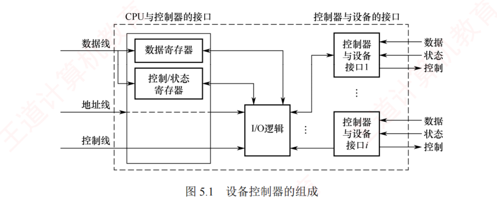
图 5.1 设备控制器的组成 ——左半＝与 CPU 的接口 （数据线 / 地址线 / 控制线），右半＝与设备的接口 （每个接口传数据、控制、状态三类信号），中间＝I/O 逻辑 （对 I/O 命令译码、按地址识别设备）
我的补讲 · 「I/O 接口 / 设备控制器 / I/O 端口」三个词，指的是同一堆硬件的三个视角
书上在同一页里连用了这三个词，还说「I/O 接口也称 设备控制器」 → 潜台词是 它们不是三样东西，是同一块电路的三种叫法/三个粒度 →
所以能考「下列关于 I/O 接口与 I/O 端口的说法正确的是」：
词 指什么 粒度 一句话 I/O 接口 ＝ 设备控制器 整块电路 （含与 CPU 的接口、与设备的接口、I/O 逻辑）整体 「桥梁」 I/O 端口 控制器里可被 CPU 访问的那几个寄存器 寄存器级 「桥上开的几个窗口」 端口地址 给每个端口编的唯一编号 地址级 「窗口的门牌号」
⟹ 于是「独立编址 / 统一编址」编的是端口地址 ，不是接口；「一个控制器可连多个设备」说的是接口 ，不是端口。
题干里出现哪个词，就按哪一行的粒度去判。
⚠️ 还有一个更容易混的：「设备控制器」（硬件）与「设备驱动程序」（软件） 。
两者名字都带「设备」、干的活也都叫「控制设备」，但一个在主板上、一个在内存里 ——
凡是题目问「谁把抽象命令翻译成具体指令」，答案是驱动程序；问「谁把具体指令变成电信号」，答案才是控制器 。 必记 · 设备控制器的六大功能（六个字背下来：收 · 换 · 报 · 址 · 缓 · 错）
① 接收并识别命令 （磁盘控制器可响应读、写、寻道等命令）；② 完成数据交换 （CPU↔控制器、控制器↔设备两段）；
③ 标识并报告设备状态 供 CPU 查询与处理；④ 地址识别 ；⑤ 数据缓冲 ；⑥ 差错控制 。
我的补讲 · 六大功能里有两条会在后面「换个名字」再考一次
书上把六条并列写 → 潜台词是 其中有两条不只是控制器的功能，它们各自在后面独立成节 → 所以能考「下列哪一项不是 设备控制器的功能」：
控制器的功能 它在后面变成了什么 为什么两处都有 ⑤ 数据缓冲 5.2.2 缓冲区管理 （软件缓冲）硬件缓冲器成本高，一般不采用 ⟹ 用内存做缓冲 （原文明写）⑥ 差错控制 5.2.1 差错控制 （暂时性 / 持久性）控制器管硬件级校验，设备独立性软件管「重试几次算失败」
⟹ 这两条是「同一件事分给硬件和软件各做一层」的典型。凡是题目问「差错控制由谁做」，先看它问的是 CRC 校验（控制器）还是重试策略（设备独立性软件） 。 背景 · I/O 接口的四种分法（组原 7.2 已讲，这里只备查）
① 按数据传送方式 ：并行接口（一个字节/字的所有位同时传送）与串行接口（一位一位有序传送），接口需完成并/串或串/并格式转换 ；
② 按主机访问设备的控制方式 ：程序查询接口、中断接口、DMA 接口；
③ 按功能灵活性 ：可编程接口、不可编程接口；
④ 按设备类型 ：字符设备接口、块设备接口、网络设备接口。
知识串联 · 三类端口寄存器，在组原和 OS 里各被考过一次，问法不同
连到 组原 7.2 · 本章 5.1.3 数据/状态/控制这三个寄存器你会在四个地方反复遇到，值得一次串清：
寄存器 谁读谁写 本章哪里用到它 组原哪里用到它 数据寄存器 双向 中断处理程序从它读出数据送内核缓冲区 （5.1.3 第 ④ 步）7.3 中断方式的数据传送 状态寄存器 CPU 读 驱动程序「检查设备状态」就是读它 （5.1.3 第 ③ 步）；程序直接控制方式反复轮询的也是它 7.3 程序查询方式的「测试」 控制寄存器 CPU 写 驱动程序「向命令寄存器发启动信号」 （5.1.3 第 ⑤ 步）7.2 接口的命令字
⟹ 于是 5.1.3 里那句「设置设备寄存器；检查状态 」（图 5.5 驱动层的职能标注）就有了具体所指：
「设置」写的是控制寄存器，「检查」读的是状态寄存器 ——两个动词各对一个寄存器，一个字都不多 。
⭐ 由此还能反推一条：只有驱动程序知道这些寄存器的地址和格式 ，
这正是 5.2.6 图 5.18 里「I/O 端口 → 内核缓冲区」那一段必须由驱动程序完成的原因。 必记 · I/O 端口＝设备控制器中可被 CPU 访问的寄存器，三类
数据寄存器 ：缓存从设备送来的输入数据，或暂存 CPU 发出的输出数据；状态寄存器 ：保存设备的状态或执行结果，供 CPU 读取 ；控制寄存器 ：由 CPU 写入 ，用于启动操作或设置设备的工作模式。
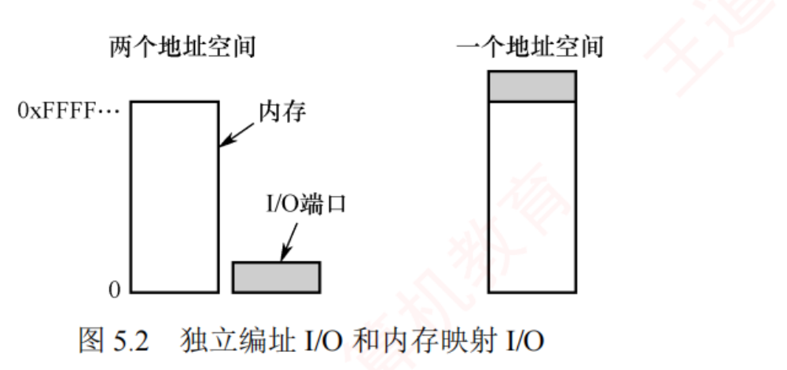
图 5.2 独立编址 I/O（两个地址空间）和内存映射 I/O（一个地址空间） ——左图 I/O 端口自成一片空间，地址值可以与内存相同 ；右图 I/O 端口占掉主存地址空间的一段（灰块）
必记 · 两种编址方式对照（组原 7.2 同款，这里是 OS 口径的复述）
独立编址（I/O 映射方式） 统一编址（内存映射方式） 地址空间 为 I/O 端口建立独立于主存 的地址空间；地址值可以相同 （属不同空间不冲突） 把部分主存地址空间分配给 I/O 端口 ，端口与内存单元共享同一地址空间 ，靠地址范围 区分 访问指令 专用 I/O 指令 （x86 的 IN/OUT）无须专用 I/O 指令 ，普通访存指令即可优点 端口数远少于内存单元 ⟹ 地址线少、译码简单、寻址快 ；程序中 I/O 操作清晰可辨 ，便于阅读调试 编程更灵活；端口可获较大编址空间 ；I/O 保护可由虚拟存储管理系统统一实现，无须额外硬件 缺点 I/O 指令功能有限，灵活性差 ；CPU 需同时提供存储器读/写和 I/O 读/写两组控制信号 占用主存地址空间，减少可用内存容量 ；译码电路复杂，通常降低译码速度
知识串联 · 统一编址的「保护由虚存系统统一实现」直接接 ch3 的页表保护位
连到 OS 3.1 这句话是本节唯一一处 OS 味道比组原重的地方，值得单独拎出来讲。 它自动落进页表 ⟹
页表项里本来就有的「读/写/执行权限位」直接就能拿来保护 I/O 端口 ，不必再造一套硬件。只能靠 CPU 的特权级（IN/OUT 是特权指令）来保护 。⟹ 这就是「一套机制复用到两处」的典型，和 ch3 用页表保护位同时做「越界保护」和「共享页的只读」 是同一个套路。
凡是看到「无须额外硬件支持」这几个字，就去找它复用了谁的现成机制。
📄 p.308
5.1.2 I/O 控制方式 ← 组原 7.3 讲得更深（5 道综合真题 ≈ 75 分），这里只补 OS 口径
我的补讲 · 四种方式的演进，其实是同一件事「外包」了三次
书上说「每种方式的优点都在于解决了前一种方式的主要缺点」 → 潜台词是 这是一条单向的演进链，每一步都在把某项工作从 CPU 手里拿走 →
把「每一步拿走了什么」列出来，四种方式的顺序就再也不会记反：
从 → 到 拿走了 CPU 的哪项工作 交给了谁 程序直接控制 → 中断驱动 「反复查状态」这件事 中断机制 （设备主动报告）中断驱动 → DMA 「一个字一个字地搬」这件事 DMA 控制器 （数据不再过 CPU 寄存器）DMA → 通道 「设定每次传输的参数」这件事 通道程序 （参数由通道自己动态决定）
⟹ 三步各解决一个痛点，顺序不能颠倒也不能跳 。考场上遇到排序题（「按 CPU 干预由多到少排列」），
直接按这张表从上往下读即可 。
⚠️ 但要注意一处例外：「CPU 干预少」不等于「速度一定快」 。
对字符设备 （键盘）而言，中断驱动完全够用，上 DMA 反而是杀鸡用牛刀 ——
书上正是这么说的：「若将中断驱动 用于块设备 的 I/O 操作，则显然是极其低效的」，
反过来说，用于字符设备时它一点也不低效。 必记 · 贯穿四种方式的唯一主线（所有排序题的判据）
「尽量减少 CPU 对 I/O 控制的干预，把 CPU 从繁杂的 I/O 控制事务中解脱出来，以便更多地去执行运算任务。」 每种方式的优点，都在于解决了前一种方式的主要缺点。 📎 王道页脚注①原话：「本节的内容在《计算机组成原理考研复习指导》一书的 7.3 节中描述得比较详细，建议读者结合复习。」
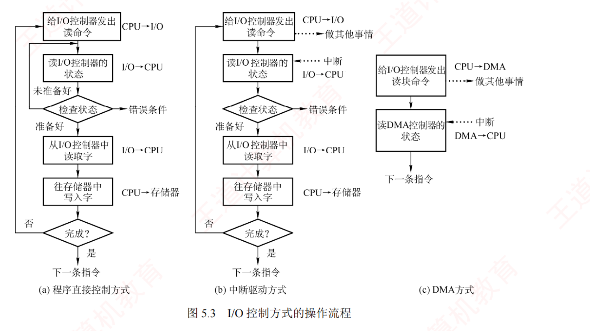
图 5.3 I/O 控制方式的操作流程 ——(a) 程序直接控制（「检查状态 → 未准备好 → 回到读状态」形成死循环 ）· (b) 中断驱动（发完命令就「做其他事情」，靠中断回来）· (c) DMA（整个流程只剩两个方框 ，中间全部交给 DMA 控制器）⚠️ 这张三联图是本节最重要的图：三张图的方框数量 6 → 6 → 2，一眼看出 CPU 的活越来越少。
程序直接控制 CPU 反复轮询状态干预：每个字，全程
中断驱动 设备准备好才打断 CPU干预：每个字，一次
DMA 数据不过 CPU 寄存器干预：每个块，首尾
通道 执行通道程序自主决定干预：一组 I/O，一次
我的补讲 · 四种方式只有三个维度会被考，其余全是修辞
书上用四段散文 + 一个裁缝店比喻讲这四种方式 → 潜台词是 它们的差别只有三处，其余都是同一句话换说法 →
所以能考的题型只有一种：给一个描述，问它属于哪种方式 。把三个维度做成表，任何描述都能一秒归位：
方式 ① 干预单位 ② 数据过不过 CPU 寄存器 ③ 干预时机 并行程度 程序直接控制 字（节） 过 全程死等 CPU 与设备完全串行 中断驱动 字（节） 过 每传一个字中断一次 设备准备数据时 CPU 可干别的 DMA 数据块 不过 （设备↔内存直通）只在块的开始和结束 整块传输期间 CPU 完全自由 通道 一组 I/O 操作 不过 由通道程序 决定何时汇报 CPU、通道、设备三者并行
⚠️ 最常错的是「中断驱动 vs DMA」——很多人只记住「DMA 传的是块」，
但真题更爱考第 ② 维：「数据是否经过 CPU 的寄存器」 。中断驱动方式下，设备与内存之间的数据交换必须 经过 CPU 中的寄存器 ，这是它的两个「明显的问题」之一。 我的补讲 · 王道的裁缝店比喻，把它当成考场上的判据表用
这个比喻是全章最好用的记忆钩子，我把它压成四行——读题时把描述往这四行里套，一套一个准 ：
方式 比喻 它对应的技术事实 程序直接控制 裁缝没有客户电话，客户只能每隔一段时间亲自跑去店里看 CPU 中未采用中断机制 ，设备无法报告完成 中断驱动 裁缝有了电话，每做完一件就打电话 ，但每件衣服都要跑一趟 以字（节） 为单位干预 ⟹ 用于块设备极其低效 DMA 客户雇了秘书 ，衣服先进仓库，每 100 件才汇报一次 数据直通内存 ，只在块首尾 干预 通道 客户给秘书一份办事清单 ，秘书自主决定存放位置与汇报时机；一位 DMA 秘书只对接一位裁缝，通道秘书可同时协调多位 通道程序动态确定参数 ；一个通道可管多台设备
⟹ 比喻里那句「一位 DMA 类秘书通常只能对接一位裁缝 」正是 DMA 与通道的第二条区别，
王道把它藏在比喻的最后一句里 ，正文里也只有一行——这种「只写一遍」的句子恰恰是命题人最爱挑的 。
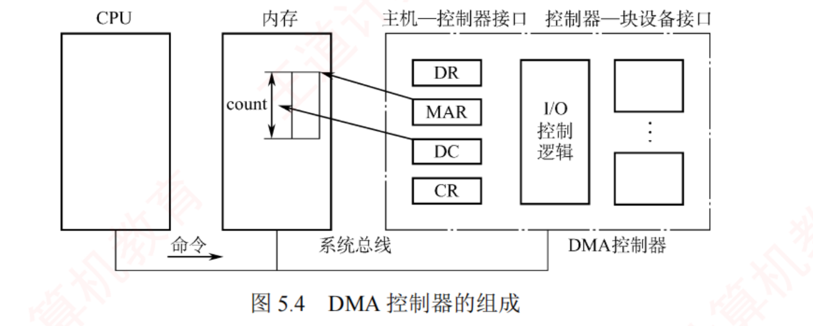
图 5.4 DMA 控制器的组成 ——四类寄存器 DR / MAR / DC / CR 全部画在「主机—控制器接口」一侧；注意内存那一侧有一条直通箭头 ，这正是「数据不过 CPU」的图示
必记 · DMA 控制器的四类寄存器（组原同款，两科共用一套）
命令/状态寄存器 CR ：暂存 CPU 发来的 I/O 命令或设备状态；内存地址寄存器 MAR ：存放数据在内存中的起始地址 ——输入时（设备→内存）是目标地址，输出时（内存→设备）是源地址 ；数据寄存器 DR ：暂存单次传输的数据单元 （如一个字）；数据计数器 DC ：记录本次需传送的字（节）总数 。考点追踪 · DMA 方式的工作流程（2017）
我的补讲 · DR 存「一个字」而 DMA 又号称「以块为单位」，这不矛盾吗
书上一边说 DMA「基本传送单位是数据块」，一边又说 DR「暂存单次传输的数据单元（如一个字）」 →
潜台词是 「块」说的是干预粒度 ，不是搬运粒度 → 所以能考「DMA 方式下 CPU 每传送一个字都要干预一次吗」：不需要 。 把话说清楚：物理上仍然是一个字一个字往内存里搬 （所以要有 DR），
但每搬一个字并不惊动 CPU ——是 DMA 控制器自己在数 DC，数到 0 才发一次中断。 ⟹ 由此可以立一条通用判据：凡是问「干预/中断多少次」，看的是 DC 归零几次，不是搬了几个字 。
这条在组原 7.3 的 DMA 计算题里是直接拿分的（一次传输 = 一次中断），本章只考它的定性版本。
知识串联 · DMA 与 CPU 抢总线＝组原 7.3.3 的「周期窃取」
连到 组原 7.3.3 本节说「DMA 控制器接管总线 后，以突发方式将整块数据直接传输」，
但没讲「接管总线时 CPU 干什么」——那部分在组原： 停止 CPU 访存 （DMA 期间 CPU 完全让出）· 周期窃取（周期挪用） （DMA 只在 CPU 不访存的周期插进去，或强行窃取一个存取周期）· DMA 与 CPU 交替访存 。⚠️ 一条两科都爱考的结论：DMA 请求的优先级高于 中断请求 ——因为 DMA 若不及时响应会丢数据 ，而中断晚几拍只是慢一点。⟹ 组原 ch7 综 05 那道「未计周期窃取 240 μs」的题，问的正是这件事。本章不会考计算，但「DMA 优先级高于中断」这句判断题在 OS 侧照样出 。
我的补讲 · 这两个问题各自被谁解决了——答出来，四种方式就彻底串起来了
书上把中断驱动的两个缺点写得很郑重，却没有紧接着说「谁来解决」 → 自己补上这一步，DMA 的三个特点就不用背了：
中断驱动的问题 DMA 的哪个特点在解决它 ① 数据交换必须经过 CPU 的寄存器 「数据直接在设备与内存之间传输，不再经过 CPU」 ② CPU 以字（节）为单位干预 「基本传送单位是数据块」＋「仅在数据块传送开始和结束时需要 CPU 干预」
⟹ 也就是说：DMA 的三个特点不是凭空列出来的，它们是对中断驱动两个缺点的逐条回应 。
记住这个对应关系，任何一边忘了都能从另一边推回来。
⭐ 同理，通道解决的是 DMA 剩下的那个问题：DMA 的参数还得 CPU 来设、一个控制器只服务一台设备
⟹ 通道用「执行通道程序 」和「一个通道管多台 」把这两条也补上了。三代技术，六个痛点，一一对应，没有一个多余。 必记 · 中断驱动方式的两个「明显的问题」（原文用词，必须原样记）
① 设备与内存之间的数据交换都必须经过 CPU 中的寄存器 ；CPU 是以字（节）为单位进行干预的 ，若将这种方式用于块设备 的 I/O 操作，则显然是极其低效的。中断驱动 I/O 方式的速度仍然受限。 考点追踪 · 中断处理程序执行时请求进程的状态（2017、2023）
我的补讲 · 2017 与 2023 连考两次的「请求进程的状态」，答案只有一句话
书上写「当前运行进程发出读命令 → 该进程将被阻塞 → ……中断处理程序……处理完成后，系统解除原 I/O 请求进程的阻塞状态 」 →
潜台词是 从发出请求到 I/O 完成，请求进程全程处于阻塞态 → 所以能考：
时刻 请求进程 P 的状态 CPU 在跑谁 P 刚发出 read 系统调用 运行 → 阻塞 调度程序选中的别的进程 Q 设备正在准备数据 阻塞 Q 中断处理程序正在执行 仍然是阻塞 （⭐ 就考这一格）中断处理程序（内核态 ，借的是 Q 的时间片） 中断处理程序唤醒 P 之后 阻塞 → 就绪 （不是运行 ） 仍是 Q，直到下次调度
⚠️ 两个高频错点：① 中断处理程序执行时 P 还在阻塞队列里，不是就绪也不是运行 ；
② 被唤醒后 P 进的是就绪队列 ，要等调度才能上 CPU 。
图 5.17（5.2.6）把这两步单独画成了两个方框——「进程 P 被唤醒加入就绪队列」和「进程 P 重新获得 CPU」是两个框，不是一个 。 知识串联 · 「中断处理程序借谁的时间片跑」＝ ch2 的进程/线程调度模型
连到 OS 2.1 / 2.2 中断处理程序不是一个进程 ，它没有自己的 PCB，也不参与调度——
它是「插」在当前进程执行流里的一段内核代码 ，用的是被中断那个进程（上例中的 Q）的内核栈。⟹ 由此推出两条常考结论：
① 中断处理不引起进程切换 （可能导致 切换，但中断处理本身不是切换）——与 ch1.3「中断处理是发生和执行都在内核态 」对齐；中断处理程序必须快速、非阻塞，不得调用可能引起进程睡眠或调度的函数 （原文原话）——
因为它一旦睡下去，睡的是「别人的」上下文，醒不回来 。⟹ 这条正是下面 5.1.3「处理中断」三环节里那句话的真正原因，两处要连起来读。
背景 · 通道控制方式（考纲未列，带 * 号；只需记住与 DMA 的两条区别）
I/O 通道＝一种专用处理机 ，能执行存放在主存 中的通道程序 （由一系列专用通道指令组成）。
设置通道后，CPU 仅需发一条 I/O 指令（指明设备与通道程序的内存起始地址），通道便自主执行，结束后向 CPU 发中断请求。通道 vs 通用处理机 ：通道的指令集专用于 I/O 控制、功能单一 ；不具备独立的主存储器 ，通道程序与数据都放在主机内存 中，访存受 CPU 控制。⭐ 通道 vs DMA 的两条区别（这两条要背，考纲虽未列通道，但它常作为选项出现）：
① DMA 需 CPU 预设 数据块大小、内存始址等参数；通道通过执行程序动态确定参数 ，能自主完成涉及多台设备、多个阶段 的复杂 I/O；
② 每个 DMA 控制器通常仅服务一台设备 ，而一个通道可同时管理多台设备 。
陷阱 · 通道是硬件 ——这是本章第 2 条送分线
「下列属于硬件的是」这种题，本章的四个常见选项是：通道（硬件）· SPOOLing（软件）· 缓冲池（软件）· 覆盖（软件） 。 通道是「一种专用处理机」——处理机当然是硬件。但它执行的通道程序放在主存里，是软件 ——
命题人最爱在这一层做文章：「通道程序存放在通道自己的存储器中」是错的，它没有独立主存。
📄 p.310
5.1.3 I/O 软件层次结构 ⭐ 组原完全没有，本节最该背的一张表
我的补讲 · 分层不是白拿的：它的代价正好是本章最后一节要优化的东西
书上只讲分层的好处（「任一层的修改都不会影响其他层次」） → 但考试也会问代价 →
代价就是「每穿一层，多一次拷贝、多一次函数调用」 ：
穿过的层 发生了什么代价 本章哪里提到它 用户层 → 系统调用 一次陷阱指令 + 一次模式切换 5.1.3 / 5.2.6 系统调用 → 设备独立性软件 一次「内核缓冲区 → 用户缓冲区」拷贝 5.2.6 图 5.18 ⭐ 设备独立性软件 → 驱动 一次逻辑名/逻辑块号的转换 5.1.3 驱动 → 控制器 一次「I/O 端口 → 内核缓冲区」拷贝 5.2.6 图 5.18 ⭐
⟹ 一次 read 至少两次拷贝 + 两次模式切换 。这正是 5.4 疑难点二要专门讨论「用户缓冲区 vs 内核缓冲区」的原因，
也是现代 OS 拼命搞零拷贝、内存映射文件 （ch3.2，2025 年真题）的原因。
⟹ 由此得到一条答简答题的通用模板：「分层的好处是可移植、易维护、接口稳定；代价是每层都要做一次转换和拷贝，增加了 I/O 路径长度」 。
只答好处不答代价，是很多人这类题拿不满分的原因。 必记 · 分层的理由（一句话，也是所有分层设计的通用理由）
每层利用其下层提供的服务，完成 I/O 功能中的特定子任务，并屏蔽其实现细节，向上层提供统一接口。
只要层间接口保持不变，任一层的修改都不会影响其他层次，仅最低层涉及硬件的具体特性。 考点追踪 · I/O 子系统各层次的功能及分析（2011、2012、2013）
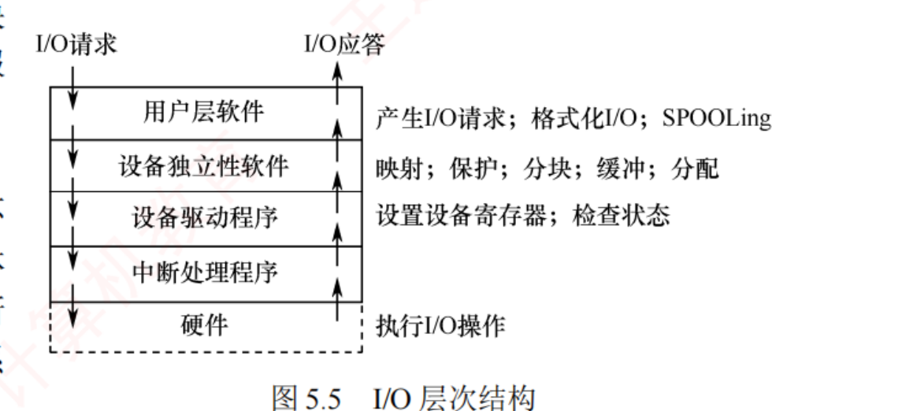
图 5.5 I/O 层次结构 ——左侧箭头：I/O 请求自上而下、I/O 应答自下而上 ；右侧那一列职能标注就是历年考题的原句 ，一个字都不要改
必记 · 四层职能表（图 5.5 右侧标注原文，背成条件反射 ）
层次 右侧标注的职能（原文） 一句话记法 用户层软件 产生 I/O 请求；格式化 I/O ；SPOOLing 用户能感知的两件事：排版和排队 设备独立性软件 映射；保护；分块；缓冲；分配 五个动词，全是「与具体设备无关」的公共活 设备驱动程序 设置设备寄存器；检查状态 只干「摸寄存器」这一件事 中断处理程序 （承上启下） 把硬件的「完成信号」翻译成软件的「唤醒进程」 硬件 执行 I/O 操作 —
陷阱 · SPOOLing 在用户层 ——这是本章最高频的一处失分
直觉会说「SPOOLing 又是磁盘井又是输入输出进程，怎么可能在用户层」，但图 5.5 白纸黑字写在用户层软件那一行。 怎么记住不别扭：分层分的是「谁发起」，不是「谁辛苦」 。SPOOLing 是为用户作业服务的、可有可无的一层包装 ，
内核没有它照样能打印；而「分配设备」内核不干就没人干了——所以前者在用户层，后者在设备独立性软件层 。 ⟹ 同一行里的「格式化 I/O」同理：printf 把 %d 排成字符串这件事，是 C 库在用户空间做的 ，内核只认字节流。
我的补讲 · 2011/2012/2013 连考三年的那类题，只需要一张「动词归属表」
书上把四层的职能写成两处（图 5.5 的标注 + 各小节的正文） → 潜台词是 考的是动词 ，不是层名 →
所以能考「下列哪一项由设备独立性软件完成」。我把两处的动词合并去重，做成下面这张表——考场上照着归位即可 ：
动词 / 描述 归属层 为什么 产生 I/O 请求、格式化 I/O 、SPOOLing 、调用库函数 用户层 用户空间的包装，必须通过系统调用才能拿到 OS 服务 逻辑设备名 → 物理设备名的映射 设备独立性软件 「映射」 设备保护 （禁止用户直接访问硬件）设备独立性软件 「保护」 提供统一大小的逻辑块 （屏蔽块长差异）设备独立性软件 「分块」 缓冲管理 （单/双/循环/缓冲池）设备独立性软件 「缓冲」 设备的分配与回收 设备独立性软件 「分配」 差错控制 （持久性错误、坏块表）设备独立性软件 驱动解决不了的才上交到这一层 翻译系统调用的参数 设备独立性软件 ⚠️ 与下一行是 5.2 选 16/17 的原题对照 向设备寄存器写命令 、检查设备状态 设备驱动程序 ⚠️ 只有它直接摸硬件 逻辑块号 → 柱面号/盘面号/扇区号 设备驱动程序 这是「与具体设备相关」的转换 清除中断标志、唤醒等待进程 中断处理程序 —
⚠️ 全表最容易配反的是最后两组：「翻译参数」在设备无关层，「写寄存器」在驱动层 ；
「逻辑设备名→物理设备名」在设备无关层，「逻辑块号→物理地址」在驱动层 。
判据只有一句：这一步要不要知道「你面前是哪一型号的设备」——要，就是驱动。 必记 · 设备独立性（设备无关性）的定义与两个好处
定义：应用程序在使用 I/O 设备时无须依赖具体的物理设备 ——应用程序用逻辑设备名 请求某类设备，
系统在运行时把逻辑设备名映射 为实际的物理设备名。使用逻辑设备名的两个优势 ：① 提高设备分配的灵活性 ；② 易于实现 I/O 重定向 （用于 I/O 操作的设备可以更换 ，而不必修改应用程序）。考点追踪 · 设备独立性所涵盖的内容（2020）
知识串联 · 「逻辑名 → 物理名」这条通道，四科各有一个孪生兄弟
跨章枢纽 · 一个名字换一层 「用一个抽象名字挡住物理实体」是 408 里被复用得最多的一招。本节的 LUT 只是其中一环 ：
抽象名 物理名 谁负责映射 在哪一章 逻辑设备名 /dev/printer物理设备名 3 号打印机 LUT 逻辑设备表 本章 5.2.3 虚拟地址（页号） 物理地址（页框号） 页表 / TLB OS 3.1 文件名 / 路径 inode 号 → 盘块号 目录 + FCB/inode OS 4.2 逻辑块号 柱面号·盘面号·扇区号 磁盘驱动程序 本章 5.1.3 主存地址 Cache 行号（组号+标记） Cache 映射硬件 组原 3.3
⟹ 五行里的每一行都在做同一件事：加一层间接，换来「换掉底下那个东西时上面不用改」 。
I/O 重定向、进程换页、文件移动、Cache 替换——本质上都是这一句话的应用。
记住这条，你在四科里遇到任何「表」都能立刻回答「它为什么存在」。 知识串联 · 五步里的「校验请求的合法性」，是 ch4 文件保护与 ch3 地址保护的同一动作
连到 OS 3.1 · 4.2.9 驱动的第 ② 步「禁止从只写设备读、禁止向只读方式打开的设备写」——
这句话你在 ch4 见过一模一样的：
检查什么 本章 ch4 文件管理 ch3 内存管理 操作与权限是否匹配 只写设备不能读 （驱动第 ② 步）打开方式 mode 与 inode 中的访问权限比对 （4.2.7 打开文件）页表项的读/写/执行位 访问对象是否越界 请求的块号是否超出设备容量 读写指针是否超出文件长度 页号是否超出页表长度（越界中断） 检查失败怎么办 向上层返回错误 打开失败，返回错误 产生越界异常（内中断）
⟹ 三章的做法完全一致：在「真正动手之前」查一遍权限和边界，查不过就返回错误而不是崩溃 。
这就是 5.1.3 图 5.5 里「设备独立性软件」那一行的「保护」二字在驱动层的延伸。
⚠️ 但注意分工：「设备保护（禁止用户直接访问硬件）」在设备独立性软件 层，
「校验这次请求合不合法」在驱动 层 ——前者管「你能不能碰这台设备」，后者管「你这次操作对不对」。 必记 · 设备驱动程序的工作流程五步（2025 年刚考过「设备驱动程序的功能」 ）
① 将抽象请求转换为具体操作 ——例：磁盘驱动程序把逻辑扇区号转换为柱面号、盘面号和扇区号 ；校验请求的合法性 ——禁止从只写设备（打印机）读，或向只读方式打开的设备写；检查设备状态 ——启动前读状态寄存器 ，确认设备是否就绪；传递参数 ——向控制器的相应寄存器写入命令、数据缓冲区地址、传输长度 ；启动设备并处理后续 ——向命令寄存器 发启动信号；当前进程随即被阻塞，CPU 转去执行其他就绪进程 ，
设备完成并发出中断后由中断处理程序将其唤醒。初始化、状态维护、错误处理以及与中断处理的配合 。
我的补讲 · 五步里的第 ⑤ 步藏着一句「进程状态题」的答案
书上把「当前进程随即被阻塞」写在驱动程序那一节 → 潜台词是 让进程阻塞这个动作是驱动程序 发起的，不是中断处理程序 →
所以能考「进程是在哪一层被阻塞的」。
把一次 I/O 的「进程状态迁移责任人」列全（这张表配合 5.2.6 的图 5.17 一起看）：
动作 谁做的 进程状态 陷入内核、检查参数 系统调用服务例程（设备独立性软件 ） 运行 启动设备后让进程阻塞 设备驱动程序 运行 → 阻塞 数据到达、唤醒进程 中断处理程序 阻塞 → 就绪 把数据从内核缓冲区复制到用户缓冲区 设备独立性软件 就绪 → 运行（需重新调度）
⟹ 记法：「阻塞」是驱动干的（它知道设备要多久），「唤醒」是中断干的（它知道设备好了） 。
两个动作分属两层，这正是分层设计的意义所在。 我的补讲 · 五步里哪几步在内核态？——这是 ch1.3 那道题在本章的翻版
书上按时间顺序讲五步，没标注 CPU 处于什么状态 → 但真题最爱问的正是这个 → 逐步标一遍：
步骤 谁执行 CPU 处于 ① 检测并响应中断（指令周期末 检测） 硬件 被中断进程原来的状态（可能是用户态 ） ② 保护现场：PC/PSW 硬件压栈 硬件 此时已切到内核态 ② 保护现场：其他寄存器由 OS 保存 软件 内核态 ③ 转入中断处理程序 硬件（查向量表） 内核态 ④ 处理中断（读状态寄存器、搬数据） 软件 内核态 ⑤ 恢复现场并返回 软件 + iret 特权指令 内核态 → 返回后回到原状态
⚠️ 第 ① 步是唯一一处「还没切换」的：中断的检测 发生在原状态，中断的响应 才切内核态 。
ch1.3 的 2024 年真题就把「发生时」和「开始执行时」拆成两问考 ——本章这五步正好是它的细化版。
⟹ 一句话收口：中断处理程序全程运行在内核态，但触发它的那条指令可能在用户态 。 必记 · 中断处理的五步（注意第 2 步的硬件/软件分工 ）
① 检测并响应中断 ——CPU 在指令周期末 检测到中断信号，暂停当前进程；保护被中断进程的 CPU 现场 ——硬件自动将 PC 和 PSW 压入中断栈；随后，操作系统软件将其他 CPU 寄存器内容也保存至该栈 ；转入相应设备的中断处理程序 ；处理中断 ——读状态寄存器 判断是否正常完成：成功则把设备数据寄存器中的内容传送到内存缓冲区 ，异常则错误处理；恢复现场并返回 ——从中断栈恢复所有寄存器，CPU 从被中断指令的下一条继续执行 。
知识串联 · 第 ② 步的「硬件做什么、OS 做什么」是 ch1.3 那把刀的原样重现
承 OS 1.3 OS 第 1 章 1.3 节（11 页 18 真题，四科失分密度最高的一节）反复考的就是这一刀，本节又切了一次：
动作 硬件做 OS 软件做 关中断 ✅ 硬件 — 保存断点（PC）与 PSW ✅ 硬件自动压入中断栈 — 保存其他通用寄存器 — ✅ 中断处理程序（软件） 识别中断源 / 查中断向量表 ✅ 硬件（向量中断） 向量表的初始化 由 OS 做 设置中断屏蔽字 — ✅ OS（且是特权指令，内核态）
⟹ 这条分界线 2015 / 2020 / 2022 三年考过同一把刀（见 OS ch1 精读版）。
本节第 ⑤ 步「从被中断指令的下一条 继续」也要与 ch1.3 对齐 ：中断回 i+1，异常回 i 重新执行（缺页是异常） 。 必记 · OS 对中断处理程序本身的管理，三个环节（较新的细节，2025 前后加入 ）
① 注册中断 ——驱动程序初始化时，向内核注册中断号及其处理函数入口地址 ，建立硬件中断信号与服务代码的映射；处理中断 ——典型流程：ⅰ 确认中断是否由本设备产生；ⅱ 清除控制器中的中断标志，防止重复触发；ⅲ 执行必要的硬件操作 。
由于运行在中断上下文中，处理程序必须快速、非阻塞，不得调用可能引起进程睡眠或调度的函数。 注销中断 ——驱动被卸载或设备停用时注销以释放资源。
若该中断请求线为独占 ，则注销后内核立即禁用 该线；若为共享 ，则仅移除本设备的处理例程，该中断线需等到所有关联设备均注销后才会被最终禁用 。
我的补讲 · 三环节里，独占/共享中断线那一句是明摆着的下一题
书上专门为「注销」写了两种情形 → 潜台词是 命题人可以把两种情形对调 →
所以能考「某设备驱动卸载后，其中断请求线一定被禁用吗」：不一定，共享线要等最后一个设备注销 。 为什么必须这样设计？因为中断线是物理资源，一条线上可能挂着好几个设备 ——
你把线禁了，别人的设备就永远叫不醒 CPU 了。这与「共享设备的回收」是同一个道理：只要还有人在用，就不能真正释放。 再看第 ② 环节里的「清除中断标志，防止重复触发 」——这句同样值一道题：
如果不清标志，中断处理程序返回后 CPU 又会立刻看到同一个中断请求，从而无限重入 。 ⟹ 三环节我按「什么时候做」重排一遍更好记：装驱动时注册 → 每次中断时处理 → 卸驱动时注销 。
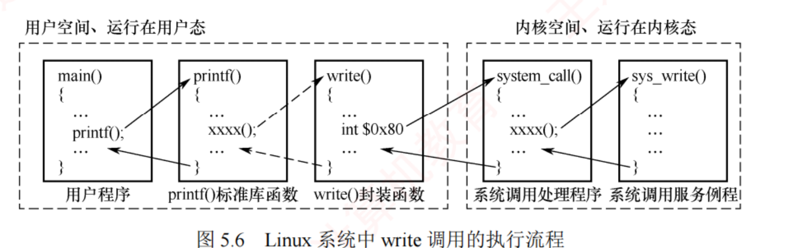
图 5.6 Linux 系统中 write 调用的执行流程 ——左半虚线框＝用户空间/用户态 （main() → printf() → write() 封装函数，含 int $0x80）；右半虚线框＝内核空间/内核态 （system_call() → sys_write()）。那条虚线就是用户态与内核态的分界，跨越它的唯一合法方式是陷阱指令。
知识串联 · 「系统调用号 + 跳转表」＝中断向量表的软件版，两处是同一个设计
连到 OS 1.3 · 组原 5.5 第 ④ 步「按 eax 中的调用号通过跳转表分派给 sys_write() 」——
这句话和中断向量表的工作方式一模一样，值得并排看：
系统调用（本节） 中断/异常（5.1.3、ch1.3、组原 5.5） 触发者 用户程序主动执行陷阱指令 设备或 CPU 内部被动产生 「编号」放在哪 寄存器 eax 里的系统调用号 中断类型号（由硬件给出） 查什么表 系统调用跳转表 中断向量表 入口 统一入口 system_call()，再分派 各中断源各有入口 （向量中断） 返回 iret，回到陷阱指令的下一条 中断回 i+1；故障（如缺页）回 i 重执行
⟹ 两者的骨架完全相同：「一个编号 + 一张表 + 一个统一入口」 。
差别只在「谁按下了按钮」——系统调用是自愿的（内中断/异常），设备中断是外来的（外中断）。
⭐ 这也解释了为什么系统调用被归为「异常」而不是「中断」：它由当前指令引发、与当前指令相关，符合内中断的定义 。
ch1.3 把这条列为四条分界线之一，本节给了它一个可视化的实例（图 5.6）。 必记 · Linux 一次 write 的七步（陷阱指令与中断是全章收口句 ）
① 用户程序调用 printf() → 经标准库内部封装 → 触发 write() 系统调用的封装函数；陷阱指令 （IA-32 下的 int $0x80）。执行该指令之前 ，若干传送指令把系统调用号 及参数（文件描述符、缓冲区地址、字节数）写入指定寄存器（如 eax） ；受控的软中断 → 硬件自动完成从用户态到内核态的模式切换 ；统一入口程序 system_call() ，按 eax 中的调用号通过跳转表分派给 sys_write() ；与设备无关的公共操作 （参数检查、内核缓冲区分配），再定位设备并调用驱动程序 ；把当前进程置为阻塞态并主动调用调度程序让出 CPU ；清除中断标志、唤醒等待 I/O 的进程 →
内核逐级返回，最终在 system_call() 末尾执行 iret 等特权指令 切回用户态，在陷阱指令的下一条指令处恢复执行 。考点追踪 · 键盘 I/O 过程的分析（2010、2024）
必记 · 王道给本节的收口句（原文，极适合做卡片）
一次完整的 I/O 请求依次穿越了用户层软件、系统调用接口、设备独立性软件、设备驱动程序和中断处理程序 ；
其中，陷阱指令是从用户态进入内核态的唯一合法入口 ，中断是设备通知操作完成、触发进程状态转换的核心机制 。
二者共同实现了用户态与内核态之间的安全切换。
知识串联 · 「陷阱指令是唯一合法入口」＝ ch1.3 那条「陷入指令在用户态执行」
承 OS 1.3 这句收口句和 ch1.3 的四条分界线里的第四条是同一件事，两处必须合起来记： ① 陷入指令（trap / int $0x80 / syscall）本身在用户态执行 ——它是用户程序里的一条普通指令，不是特权指令 ；② 执行它之后 CPU 才切到内核态 ——切换是硬件自动完成 的（模式位由硬件置位）；③ 返回用 iret 等特权指令 ——返回是特权指令，进入不是 ，这一进一出不对称，正是命题人做文章的地方；④ 系统调用属于异常 （内中断），不是外中断 ——所以返回的是「陷阱指令的下一条 」，与外中断回 i+1 一致，
但与缺页这类故障 不同（故障要回 i 重新执行）。⟹ ch1.3 是四科已建章里失分密度最高的一节（11 页 18 真题＝1.64 道/页），本节的 write 流程正是它的实例化版本。
如果这七步读起来吃力，回去把 ch1.3 重刷一遍比在这里硬记有用得多。
📄 p.313
5.1.4 应用程序 I/O 接口 ⭐ 组原完全没有，纯概念题
必记 · 引入应用程序 I/O 接口的两个目的
① 让应用程序无须关心底层硬件的具体实现细节 ；
② 使新设备能以模块化 方式方便地加入系统，而无须改动内核代码 。字符设备、块设备和网络设备 ，设备间的具体差异由相应的驱动程序封装 。
我的补讲 · 三类接口与四种控制方式的默认搭配——书上散在两处，合起来才是一道题
5.1.2 讲控制方式、5.1.4 讲设备接口，中间隔了两页 → 但书上在两处各埋了一句默认搭配 → 合起来正好是一张表：
设备类型 基本特征 默认的 I/O 控制方式 原文出处 字符设备 （键盘、打印机）速率低、不可寻址 、只能顺序存取 中断驱动方式 5.1.1、5.1.4 各写了一遍 块设备 （磁盘）速率高、可寻址 DMA 方式 5.1.4「磁盘的 I/O 常采用 DMA 方式」 网络设备（网卡） — 套接字接口之下通常也是 DMA 书上未明写
⟹ 这张搭配表能直接答两类题：「键盘通常采用哪种 I/O 控制方式」（中断驱动） 、
「为什么不用中断驱动管理磁盘」（磁盘是块设备，按字节中断极其低效——正是 5.1.2 的第 ② 个问题） 。
⚠️ 别把搭配记死：低速字符设备也可以 用轮询（嵌入式系统里很常见），磁盘也可以 用中断驱动（只是慢） 。
题目问「通常/一般」才按这张表答；问「能不能」一律答「能」。 必记 · 三类设备接口对照
字符设备接口 块设备接口 网络设备接口 单位 字符 数据块 报文 / 流 典型设备 键盘、打印机 磁盘 网卡 基本特征 速率低、不可寻址 ，通常用中断驱动 速率高、可寻址 ，磁盘的 I/O 常采用 DMA — 关键操作 get / put （从/向字符缓冲区读写）、in-control 指令 （含多个参数，指定设备相关的特定功能）、打开与关闭 （多为独占设备，需互斥共享）read() / write() / seek() （seek() 用来指定下一个传输块 ）套接字（Socket）接口 ：创建本地套接字 → 连接到远程套接字 → 收发数据地址抽象 只能顺序存取 隐藏磁盘的物理二维结构 （磁道号+扇区号），把所有扇区从 0 到 n−1 依次编号，二维变线性 —
我的补讲 · 块设备接口那句「二维变线性」，是本章与 ch4、5.3 的接头处
书上说块设备接口「把所有扇区从 0 到 n−1 依次编号，从而把二维结构变为线性地址空间」 →
潜台词是 你在 ch4 用了一整章的「逻辑块号」，正是在这一层被造出来的 → 所以能考「逻辑块号在哪一层变成物理地址」：
层 它看到的地址 谁做的转换 用户 / 文件系统（ch4） 文件内的第 i 块 FCB / inode 的索引表 块设备接口 （本节）线性盘块号 0 … n−1 ⬅ 就是这一层把二维压平的 设备驱动程序（5.1.3） 柱面号·盘面号·扇区号 磁盘驱动程序 设备控制器（5.1.1） 电信号、磁头动作 硬件
⟹ 2019 年那道「将簇号转化为磁盘物理地址」 的真题（5.3.1 的考点追踪），走的就是第 2 行到第 3 行这一步。
簇 → 盘块 → 柱面/盘面/扇区，中间不能跳。 必记 · 阻塞 I/O 与非阻塞 I/O（咖啡店比喻直接背 ）
阻塞 I/O 非阻塞 I/O 定义 多数 OS 默认采用的模式 。数据未就绪则进程立即被阻塞 并移入等待队列；I/O 完成后内核把它移回就绪队列 ，再次获得 CPU 时系统调用返回结果内核不阻塞该进程，系统调用立即返回 。数据未就绪则返回表示「暂无数据」的错误状态（如 −1） ，进程可继续干别的并择机重试 ；重试时数据已就绪则复制数据并返回实际传输的字节数 咖啡店比喻 点单后只能原地等 ，其间无法做其他事 点单后去逛商场，每隔一段时间回来问「好了吗？」 优点 实现简单，适用于顺序处理或低并发场景 等待期间不被阻塞，适合高并发或高响应性应用 缺点 等待期间CPU 资源闲置 ，整体利用率较低 采用轮询方式频繁检查 I/O 状态，浪费 CPU
知识串联 · 阻塞/非阻塞 ≡ 5.1.2 的中断驱动/程序轮询，只是换了个楼层
连到 5.1.2 · 同一个权衡的两次出现 把两张表叠起来看，你会发现它们是同一个权衡在硬件层 和系统调用层 各出现了一次：
层 「死等」的做法 「先走再回来问」的做法 共同的代价 硬件 / 控制方式 （5.1.2）程序直接控制 （CPU 轮询状态寄存器）中断驱动 （设备主动打断）轮询＝浪费 CPU 系统调用 （5.1.4）阻塞 I/O （进程睡在等待队列）非阻塞 I/O （返回 −1，自己再来问）轮询＝浪费 CPU
⚠️ 但两处的「谁在等」不同，这正是最容易绕晕的地方：程序直接控制里死等的是 CPU （所以是灾难）；
阻塞 I/O 里等待的是进程 ，CPU 早就被调度去干别的了（所以完全可以接受） 。
⟹ 由此得到一条判断题的通用解法：「阻塞 I/O 会浪费 CPU 时间」是错 的 ——
它浪费的是这个进程的墙钟时间 ，CPU 一秒都没闲着（除非系统里真的没有别的就绪进程）。
反倒是非阻塞 I/O 的轮询会真的烧 CPU。 必记 · 5.1.5 本节小结——开篇设问「I/O 管理需要完成哪些核心功能」的答案（4 部分）
① 状态监控 ——实时掌握外部设备的工作状态（忙、就绪、故障等）；数据传输 ——协调并完成主机与设备之间的数据交换；设备分配 ——在多用户/多进程环境下负责设备的分配、共享与回收；设备控制 ——通过设备驱动程序启动 I/O 操作，并处理设备返回的完成信号或故障中断。
我的补讲 · 5.1 读完自测五问（答不上就回去补，别往下走）
下面五问覆盖了本节 35 道题的全部考点。合上页面自己答，答不出的那一条回到对应小节 ：
# 问题 回哪一节 1 共享设备为什么一般不会引起死锁？ 5.1.1 2 中断驱动与 DMA 的三处区别分别是什么？ 5.1.2 3 SPOOLing 在哪一层？格式化 I/O 在哪一层？ 5.1.3 ⭐ 4 中断处理程序执行时，请求 I/O 的那个进程处于什么状态？ 5.1.2 ⭐ 5 阻塞 I/O 到底浪费了什么？ 5.1.4
⚠️ 第 3、4 两问是本节仅有的 4 道真题的落点（2011/2012/2013 考层次，2017/2023 考进程状态）。
其余 31 道题都是教材题，但它们才是把这一节读扎实的地方 ——本节真题少，不代表内容不会在别处以选项形式出现。 📄 p.320
5.2 设备独立性软件 ← 20 页 · 55 题 · 12 真题 · 1 道综合真题（2023），缓冲区计算是本章唯一的纯 OS 计算题
我的补讲 · 本节 8 处「考点追踪」，命中 8 个年份——密度全章第一
5.1 有 6 处考点追踪，本节有 8 处 ，而且年份几乎不重复：
考点追踪 年份 落在哪个小节 逻辑设备名和物理设备名的使用 2009 5.2.3 单缓冲的工作时间的理解与计算 2011、2013 5.2.2 ⭐ 双缓冲的工作时间的理解与计算 2011 5.2.2 ⭐ 设置磁盘缓冲区的目的 2015 5.2.2 SPOOLing 技术的特点 2016 5.2.4 设备驱动程序的功能 2013、2019、2023 5.2.5 设备驱动程序的特点 2022 5.2.5 设备分配需要考虑的因素 2023 5.2.3
⟹ 2009 / 2011 / 2013 / 2015 / 2016 / 2019 / 2022 / 2023 八年全命中 ，覆盖面比 5.3 还广。
但注意：本节 12 道真题里只有 1 道综合题（2023），其余全是选择题 ⟹ 按分值算它排第二，按「一定要会」算它排第一 ——
因为选择题一道 2 分，错了就是白丢，没有步骤分可捡。 5.2.1 设备独立性软件
我的补讲 · 五项功能与 5.1.3 的「两大功能」是同一件事的两种切法，别当成两套背
5.1.3 说设备独立性软件有两大功能 ，本节又列了五项功能 → 潜台词是 两处不是并列关系，是「粗切 / 细切」 →
合并成一张表，只背一次：
5.1.3 的两大功能 5.2.1 的五项功能 图 5.5 右侧的五个动词 ① 执行所有设备的公共操作 ② 缓冲管理 缓冲 ③ 差错控制 —（图上没有，但属于公共操作） ④ 独占设备的分配与回收 分配 ⑤ 提供统一的逻辑数据块 分块 ② 向用户层（或文件系统）提供统一的接口 ① 提供统一的驱动程序接口（含抽象设备名 → 物理设备 的映射、受控路径 ） 映射 · 保护
⟹ 三列对齐后你会发现：图 5.5 那五个动词「映射；保护；分块；缓冲；分配」是最凝练的版本 ，
背那五个动词就够了，另外两套是它的展开。
⚠️ 唯一在图上找不到的是「差错控制 」——它被藏在「公共操作」里。
所以图 5.5 不能当唯一答案来源，问「设备独立性软件的功能」时，差错控制也要算一条。 必记 · 定位与五项公共功能
设备独立性软件（也称与设备无关的软件 ）位于设备驱动程序之上，是内核 I/O 子系统的最高层 。
⚠️ 该层与设备驱动程序之间的界限并非固定 ，常因 OS 设计或设备类型而异——
某些通常由设备独立性软件实现的功能，有时会被下放至驱动程序中（权衡的是系统性能、代码复用性及驱动效率 ）。五项公共功能 ：① 提供统一的驱动程序接口 （把抽象设备名映射到物理设备、定位驱动入口、确保 I/O 走内核受控路径）；
② 缓冲管理 （单缓冲、双缓冲、环形缓冲、缓冲池）；③ 差错控制 ；
④ 独占设备的分配与回收 ；⑤ 提供统一的逻辑数据块 。
我的补讲 · 「界限并非固定」这句话是本节唯一的免责声明，也是一道判断题
书上特意声明这一层与驱动层的界限会变 → 潜台词是 考试只会考「典型划分」，不会考边界情况 →
但它同时也是一道判断题：「设备独立性软件与驱动程序的分界在所有系统中都相同」是错的 。 ⚠️ 别被这句话吓住而不敢背 5.1.3 那张归属表——统考只按图 5.5 的典型划分出题 ，
这一句免责声明的作用仅仅是：当某道题的选项写「必须由某层完成」时，那个「必须」大概率是错的 。
必记 · 差错控制的两类错误（处理方式完全不同 ）
暂时性错误 持久性错误 例 网络丢包 磁盘划痕 处理 通过重试纠正 ，仅当连续失败后才视为持久性错误 OS 将其记录至坏块表 ，后续 I/O 自动绕过，避免更换整盘 谁处理 主要由驱动程序处理 ；设备无关层仅介入驱动程序无法解决的情形 设备无关层 / 文件系统
知识串联 · 「坏块表」在本章讲了两遍，两遍的层次不同
连到 5.3.2 坏块这件事在本章出现两次，而且是两条完全不同 的技术路线，考试就爱把它们对调：
路线 谁维护 什么时候建立 坏块对 OS 可见吗 软件标记 （简单磁盘，如 IDE）操作系统 逻辑格式化时 检测（MS-DOS 的 Format 在 FAT 表 中标为不可用）可见 ——OS 知道哪些块不能用扇区备用 （现代复杂磁盘）磁盘控制器 （硬件）坏块列表在出厂低级格式化时 初始化，使用中动态更新 不可见 ——预留的备用扇区对操作系统透明
⟹ 与 ch4 的空闲空间管理连起来看：FAT 表既管「这块归哪个文件」，又管「这块是不是坏的」 ——
一张表两个用途，这也是 FAT 为什么必须常驻内存的原因之一。
⚠️ 记法：「软件标记」在文件系统那一层，「硬件重映射」在控制器那一层 ；
核心思想统一为一句：通过软件标记或硬件重映射，确保系统不会使用坏块 （5.3.2 原话）。 📄 p.320
5.2.2 高速缓存与缓冲区 ⭐⭐ 本章计算题的富矿，组原一个字都没有
必记 · 磁盘高速缓存（Disk Cache）的定义
⚠️ 磁盘高速缓存不同于 通常意义下位于 CPU 与主存之间的硬件 高速缓存 ，
它指的是利用内存中的存储空间暂存从磁盘读取的盘块数据 ——这些数据在逻辑上是磁盘内容的副本 ，物理上则驻留在内存中 。内存中的两种组织形式 ：① 开辟固定大小的专用缓存区 ；② 把系统空闲内存作为动态缓冲池 ，供请求分页系统和磁盘 I/O 子系统共享使用 。考点追踪 · 设置磁盘缓冲区的目的（2015）
知识串联 · 「空闲内存同时给请求分页和磁盘 I/O 用」＝ ch3 的页框回收与本章的缓冲区在抢同一块内存
连到 OS 3.2 这句不起眼的话，讲的是现代 OS 里一个很重要的事实：页缓存与磁盘缓存是同一片内存 。 本节说这些空闲内存还要拿去做磁盘缓存 ⟹
内存紧张时，OS 要在「多留点页框给进程」和「多留点缓存给磁盘」之间做取舍 。⟹ 这解释了 ch3.2 里那个 2025 年新考点「内存映射文件」 为什么能存在：
既然文件的盘块本来就缓存在内存里，干脆把这段缓存直接映射进进程的地址空间，读文件就变成了访存 ——
一次拷贝都不用做。 两章的这两处放在一起，才算把「内存到底被谁用了」这件事读通。
我的补讲 · 磁盘高速缓存的两种组织形式，第二种才是现代 OS 的真实做法
书上给了两种：① 固定大小的专用缓存区 ② 把系统空闲内存作为动态缓冲池，供请求分页系统和磁盘 I/O 子系统共享使用 →
潜台词是 第二种能随内存松紧自动伸缩，是现代 OS 的选择 → 所以能考「两种方式各有什么优缺点」：
① 固定专用缓存区 ② 动态缓冲池（与分页共享空闲内存） 大小 开机就定死 随空闲内存多少而变 内存紧张时 照占不误 ⟹ 挤压进程可用内存 自动缩小，把页框还给进程 内存空闲时 用不满也浪费 自动扩大，多缓存些盘块 实现 简单 复杂 （要和页框分配器协同）
⟹ 这就是为什么你在任务管理器里看到的「可用内存」总是很少：OS 把空闲内存全拿去当磁盘缓存了，一有进程要就立刻还回来 。
⭐ 与 ch3.2 的连接点：「缓存的盘块」和「进程的页框」争的是同一片物理内存 ，
所以页面置换算法在实际系统里要同时决定「淘汰哪个进程页」和「丢掉哪个缓存块」——这是 ch3 那套算法在本章的延伸场景。 必记 · 引入缓冲区的四个目的（2015 真题直接考这四条 ）
① 缓和 CPU 与 I/O 设备间速度不匹配的矛盾 ；减少对 CPU 的中断频率，放宽对中断响应时间的限制 ；解决基本数据单元大小（数据粒度）不匹配的问题 ；提高 CPU 与 I/O 设备之间的并行性 。实现方法 ：① 硬件缓冲器（成本较高，除关键部位外一般不采用 ）；② 利用内存作为缓冲区 （本节讲的正是这种）。
我的补讲 · 四个目的里，第 ② 条最容易被漏掉，而它恰恰最能出题
书上把「减少中断频率」写在第二位 → 潜台词是 缓冲区不只是为了「快」，还为了「少打扰 CPU」 →
所以能考「引入缓冲区的目的不包括 」这种反问句。 为什么缓冲区能减少中断次数？没有缓冲区时，设备每准备好一个字符就要中断一次；
有了缓冲区，攒够一整块才中断一次 ——这正是 5.1.2 里「中断驱动 → DMA」的同一个思路，只是这次用软件实现 。 「放宽对中断响应时间的限制」又是什么意思？没有缓冲区时，CPU 必须在下一个字符到来之前把当前字符取走，否则丢数据；
有了缓冲区，晚一点响应也不会丢 ——这是缓冲区对实时性 的贡献，与「速度」是两回事。 ⟹ 四条按「解决什么矛盾」重排更好记：① 速度差 ② 中断太频 ③ 粒度不一 ④ 想让两边同时干活 。
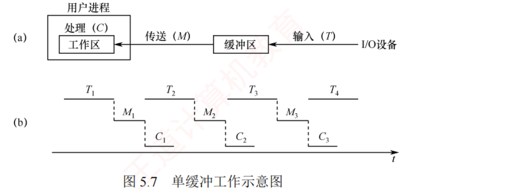
图 5.7 单缓冲工作示意图 ——(a) 结构：I/O 设备 —(输入 T)→ 缓冲区 —(传送 M)→ 工作区 —(处理 C) ；
(b) 时序：注意 T₂ 是从 M₁ 结束后才开始的 ——缓冲区被 M 占着时设备写不进去，这就是「必须互斥」的图示
知识串联 · T / M / C 三段并行，与组原流水线、ch2 甘特图是同一种画法
连到 组原 5.6 · OS 2.2 缓冲区计算题之所以「看着简单却容易错」，是因为它本质上是一道三段流水线 题。
用你已经熟悉的两个工具去看它，就不会再错：
本章缓冲区 组原 5.6 流水线 OS 2.2 调度甘特图 「段」 T（设备写入）· M（搬到工作区）· C（CPU 处理） 取指 · 译码 · 执行 · 访存 · 写回 各进程的 CPU 区间与 I/O 区间 能不能并行 取决于有几个缓冲区 取决于有没有结构/数据/控制冒险 取决于是不是同一个资源 稳态周期 Max(T,C)+M 或 Max(T,C+M) 最长一段的时间（瓶颈段） — n 个的总时间 n(T+M)+C 或 nT+M+C (k + n−1) × Δt （要加「填满流水线」的那一截）画图数格子
⚠️ 最后一行是关键：组原流水线的 (k+n−1)Δt 里那个「k−1」，和本章 n 块总时间里多出来的「+C」「+M+C」，是同一个东西 ——
都是「首尾没被并行掩盖的那一截」 。你在组原做流水线题时从不会忘记加 k−1，在本章却常常忘记加 +C 。
⟹ 治本的办法：缓冲区题一律画时序图 （图 5.7(b)、5.8(b) 就是标准画法），别硬套公式。画三块就能看出首尾。 必记 · 三个时间参数（本章计算题的通用符号，务必记牢 ）
T ＝设备 将一块数据送入缓冲区 的时间；
M ＝OS 将缓冲区 数据传送到用户工作区 的时间；
C ＝CPU 处理该块数据的时间。⚠️ 对于块设备，必须等整块数据装入缓冲区后，才能将其传送到工作区。 考点追踪 · 单缓冲的工作时间的理解与计算（2011、2013）
我的补讲 · 为什么并行的是「T 与 C」而不是「T 与 M」？——单缓冲一切结论的根
书上直接说「T 可与 CPU 处理前一块 数据的时间 C 并行」，没解释为什么不是 M →
因为 M 和 T 抢的是同一个缓冲区，而 C 用的是工作区 ：
阶段 它在动谁 与 T（设备写缓冲区）冲突吗 T ：设备 → 缓冲区 缓冲区 — M ：缓冲区 → 工作区 缓冲区（读）+ 工作区（写） 冲突！所以 M 期间设备不能写 C ：CPU 处理工作区 只有工作区 不冲突 ⟹ 可以与 T 并行
⟹ 于是单缓冲的时间轴就是：「T 和 C 叠在一起跑，跑完还得单独插一段 M」 ⟹ Max(T,C) + M 。而双缓冲多了一个缓冲区 ⟹ M 读的是缓冲区 1、设备写的是缓冲区 2，第二行的冲突消失 ⟹ M 被并进 C 那边 ⟹ Max(T, C+M) 。
⭐ 这就是「互斥性」那一小段真正的用处：它不是一句闲话，而是 Max(T,C)+M 这个公式的推导依据 。
能自己推出公式的人，考场上遇到「三缓冲」「n 缓冲」这种变体也不会慌。 必记 · 单缓冲：处理每块数据的时间 ＝ Max(T, C) + M
在单缓冲中，设备向缓冲区写数据的时间 T 可与 CPU 处理前一块 数据的时间 C 并行。 当 T > C ：设备慢。CPU 处理完当前块后必须等设备把下一块写满 ，装满后 OS 才能搬到工作区 ⟹ 每块 T + M ；当 T < C ：设备快。缓冲区一装满设备就写不动了，必须等 CPU 处理完工作区的数据 ，OS 才能搬走并释放缓冲区 ⟹ 每块 C + M 。互斥性 ：单缓冲是共享资源 ，设备与 CPU 对它的访问必须互斥 。
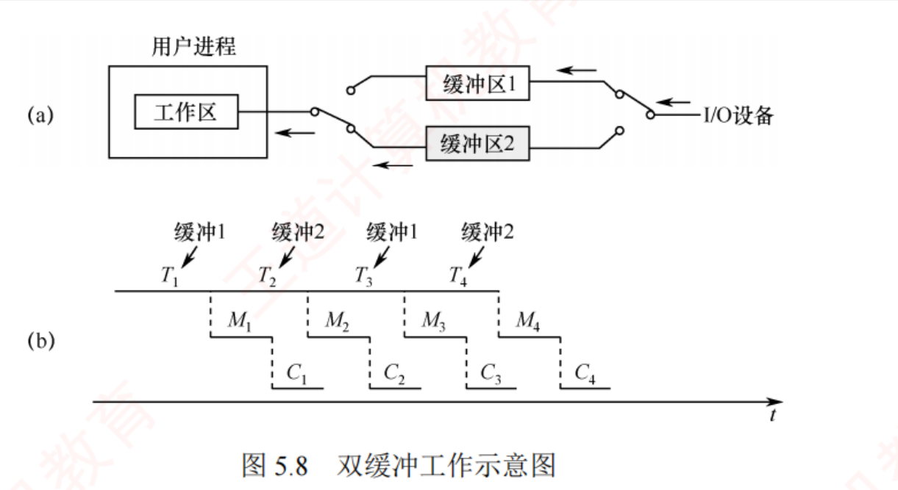
图 5.8 双缓冲工作示意图 ——(a) 结构：两个缓冲区靠开关交替接设备与工作区；
(b) 时序：T₁ T₂ T₃ T₄ 首尾相接、中间没有空档 ——这就是「设备可连续工作」的图示，与图 5.7(b) 里 T 之间有空档形成对照
我的补讲 · 「设备可连续工作」这句话怎么用——它是判断题的题眼
书上在 T > C+M 的情形下专门写了「此时设备可连续工作 」 → 潜台词是 另一种情形下设备不能 连续工作 →
所以能考「双缓冲情况下设备一定能连续工作吗」：不一定 。
情形 谁是瓶颈 设备能连续工作吗 CPU 要等吗 每块时间 T > C + M 设备（I/O 受限） 能，一刻不停 要 （等缓冲区装满）T T < C + M CPU（计算受限） 不能 （缓冲区都满了它只能停）不要 C + M
⟹ 这两行和 5.2.2 后面循环缓冲的「受计算限制 / 受 I/O 限制 」说的是同一件事，术语都能对上：
T > C+M ＝ 受 I/O 限制（缓冲区常空）；T < C+M ＝ 受计算限制（缓冲区常满） 。
⚠️ 而且注意「谁等」是反的：设备快 ⟹ 设备停下来等；CPU 快 ⟹ CPU 停下来等 ——
永远是「快的那个等慢的那个」，这条在循环缓冲那里又会考一次。 必记 · 双缓冲：处理每块数据的时间 ＝ Max(T, C + M)
在双缓冲中，设备向一个 缓冲区写入数据的时间 T 可与操作系统传送及处理 的时间 C + M 并行。 当 T > C + M ：设备可连续工作 ；缓冲区 2 的数据处理完时缓冲区 1 尚未装满，系统必须等它装满 ⟹ 每块 T ；当 T < C + M ：CPU 无须等待设备 ；缓冲区 1 很快装满，但仍需等缓冲区 2 的数据完全处理完毕 才能切换 ⟹ 每块 C + M 。考点追踪 · 双缓冲的工作时间的理解与计算（2011）
单缓冲 Max(T, C) + M
M 在括号外 ——因为传送 M 期间缓冲区被占着，设备写不进去 ，M 无法与 T 并行。并行的是 T 与 C。
双缓冲 Max(T, C + M)
M 在括号内 ——设备写的是另一个 缓冲区，M 期间设备照样能干活 ，所以 M 被并进去了。并行的是 T 与 (C + M)。
我的补讲 · 「M 在括号里还是括号外」——这是本章计算题唯一的分水岭，务必用一句话锁死
书上分四种情形讲了四段散文 → 潜台词是 四段散文最后只沉淀成两个公式，而两个公式只差一个括号 →
所以能考的方式只有一种：给 T、M、C 三个数，问单缓冲/双缓冲处理一块要多久 。
怎么保证不写反？问一句：「OS 往工作区搬数据的时候，设备能不能继续写？」
搬数据（M）时，设备能写吗 所以 M 是否与 T 并行 公式 单缓冲 不能 ——只有一个缓冲区，正被搬着不并行 ⟹ M 单独加 Max(T, C) + M 双缓冲 能 ——设备去写另一个缓冲区并行 ⟹ M 并进 C 那一侧 Max(T, C + M)
⚠️ 两个高频干扰项的来源（练习系统里我把它们全还原了）：
写成 Max(T, C, M) 的 ——以为三段全并行；写成 T + M + C 的 ——以为三段全串行。
这两个数一定会出现在选项里，而且长得很像正确答案。 陷阱 · ⚠️⚠️ n 块数据的总时间 ≠ 稳态时间 × n ——这是本章最贵的一个坑
上面两个公式算的是稳态下每块的平均时间 。但真题问的常常是「把 n 块数据全部读入并处理完，共需多长时间 」——
这时必须另算首尾，不能直接乘 n ：
n 块总时间 为什么多出这一截 单缓冲 n(T + M) + C 每块都要「装满 + 搬走」，最后一块搬完还得再处理一次（+C） 双缓冲 nT + M + C 设备全程连续读 n 块（nT），最后一块读完后还要搬 + 处理（+M+C）
⚠️ 2011 年真题的 1550 / 1100 两个答案就是靠这两个式子算出来的 ；
而那道题的错误选项 A 正是「照搬稳态公式乘 n」的结果 ——命题人非常清楚大家会怎么错。
⟹ 动笔前先问一句：题目问的是「每块平均」还是「总共」？ 问「总共」就必须画时序图数首尾。
上面两个式子成立的前提是 T > C+M（设备是瓶颈），若题设不同要照图重推，别背死 。
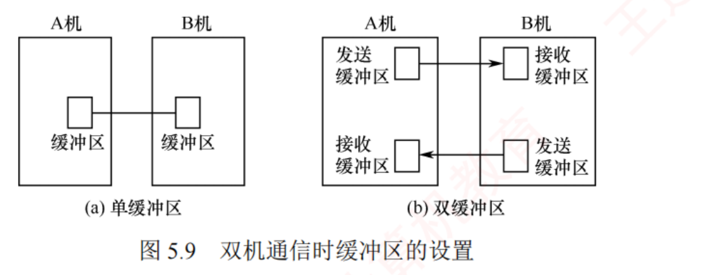
图 5.9 双机通信时缓冲区的设置 ——(a) 单缓冲区：无法同时进行发送与接收 ；(b) 双缓冲区：A 机的发送缓冲区对应 B 机的接收缓冲区 ，才能实现全双工通信
知识串联 · 图 5.9 的「全双工要两套缓冲区」直接接《计算机网络》的双工方式
连到 网络 ch2 · 组原 ch6 「一套缓冲区只能半双工，两套才能全双工」这句话在三处出现过： ① 本节 ：A 机发送缓冲区 ↔ B 机接收缓冲区，各自成对；② 计算机网络 2.1 数据通信基础 ：单工 / 半双工 / 全双工，全双工需要两条独立信道（或两对收发通道） ；③ 组原 6.1 总线 ：总线带宽公式里的「方向数」 ——全双工总线的方向数是 2，半双工是 1 （组原 ch6 的第一条分界线就在这）。⟹ 三处是同一个物理约束的三种说法：要同时双向流动，就必须有两条互不占用的通路 ——
不管这条通路是一根线、一个缓冲区，还是一个方向位。
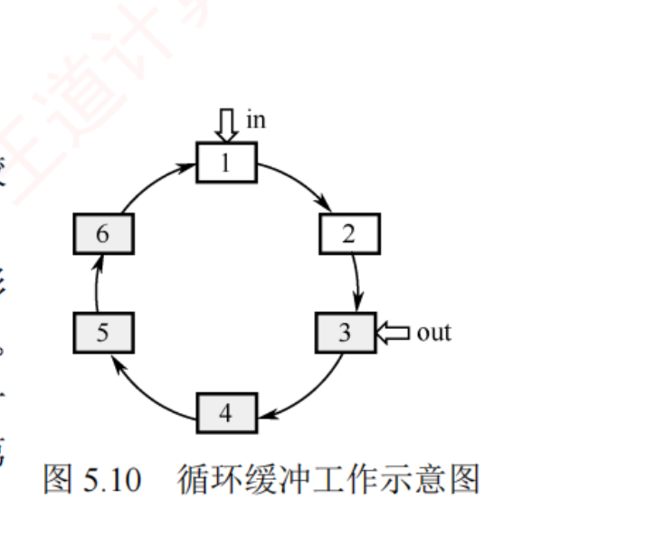
图 5.10 循环缓冲工作示意图 ——灰色＝已装满数据的缓冲区，白色＝空缓冲区 ；in 指向下一个待写入的空缓冲区，out 指向下一个待读取的满缓冲区
我的补讲 · 既然有双缓冲了，为什么还要循环缓冲？——一句话说清三者的适用场景
书上给的理由是：「在双缓冲机制中，当输入与输出速度基本匹配 时能取得较好效果；但若两者速率相差较大 ，则双缓冲难以充分发挥作用」 →
潜台词是 缓冲区个数要与「速度波动的剧烈程度」匹配 → 三者的适用场景就清楚了：
方案 适用场景 失效在什么时候 单缓冲 速度差不大、要求简单 任何时候设备和 CPU 都不能同时用它 双缓冲 两端速度基本匹配 速率相差较大时，快的一方仍然频繁空转 循环缓冲（多缓冲） 两端速度相差较大、且有突发性 缓冲区总数仍然有限，持续的单向失衡照样堵死 缓冲池 多进程共享、输入输出混合 —（它是最通用的方案）
⟹ 一条主线：从单 → 双 → 循环 → 池，每一步都在放宽「谁能用、能存多少、能不能共享」这三个约束 。
最后一步（缓冲池）的关键跨越是「多个进程共享 」，前三种都只服务一对生产者/消费者。
⚠️ 但循环缓冲救不了「持续 的速度失衡」——它只能吸收波动 。
这与 ch3 的「工作集」是同一道理：缓冲/内存只能吸收局部性带来的波动，抹不平根本性的容量不足 。 必记 · 循环缓冲的两个指针与两种同步情形（名字与阻塞对象极易配反 ）
循环缓冲由
若干大小相等的缓冲区 构成，每个缓冲区含一个
链接指针 指向下一个，
最后一个指向第一个，形成循环队列 。
系统维护两个指针：
in （下一个待写入的
空 缓冲区）与
out （下一个待读取的
满 缓冲区）。
情形 叫什么 说明什么 谁阻塞 谁唤醒它 in 追赶上 out 系统受计算限制 输入进程写得比计算进程处理得快 ，缓冲区全满输入进程阻塞 计算进程取走数据、腾出空缓冲区后唤醒 out 追赶上 in 系统受 I/O 限制 计算进程处理得比输入进程供给得快 ，缓冲区全空计算进程阻塞 输入进程写入数据、产生满缓冲区后唤醒
我的补讲 · 「受计算限制」为什么反而是输入进程被阻塞？——名字是从系统瓶颈 取的，不是从被阻塞者取的
这两个名字每年都有人配反，原因是名字描述的是「系统的瓶颈在哪」，而问题问的却是「谁被阻塞」 ，两者恰好相反。
把它掰直：瓶颈在计算 ⟹ 计算跟不上 ⟹ 缓冲区被输入方堆满 ⟹ 只能让输入方停下来等 。
名字里的词 它形容的是 被阻塞的是 一句话 受计算 限制 瓶颈＝计算进程（慢的那个） 输入进程 （快的那个）谁慢，系统就叫谁的名；谁快，谁就被罚站 受 I/O 限制 瓶颈＝输入进程（慢的那个） 计算进程 （快的那个）同上
⟹ 记法一句话：「叫谁的名，就是谁慢；谁快谁被阻塞。」 in 是写指针、out 是读指针，写的追上读的＝满（写方停），读的追上写的＝空（读方停） ——
这与数构里循环队列判空/判满的方向完全一致。 知识串联 · 循环缓冲＝数构的循环队列 ＋ ch2 的生产者-消费者
连到 数构 3.2 · OS 2.3 循环缓冲这一小节其实一个新东西都没有，它是两个旧知识的合体：
本节的说法 数据结构 ch3 的说法 OS ch2.3 的说法 in 指针 rear 队尾指针 生产者的写位置 out 指针 front 队头指针 消费者的读位置 in 追上 out ⟹ 输入进程阻塞 队满 P(empty) 失败 ⟹ 生产者阻塞 out 追上 in ⟹ 计算进程阻塞 队空 P(full) 失败 ⟹ 消费者阻塞 缓冲区互斥访问 — mutex 互斥信号量
⟹ 也就是说：循环缓冲的完整 PV 代码你在 ch2.3 已经写过了 （PV 模板手册里的「生产者-消费者（有界缓冲区）」模型）。
本节只考它的定性版本，不会让你写 PV ——但反过来，ch2 的 PV 大题里出现「缓冲池」「循环缓冲」时，用的就是本节的术语 。
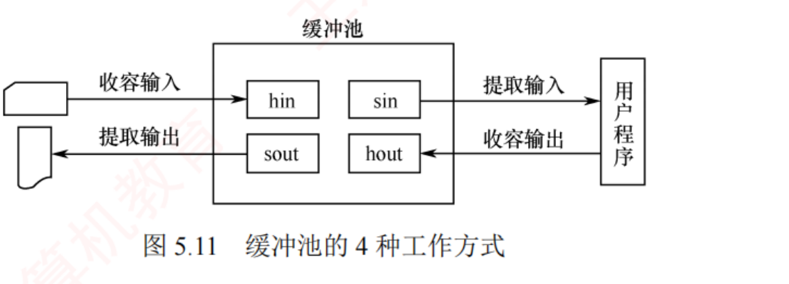
图 5.11 缓冲池的 4 种工作方式 ——中间是缓冲池（hin / sin / sout / hout 四个角色），左侧连设备、右侧连用户程序 ；四个箭头正是「收容输入 / 提取输入 / 收容输出 / 提取输出」
知识串联 · 「空闲队列 + 若干使用中队列」这套结构，四科里出现过五次
跨章枢纽 · 空闲链 + 使用链 缓冲池的三队列结构不是新东西，它是「资源池」的标准写法：
资源 空闲的那条链 使用中的那条/那些链 在哪一章 缓冲区 空缓冲队列 输入队列 · 输出队列 本节 页框 空闲页框链表 各进程的页表所指 OS 3.1 / 3.2 盘块 空闲盘块链 / 成组链接法 / 位示图 各文件的索引表所指 OS 4.3.2 PCB 空闲 PCB 队列 就绪队列 · 各种阻塞队列 OS 2.1 / 2.2 内存分区 空闲分区表 / 链 已分配分区表 OS 3.1.2
⟹ 五行的操作也完全一样：要用的时候从空闲链队首摘 ，用完了挂回空闲链队尾 ——
缓冲池的「四种工作方式」只是把这两个动作按 输入/输出 × 收容/提取 排列组合了一遍。
⭐ 为什么统一是「从队首摘、挂到队尾」而不是都在队首？因为队尾挂、队首摘＝FIFO，能保证每个缓冲区被轮流使用 ——
这和 ch3 的 FIFO 置换、5.3.3 的 FCFS 调度是同一个「防饥饿」思路。 必记 · 缓冲池的三个队列与四种工作方式（注意「从哪个队首摘、挂到哪个队尾」 ）
⚠️ 相比于单个缓冲区（仅是一块内存区域 ），缓冲池是一种包含管理数据结构和操作函数的软件机制 。
三个队列 ：①
空缓冲队列 ；②
输入队列 （装满输入数据的）；③
输出队列 （装满输出数据的）。
四种角色 ：
hin 收容输入 ·
sin 提取输入 ·
hout 收容输出 ·
sout 提取输出。
工作方式 谁发起 从哪个队首 摘 做什么 挂到哪个队尾 收容输入 （hin）输入进程 空缓冲队列 写入输入数据，装满 输入队列 提取输入 （sin）计算进程 输入队列 读取数据，读完 空缓冲队列 收容输出 （hout）计算进程 空缓冲队列 写入输出数据，装满 输出队列 提取输出 （sout）输出进程 输出队列 读取数据，读完 空缓冲队列
我的补讲 · 四种工作方式不用死背，两条规律一推就出来
书上把四条并列写，很多人背串 → 其实它们服从两条铁律：
规律 内容 推论 ① 「收容」＝往里装，一定从空队摘 hin / hout 都从空缓冲队列队首摘 ，装满后挂到各自的数据队列 队尾 凡带 h 的，起点都是空队 ② 「提取」＝往外取，一定还回空队 sin / sout 从各自的数据队列队首摘 ，读完后一律挂回空缓冲队列队尾 凡带 s 的，终点都是空队
⟹ 于是只剩一件事要记：input 那一对走「空 → 输入队 → 空」，output 那一对走「空 → 输出队 → 空」 。
空缓冲队列是所有缓冲区的「家」，四种方式都是从家里借、用完还回家。
⚠️ 另一个必考点：缓冲池是「软件机制」不是「一块更大的内存」 。
书上特意与「单个缓冲区仅是一块内存区域」对举，这种成对写出来的对比句，命题人不出题才怪 。 陷阱 · ⚠️ 原文划定的考试边界：只有单缓冲和双缓冲会考计算
原文：「对于循环缓冲和缓冲池，本节仅介绍其工作机制，不涉及时间性能的定量分析 。
而对于单缓冲和双缓冲，只要依据前述模型进行分析，即可求解任意场景下处理每块数据所需的时间。」 ⟹ 这句话价值极高：循环缓冲与缓冲池只考概念（in/out 谁阻塞、四种工作方式、三个队列），不会让你算时间 。
看到题目里出现「循环缓冲，求处理 n 块要多久」，先怀疑自己是不是看错了题 。
我的补讲 · 「磁盘高速缓存」这个名字为什么最容易骗人——三个「Cache」要分清
本章和组原里带「高速缓存」三个字的东西有三个，它们的介质、管理者、命中率概念都不同 ，
书上只用一句「⚠️ 不同于位于 CPU 与主存之间的硬件高速缓存」带过 → 这里展开：
名字 数据放在哪 缓的是谁 谁管理 在哪一章 硬件 Cache CPU 内的 SRAM 主存 的内容硬件（对 OS 透明） 组原 3.3 磁盘高速缓存 内存 磁盘 的盘块OS（对用户透明） 本节 5.2.2 虚拟盘 / RAM 盘 内存 不缓任何东西 ——它就是 盘用户程序完全控制 5.3.3 第 ⑥ 条
⚠️ 第二行和第三行长得最像（都在内存里），但一个是「副本」一个是「正本」 ：
磁盘高速缓存丢了不影响数据（磁盘上还有），虚拟盘丢了数据就真没了 。
这正是 5.3.3 那句「虚拟盘的内容完全由用户程序控制，而磁盘高速缓存的内容则由操作系统透明管理」的实质。
⟹ 再加上缓冲区，四个概念的一句话版本：
Cache 存副本吃局部性 · Buffer 存在途数据吃速度差 · 虚拟盘存正本、由用户管 · 缓冲池是管一堆 Buffer 的软件机制 。 必记 · 表 5.1 高速缓存 vs 缓冲区（用 qtab 重排，本章第 6 条分界线 ）
高速缓存（Cache） 缓冲区（Buffer） 相同点 均位于高速设备和低速设备之间 ，用于缓解二者之间的速度差异 存放的数据 已存在于慢速设备上的数据副本 ；缓存中的数据可长期驻留，直至被替换 存放正在传输过程中的数据 ；数据源自发送方，传输完成后通常立即释放 目的 提高重复访问 的效率 ：若所需数据已在缓存中，则可避免访问低速设备提高数据传输 的效率与并行性 ：协调速度差异、降低中断频率、匹配数据粒度
知识串联 · 「Cache 吃局部性、Buffer 吃速度差」——同一个空间换时间，红利不同
跨科枢纽 · 连到 组原 3.3 这是本章最值得跨科打通的一处。两者都是「拿内存换时间」，但它们赌的东西完全不同 ：
它赌什么 赌输了会怎样 命中率概念存在吗 Cache / 磁盘高速缓存 局部性原理 ——这块数据还会再被访问 数据只用一次 ⟹ 缓存白占内存，全是 miss 有 （命中率是核心指标）缓冲区 速度差 ——两端快慢不一样 两端一样快 ⟹ 缓冲区没意义，纯增开销 没有 （数据只经过一次）
⟹ 由此可以一眼判断一堆概念该归哪边：TLB / 快表 （赌同一页会再访问）＝ Cache 族；
ARP 缓存 · 页缓存 · 目录缓存 ＝ Cache 族；打印机缓冲 · 网卡收发缓冲 · SPOOLing 的井 ＝ Buffer 族。
⚠️ 而磁盘高速缓存是横跨两族的那一个 ——它名字叫缓存、位置在内存、赌的是局部性 ，
所以它属于 Cache 族；但它又常被拿来和缓冲区一起讲 （表 5.1 的存在理由）。2015 年考的就是它。 📄 p.324
5.2.3 设备分配与回收
我的补讲 · 2023 年那道「设备分配需要考虑的因素」，四个因素正好对应本节四个小节
书上列了四个因素，然后按顺序讲下去 → 潜台词是 这四个因素就是本节的目录 →
记住这张表，本节就不会读散：
因素 讲的是什么 结论落在哪 ① 设备的固有属性 独占 / 共享 / 虚拟 三类要用不同策略独占设备独占到释放 ；共享设备靠调度协调 ；虚拟设备靠 SPOOLing ② 设备分配算法 FCFS · 最高优先级优先 优先级相同时按 FCFS 排队 ③ 分配的安全性 安全分配 vs 不安全分配 安全＝无死锁但串行；不安全＝并行但可能死锁 ④ 设备的独立性 逻辑设备名 + LUT 只要有一台空闲就继续分配
⟹ 四条里只有 ③ 和 ④ 会被单独出成题 （③ 是 2023 年的落点，④ 是 2009 年的落点），
①② 通常作为选项出现。但四条都要能说出名字——问「需要考虑哪些因素」时，少写一条就少一个采分点。
⭐ 注意 ② 里那句「优先级相同时按 FCFS 原则排队 」——这与 ch2.2 的优先级调度一字不差，
说明设备分配用的就是进程调度那一套算法，只是被调度的对象从「CPU」换成了「设备」。 必记 · 设备分配的总体原则
在充分发挥设备使用效率（使设备尽可能忙碌 ）的同时，避免因分配策略不当引发进程死锁 。 考点追踪 · 设备分配需要考虑的因素（2023）
四个因素 ：设备的固有属性 · 分配算法 · 分配的安全性 · 设备的独立性 。
必记 · 四张表的分工（图 5.12/5.13 是表结构，此处 qtab 重排不裁图 ）
系统中一个通道可连接多个控制器，一个控制器又可连接多个物理设备 ——四张表要能体现这种
从属关系 ：
表 全称 几张 关键字段 SDT 系统设备表 整个系统只有一张 设备类型 · 设备标识符 · DCT 指针 · 驱动程序入口 （所有物理设备的全局索引 ） DCT 设备控制表 每个物理设备一张 设备类型 type · 设备标识符 deviceid（＝物理设备名，系统内唯一） · 设备状态（忙/闲）· 指向控制器表 COCT 的指针 · 重复执行次数或时间 （超过此值判定 I/O 失败 ）· 设备队列的队首指针 （指向因请求该设备而阻塞的 PCB 队列） COCT 控制器控制表 每个控制器一张 controllerid · 状态 · 与控制器连接的通道表指针 · 控制器队列队首/队尾指针 CHCT 通道控制表 每个通道一张 channelid · 状态 · 与通道连接的控制器表首址 · 通道队列队首/队尾指针
📌 原文框注 ：
当某进程释放设备且无其他进程等待时，系统会将 DCT 中的设备状态置为空闲，完成设备回收。 我的补讲 · 四张表怎么记不混：数一数「系统里有几个这种东西」就行
书上按 DCT → COCT → CHCT → SDT 的顺序讲 → 但这个顺序不好背，因为它是从下往上 的 →
换成「按数量记」立刻就清楚了：
系统里有几个 对应几张表 记法 1 个系统 1 张 SDT S = System = 全局唯一 n 个通道 n 张 CH CT CH = CHannel m 个控制器 m 张 CO CT CO = COntroller k 台设备 k 张 D CT D = Device
⟹ 四张表串成一条链：SDT →（找到）DCT →（指针）COCT →（指针）CHCT 。
分配时就是沿这条链往下走三步，三步全通才算分配成功 （下一块的三步分配法）。
⚠️ 最容易错的一格是 DCT 里的「重复执行次数或时间」 ——
它是「重试几次算 I/O 失败」的阈值 ，正好接上 5.2.1 讲的「暂时性错误靠重试、连续失败才算持久性错误」。
两处是同一件事：一处讲策略，一处讲这个策略的参数存在哪张表里。 知识串联 · 「设备→控制器→通道，三关全过才算成功」＝ ch2.4 的资源分配与银行家
承 OS 2.4 三步分配读起来像流程，实际上是一道标准的多资源分配 题，和 ch2.4 完全同构：
本节 ch2.4 的对应概念 为什么危险 一次请求要拿到 3 类资源（设备、控制器、通道） 多类资源的分配 （银行家算法的 Available 是个向量）拿到一部分、卡在第二部分 ⟹ 典型的「占有并等待」 某一关忙就把 PCB 挂到该关的等待队列 资源分配图里的「请求边」 多个进程各拿一半 ⟹ 环路 ⟹ 死锁 三者全部分配成功才算完成 ⟸ 这正是「一次性申请全部资源」 的思想 若严格一次性拿三关，就破坏了「请求并保持」
⟹ 于是「安全分配方式 」在这里有了具体形态：进程一次 I/O 请求只走一趟三关，走完就阻塞，期间不再要别的设备
⟹ 每个进程最多持有一组 资源 ⟹ 环路无法形成 。
⚠️ 反过来，「不安全分配方式」允许进程手里攥着打印机再去要扫描仪 ——
这就是 ch2.4 死锁例子的标准剧本 。两章的这两段可以当成同一段来背。 必记 · 独占设备的分配三步（设备 → 控制器 → 通道，缺一不可 ）
① 分配设备 ：按 I/O 请求中的物理设备名 查 SDT → 找到 DCT → 看设备状态 。
忙 ⟹ 把进程 PCB 挂入设备等待队列；空闲 ⟹ 分配 ；分配控制器 ：由 DCT 找到 COCT → 看控制器状态。忙 ⟹ PCB 挂入控制器等待队列；空闲 ⟹ 分配 ；分配通道 ：由 COCT 找到 CHCT → 看通道状态。忙 ⟹ PCB 挂入通道等待队列；空闲 ⟹ 分配 。⚠️ 只有当设备、控制器和通道均成功分配 后，此次设备分配才算完成 ，随后才能启动设备传送数据。
我的补讲 · 「用物理设备名分配」的缺陷，正是引入逻辑设备名的全部理由
书上先讲物理设备名的三步分配，再说「若指定设备已被占用则分配失败，说明该方案缺乏设备独立性 」 →
潜台词是 这两段是「问题 → 解法」的关系，不是两个并列知识点 → 所以能考「使用逻辑设备名分配时，什么时候才挂公共等待队列」：
用物理设备名 用逻辑设备名 查 SDT 时 只看那一台 指定的设备依次查该类 设备的所有 DCT 该台忙时 直接分配失败 / 挂队列 继续看下一台 什么时候挂等待队列 指定的那台一忙就挂 只有同类设备全部都忙 时，才挂该类设备的公共 等待队列 灵活性 差 只要存在一个可用设备，系统就继续往下分配
⟹ 这就是 5.1.3 说的「提高设备分配的灵活性 」的具体兑现方式。
2009 年那道「逻辑设备名和物理设备名的使用」考的就是这张表。 必记 · 设备分配的安全性：安全分配 vs 不安全分配（本章第 7 条分界线 ）
安全分配方式 不安全分配方式 做法 进程发出 I/O 请求后便立即进入阻塞态 ，直至 I/O 完成才被唤醒；在此期间不再请求任何其他资源 进程发出 I/O 请求后仍继续运行 ，需要时可发出第二个、第三个 I/O 请求；仅当所请求的设备已被占用时才进入阻塞态 效果 有效避免死锁 可能因循环等待而造成死锁 优点 安全性高 单个进程可同时使用多个设备，进程推进迅速 缺点 CPU 与 I/O 设备串行工作，系统效率较低 可能死锁
分配算法 ：①
FCFS （按请求先后排队，优先分配给队首）；②
最高优先级优先 （
优先级相同时按 FCFS 排队 ）。
知识串联 · 安全分配 ≡ ch2.4「破坏请求并保持」，一字不差
承 OS 2.4 把安全分配的定义和 ch2.4 的死锁预防策略并排放，你会发现它就是同一条策略换了个名字：
ch2.4 的死锁预防 做法 本节对应 共同的代价 破坏「请求并保持」 要么一次性申请全部资源，要么申请新资源时先释放已占有的 安全分配方式 （发出请求就阻塞，期间不再要别的）资源利用率低、进程推进慢 破坏「互斥」 SPOOLing （把独占设备变成共享）5.2.4 SPOOLing ⭐ 占磁盘空间 破坏「循环等待」 资源有序分配（编号递增申请） 本节未提，但设备分配同样适用 编号难定、不便扩展 避免死锁 银行家算法 设备是典型的不可剥夺资源 ，可套银行家 开销大
⟹ 本章的 SPOOLing 在 ch2.4 里是以「破坏互斥条件的典型例子」身份出现的 ——两章讲的是同一件事：
把打印机做成虚拟设备，「互斥」这条必要条件就不成立了，死锁自然消失。
⚠️ 但要记住 ch2.4 的那句限定：互斥条件由设备的固有属性决定，通常不能 被破坏 ——
SPOOLing 是少数能破的例子，不是通用手段 。这两句连着考过。 必记 · LUT 逻辑设备表的两种设置方式（图 5.14，表结构，qtab 重排 ）
LUT 每个表项含三项内容：逻辑设备名、物理设备名和驱动程序入口地址 。
(a) 整个系统仅设置一张 LUT (b) 为每个用户设置一张 LUT 表的列 逻辑设备名 · 物理设备名 · 驱动程序入口地址 逻辑设备名 · 系统设备指针 （系统仍维护全局 SDT ）约束 所有用户不能使用相同的逻辑设备名 不同用户可以使用相同的逻辑设备名，互不干扰 适用 单用户系统 多用户系统
考点追踪 · 逻辑设备名和物理设备名的使用（2009） 知识串联 · 「一张全局表 vs 每用户一张表」这个选择，四科里出现过四次
跨章枢纽 · 同一个设计抉择 「共用一张表会撞名，每人一张表就不撞」——这个抉择你已经见过三次了：
场景 全局一张 每主体一张 撞的是什么 本节 LUT 单用户系统 多用户系统 逻辑设备名 ch4.2.7 打开文件表 系统打开文件表 （记录 inode、打开计数）进程打开文件表 （记录 fd、读写指针）读写指针 （每个进程各读各的）ch3.1 页表 — 每进程一张页表 虚拟地址 （两个进程的 0x1000 不是同一处）ch4.2.3 目录 单级目录 两级目录（每用户一个 UFD） 文件名
⟹ 四行的答案完全一样：只要一个名字要在多个主体间保持私有，就必须每个主体一张表 。
ch4 的两级目录「解决了不同用户文件的重名问题」，本节的每用户 LUT 解决的是逻辑设备名重名——一模一样的句式。 📄 p.326
5.2.4 SPOOLing 技术（假脱机技术） ⭐ 组原完全没有
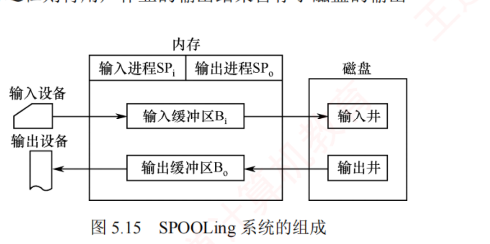
图 5.15 SPOOLing 系统的组成 ——内存里 ：输入进程 SPᵢ / 输出进程 SPₒ、输入缓冲区 Bᵢ / 输出缓冲区 Bₒ；磁盘上 ：输入井 / 输出井；两侧是输入设备 / 输出设备。
⚠️ 看清楚：「井」在磁盘上，「缓冲区」在内存里——这两个词考试最爱对调。
我的补讲 · 「假 · 脱 · 机」三个字逐字拆开，本质句就不用背了
SPOOLing 的中文名「假脱机技术」是一个极其精准的翻译，三个字各对应一件事 ：
字 对应什么 原文依据 脱 （脱离主机）早期专用外围控制机 在主机不参与的情况下完成 I/O 「由于整个 I/O 过程脱离主机控制，因此称为脱机」 机 （外围控制机）那台真实存在的硬件外围机 「输入时外围机将纸带机上的数据预先读入高速磁盘」 假 （没有真的外围机）用「多道程序（输入/输出进程）＋ 磁盘空间」替代外围机 「『假』则体现在以多道程序和磁盘空间替代外围机」
⟹ 所以 SPOOLing ＝ 「用软件假装有一台外围机」 。这一句就是本质句的全部内容 ，
「以磁盘为缓冲、用软件模拟脱机 I/O」不过是它的书面表达。
⭐ 顺带解决一个常见困惑：SPOOLing 到底是不是「脱机」？ ——
它是「假 脱机」：I/O 全程仍在主机控制下 （由输入/输出进程完成），只是对用户作业而言像是脱机的 。
「SPOOLing 使 I/O 脱离了 CPU 的控制」是一个错误选项。 必记 · SPOOLing 的本质句（「假」和「脱机」分别指什么，逐字背 ）
这种以磁盘为缓冲、用软件模拟脱机 I/O 的机制 ，正是 SPOOLing 技术的本质。
「脱机」承袭自早期脱机 I/O 的思想，「假」则体现在以多道程序和磁盘空间替代外围机 ，
进而将一台物理独占设备虚拟为多台逻辑设备 ，实现设备共享。 📎 由来：早期脱机 I/O 依赖专用外围控制机 ，在主机不参与的情况下完成 I/O——由于整个 I/O 过程脱离主机控制，因此称为脱机 。
多道程序出现后，OS 用输入进程与输出进程 在主机直接控制下模拟外围机的功能。
必记 · SPOOLing 系统的四个组成部分
① 输入井和输出井 ——在磁盘上开辟的两个专用存储区域 。输入井模拟脱机输入的磁盘，输出井模拟脱机输出的磁盘。
每个进程的输入（或输出）数据以文件形式保存（称为井文件 ），所有文件按顺序链接成输入队列或输出队列。 ② 输入缓冲区和输出缓冲区 ——在内存中开辟的两个缓冲区 ，作为设备与井之间的中转。③ 输入进程和输出进程 ——模拟脱机 I/O 的外围控制机 。CPU 需要输入数据时，直接从输入井读取。 ④ 井管理程序 ——控制作业与磁盘井之间的信息交换。
我的补讲 · 「井」和「缓冲区」是两级中转，画成一条链就不会混
书上把四个组成部分并列写 → 潜台词是 它们其实构成一条四段流水线 → 所以能考「数据依次经过哪些地方」：
方向 数据的完整路径 输入 输入设备 →（输入进程 SPᵢ）→ 内存输入缓冲区 Bᵢ → 磁盘输入井 →（CPU 需要时直接读）→ 用户进程 输出 用户进程 → 磁盘输出井 →（设备空闲时，输出进程 SPₒ）→ 内存输出缓冲区 Bₒ → 输出设备
⚠️ 两条路径不是对称的 ：输入方向上 CPU 是「从井直接读」，输出方向上用户进程是「往井直接写」 ——
内存缓冲区只在「和慢设备打交道」的那一段出现 ，因为它要缓的就是设备与磁盘之间的速度差。
⟹ 一句话记：井是「仓库」（在磁盘，可久放），缓冲区是「装卸台」（在内存，即到即走） 。
这正好又是表 5.1 那条「副本 vs 在途数据」的分界线在本节的又一次应用。 我的补讲 · 「两项操作」的顺序不能颠倒，而「用户请求打印表」才是真正的排队凭证
书上给的两项操作是 ① 在输出井分盘块、写数据 ② 申请一张用户请求打印表并挂到假脱机打印队列 →
潜台词是 数据先落盘，凭证后入队 → 所以能考「若顺序颠倒会怎样」：打印进程可能取到一张指向还没写完的井文件的请求表 。
东西 在哪 装什么 类比 输出井里的盘块 磁盘 待打印的数据本体（井文件） 寄存处的包裹 用户请求打印表 内存 用户的打印要求 （打印哪个井文件、几份等）取件码 假脱机打印队列 内存 所有请求表串成的队列 排号机
⟹ 于是打印进程的动作就是标准的消费者：队列非空 ⟹ 取队首请求表 ⟹ 按表里的信息去输出井读数据 ⟹ 送打印机 ⟹ 处理下一个；队列为空 ⟹ 阻塞等待 。
⚠️ 由此还能答一个细节题：「用户进程写完数据就返回了，那它写的是磁盘还是打印机？」——磁盘 。
用户进程从头到尾没碰过打印机，这就是「实际上并未将物理设备分配给任何进程」的字面含义。 必记 · 共享打印机的例子（经典考点，两项操作 + 三个「并未」）
多个用户进程发出打印请求时，SPOOLing 系统接受其请求，但并不真正立即将物理打印机分配给它们 ，而是由输出进程 为每个进程完成两项操作：在磁盘输出井中为其分配一个空闲盘块，并将待打印数据写入其中 ；申请一张用户请求打印表 ，记录用户的打印要求，并将该表挂到假脱机打印队列 上 。用户进程即认为打印任务已完成，可继续执行后续代码 ——实际上，真实打印尚未开始，但该过程对用户完全透明。 假脱机打印进程 负责：打印机空闲时检查队列 → 取队首请求表 → 从输出井读入内存缓冲区 → 送物理打印机；
若队列为空，则该进程进入等待状态 ，直至有新请求将其唤醒。
必记 · SPOOLing 系统的三个特点（2016 真题直接考 ）
① 提高了 I/O 速度 ——把对低速 I/O 设备的操作转化为对磁盘输出井中数据的存取 ，有效缓和 CPU 与低速设备的速度矛盾；将独占设备改造为共享设备 ——在假脱机打印机系统中，实际上并未将物理设备分配给任何进程 ；实现了虚拟设备功能 ——每个进程都认为自己独占了一台设备 。SPOOLing 是一种以空间换时间 的技术 ：开辟磁盘空间作为输入井和输出井，牺牲了存储空间，但显著节省了时间 。考点追踪 · SPOOLing 技术的特点（2016）
我的补讲 · SPOOLing 的三个「并未」——把它们背成三道判断题
书上在三处分别写了三句带「并未 / 尚未 / 实际上」的话 → 潜台词是 SPOOLing 的一切好处都是「装出来的」 →
所以能考的全是「它到底做了没做」：
# 「并未」 那它做了什么 判断题长这样 1 并未真正把物理设备分配给任何进程 只在输出井里分了几个盘块 「SPOOLing 把打印机分配给了每个请求进程」✗ 2 并未真正开始打印 （用户进程却已认为完成）把数据写进井、把请求表挂进队列 「用户进程返回时数据已打印完毕」✗ 3 并未把独占设备物理地变成共享设备 只是逻辑上 虚拟成多台 「SPOOLing 使打印机成为共享设备」——要看题干说的是逻辑还是物理
⚠️ 第 3 条最微妙：书上自己就写「将独占设备改造为共享设备」，同一段又写「实际上并未将物理设备分配给任何进程」 。
这不是矛盾，是分层 ——在用户看到的逻辑层面 它确实成了共享设备，在物理层面 它始终独占 。
做题时看选项里有没有「物理/逻辑」「实际/看起来」这类限定词，有限定词就按限定词判。 知识串联 · SPOOLing 一处接四章，是本章最密的枢纽
跨章枢纽 · SPOOLing 的四条接口
接到哪 接口在哪句话上 为什么要连起来读 5.1.3 I/O 软件层次 SPOOLing 属于用户层 软件 本章最高频陷阱 ，图 5.5 右侧原文ch2.4 死锁 SPOOLing 是破坏「互斥条件」的典型例子 ch2.4 明说互斥通常不能破，SPOOLing 是那个例外 ch4 文件系统 「每个进程的数据以文件形式保存，称为井文件」 井就是磁盘上的文件 ⟹ 它要占目录项、要走文件分配ch2.3 进程通信 输入进程 / 输出进程 / 假脱机打印进程 三个进程 + 一个队列 ＝ 标准的生产者-消费者 ，队列空则打印进程阻塞 「空间换时间」枢纽 牺牲存储空间，节省时间 与 TLB / 快表 / Cache / ARP 缓存 同族
⟹ 第四行值得多看一眼：「若队列为空，则该进程进入等待状态，直至有新的打印请求将其唤醒」 ——
这句话就是 P(full) 失败的自然语言版 。你在 ch2.3 写过的那份「生产者-消费者」PV 代码，
把 buffer 换成「假脱机打印队列」、生产者换成「用户进程」、消费者换成「打印进程」，一行都不用改 。 📄 p.327
5.2.5 设备驱动程序接口
我的补讲 · 5.1.3 的「五步流程」与本节的「四条功能」是同一套东西，别背两遍
王道在 5.1.3 和 5.2.5 各讲了一次驱动程序，一次按「怎么走」（五步），一次按「能干什么」（四条） →
对齐之后只需要记一套：
5.2.5 的四条功能 5.1.3 的五步流程 合并后的关键词 ① 抽象请求 → 具体指令 （逻辑盘块号 → 盘面/磁道/扇区）第 ① 步 （逻辑扇区号 → 柱面/盘面/扇区）翻译 ② 检查合法性、查状态、传参数、设方式 第 ②③④ 步 校验 + 查状态 + 传参 ③ 发出 I/O 命令 ：空闲则启动；忙则把 PCB 挂到设备等待队列 第 ⑤ 步 （启动设备、阻塞当前进程 ）启动 / 排队 ④ 响应中断，调用中断处理程序 第 ⑤ 步末（「由中断处理程序将其唤醒」） 善后
⚠️ 两处有一个细微差别值得注意：5.1.3 说「当前进程随即被阻塞 」，5.2.5 说「把请求进程的 PCB 挂到该设备的等待队列 」 ——
这是同一个动作的两种说法 （阻塞态的进程就在某个设备的等待队列里），不是两个不同的动作 。
ch2.1 讲进程状态时说过：「阻塞队列按阻塞原因分成若干个」，本章的「设备等待队列」正是其中一种。 必记 · 驱动程序应具备的功能（四条，2013、2019、2023 三年考过 ）
① 接收上层命令与参数，将抽象的 I/O 请求转换为与具体设备相关的操作指令 （例：将逻辑盘块号转换为磁盘的盘面号、磁道号和扇区号 ）；检查请求合法性 ，查询设备状态，传递参数，设置工作方式；发出 I/O 命令 ：设备空闲则立即启动；设备正忙则将请求进程的 PCB 挂到该设备的等待队列上以待调度 ；及时响应设备控制器发出的中断请求 ，并根据中断类型调用相应的中断处理程序进行处理。考点追踪 · 设备驱动程序的功能（2013、2019、2023）
必记 · 驱动程序的五个特点（2022 真题原型，逐条都可能变判断题 ）
① 在抽象 I/O 请求与具体设备操作之间实现双向 转换 ，并把设备状态与完成情况反馈给请求进程；其实现与设备所采用的 I/O 控制方式（如中断驱动、DMA）紧密相关 ；不同类型的设备必须配备相应的专用驱动程序 ；部分底层驱动功能可能由设备固件或系统 ROM 提供 ；驱动程序应设计为可重入 的 ，以支持多个进程对同一设备的并发调用。
我的补讲 · 五个特点里，②④⑤ 三条是 2022 年真题的直接落点
书上把五条并排写 → 潜台词是 其中三条违反直觉，正好可以拿来出「下列说法错误 的是」 ：
特点 反直觉在哪 能造出的错误选项 ② 与 I/O 控制方式紧密相关 驱动号称「屏蔽硬件差异」，却自己被控制方式绑死 「驱动程序与 I/O 控制方式无关」✗ ④ 部分功能可能由固件或 ROM 提供 以为驱动一定是可加载的软件 「驱动程序必须全部由 OS 以软件形式提供」✗ ⑤ 应设计为可重入的 以为设备独占就不必考虑重入 「驱动程序无须可重入，因为设备是互斥使用的」✗
为什么必须可重入？因为同一台设备可能被多个进程先后调用，而前一次调用可能还阻塞在半路 ——
若驱动用了全局变量保存状态，第二个进程一进来就把第一个的状态冲掉了 。
⟹ 「可重入」这个词你在 ch2.2 讲可重入代码（纯代码） 时见过，在 ch3 讲共享页面必须是可重入代码 时又见过——
三处的定义完全相同：不修改自身、不用全局可变状态、任何时刻被打断再进来都正确。 背景 · 为使各类驱动具有统一接口，OS 的三项要求（读一遍即可）
① 所有驱动程序与内核之间遵循相同或相近的接口规范 ，便于新增和维护；
② 通过设备管理模块将逻辑设备名映射为物理设备名 ，并定位到对应的驱动程序入口；
③ 对设备访问实施权限控制，防止未授权用户非法使用设备 。
📄 p.328
5.2.6 I/O 操作举例（scanf 的一生） ⭐ 原文开场白：「由于统考对 I/O 的考查日益深入 」
知识串联 · 「两个地址空间相互隔离」＝ ch3 的地址空间 ＋ ch1 的双态，合起来才完整
承 OS 1.2 · 3.1 这句话看着简单，实际上同时用到了三章的结论：
结论 出处 在本节起什么作用 内核空间存放 OS 代码和数据，供所有进程共享 ch3.1 地址空间划分 （每个进程的高地址段映射同一份内核）解释了为什么内核缓冲区能被不同进程复用（＝磁盘高速缓存） 用户程序不能直接访问内核空间 ch1.2 用户态/内核态 + ch3 页表保护位 解释了为什么必须多做一次拷贝 系统调用在内核态执行 ch1.3 解释了「为什么数据先落内核缓冲区 」
⟹ 三条合起来回答了本节唯一的问题：既然最终要给用户，为什么不让设备直接写进用户缓冲区？
因为用户缓冲区的地址是用户给的、可能非法、可能被换出，而内核缓冲区永远在、永远可信。 （5.4 疑难点二把三条理由列全了。）
⭐ 反向的例子也要知道：ch3.2 的内存映射文件 （2025 真题）正是绕开这次拷贝的办法 ——
把内核里的页缓存直接映射进用户地址空间，两个「空间」在物理上变成同一片内存，拷贝次数归零。 必记 · 先分清两个缓冲区：内核缓冲区 vs 用户缓冲区
内核缓冲区 位于内核空间 ，用户缓冲区 位于用户空间 ，两个地址空间相互隔离 。由于系统调用在内核态执行，因此必须先将 I/O 设备的数据复制到内核缓冲区，在系统调用返回前，再将数据从内核缓冲区复制到用户缓冲区。
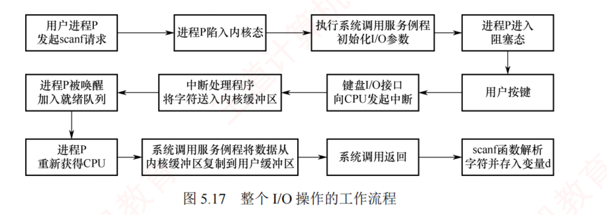
图 5.17 整个 I/O 操作的工作流程（中断驱动方式下的七步） ——
注意第二行末与第三行首是两个独立的方框：「进程 P 被唤醒加入就绪队列」和「进程 P 重新获得 CPU」 ，
这正是 5.1.2 里那道「唤醒后进的是就绪队列不是运行态」的图示
必记 · scanf("%c", &d) 的完整过程（两阶段 + 七步）
第一阶段（在 C 标准库中完成） ：用户缓冲区 buf ：若其中已有数据则直接读取；若为空则触发系统调用 read ；陷阱指令 前传入三个参数：fd （文件描述符）· buf （用户空间缓冲区）· count （期望读取的最大字节数）。第二阶段（系统调用，在内核中完成，图 5.17 七步） ：发起 I/O 的进程 P 进入阻塞态 ，CPU 调度其他进程运行；键盘 I/O 接口的数据端口 ；向 CPU 发出中断请求 ；读取字符并将其从 I/O 端口送入内核缓冲区 ；进程 P 被唤醒，并加入就绪队列，等待调度 ；进程 P 再次获得 CPU 后 ，系统调用服务例程将字符从内核缓冲区复制到用户缓冲区 ；最终存入变量 d 。
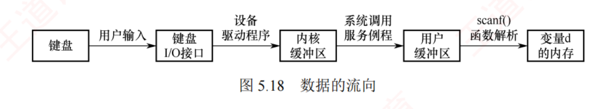
图 5.18 数据的流向 ——键盘 →(用户输入) 键盘 I/O 接口 →(设备驱动程序) 内核缓冲区 →(系统调用服务例程) 用户缓冲区 →(scanf() 函数解析) 变量 d 的内存 ⚠️ 箭头上的四个标注就是四个「责任人」，这张图的全部考点都在箭头上，不在方框里。
我的补讲 · 图 5.18 的两段搬运，责任人不同——这是明摆着的考点，原文专门写了一句
原文：「前者由设备驱动程序完成（因其需直接操作 I/O 端口），后者由设备无关的 I/O 软件层完成（因其不依赖具体硬件） 」 →
潜台词是 命题人只要把这两个责任人对调，就是一道现成的选择题 ：
搬运段 责任人 为什么是它 I/O 端口 → 内核缓冲区 设备驱动程序 需要直接操作 I/O 端口 （只有驱动知道端口地址与格式）内核缓冲区 → 用户缓冲区 设备无关的 I/O 软件层 不依赖具体硬件 ，纯粹是一次内存拷贝 + 地址空间跨越用户缓冲区 → 变量 d C 标准库的 scanf()（用户层） 把字符流解析成 %c/%d，内核根本不认识格式串
⟹ 这三行合起来正好复述了 5.1.3 那张四层表：用户层做格式化、设备无关层做跨空间拷贝、驱动做端口操作 。
如果只背得下一张表，就背这三行——它是四层结构最具体的一个实例。 我的补讲 · 第一阶段那句「若缓冲区已有数据则直接读取」，解释了一个日常现象
书上写「检查用户缓冲区 buf，若其中已有数据则直接读取」 → 潜台词是 并不是每次 scanf 都会陷入内核 →
所以能考「连续三次 scanf("%c") 会触发几次系统调用」：可能只有一次 （你一次敲了三个字符，都在库缓冲里）。 这也是 C 语言里「为什么 scanf 有时读到的是上一次残留的换行符 」的原因——
残留在用户缓冲区里的字符根本没走内核，OS 一无所知。 ⟹ 由此得到一条通用结论：库函数缓冲（用户层）与内核缓冲是两级独立的缓冲 ，
一次 I/O 最多可能经过三级 ：库缓冲 → 内核缓冲 → 设备控制器的数据寄存器。
题目问「数据经过了几次拷贝」时，别漏掉最外面那一级。
必记 · 5.2.7 本节小结——开篇两问的答案
1) 处理机和外部设备速度差距较大时怎么办？ 缓冲技术 ：在主存中设立一片缓冲区，外设与 CPU 的输入/输出都经过该缓冲区，从而减少相互等待 ，提高系统效率。2) 什么是设备的独立性？有什么好处？ 逻辑设备名 进行 I/O 操作，无须指定具体物理设备；OS 运行时动态映射 到实际可用的物理设备。三个优点 ：① 简化编程，屏蔽底层硬件细节 ；② 提高程序可移植性 ；③ 支持 I/O 重定向与设备动态绑定，提升系统灵活性和资源利用率 。
我的补讲 · 5.2 读完自测七问
# 问题 回哪一节 1 单缓冲和双缓冲的公式分别是什么？M 在哪里？ 5.2.2 ⭐⭐ 2 读入并处理 n 块数据，两种缓冲各要多久？ 5.2.2 ⭐⭐ 3 in 追上 out 时，谁被阻塞？这叫受什么限制？ 5.2.2 4 高速缓存和缓冲区，各自「赌」的是什么？ 5.2.2 5 四张表各有几张？分配要过几关？ 5.2.3 6 SPOOLing 的三个「并未」是什么？它在哪一层？ 5.2.4 ⭐ 7 「I/O 端口→内核缓冲区」和「内核缓冲区→用户缓冲区」分别归谁？ 5.2.6 ⭐
⚠️ 第 1、2 两问是本节唯二会算错的地方，其余五问全是记忆题。
如果时间只够练一样，练第 2 问 ——它是 2011 年真题 1550/1100 的原型，也是最容易「套错公式还自以为对」的地方。 📄 p.340
5.3 磁盘和固态硬盘 ⭐⭐ 19 页 · 48 题 · 12 真题 · 3 道综合真题（2010/2019/2021）≈ 45 分，按分值算是全章绝对重心
我的补讲 · 两个学习目标＝两类题型，动笔前先分清题干问的是哪一类
王道罕见地把「学习时应重点掌握」写得如此具体（算时间、算磁道数 ） → 潜台词是 本节的题只有这两类，没有第三类 →
两类题的解法完全不同，混了就全错：
甲类：算一次磁盘操作的时间 乙类：算磁头移动的总磁道数 题干特征 给转速 r、每道字节数 N、要读的字节数 b、寻道时间 给磁道请求序列 + 磁头初始位置 + 方向 用什么 Ta = Ts + 1/(2r) + b/(rN) 六种调度算法之一 单位陷阱 r 是「每秒转数」还是「每分转数」（5400 转/分 = 90 转/秒） — 最易错处 旋转延迟要不要 ÷2 （问「平均」才除，问「最坏」不除）C-SCAN 的返程算不算 常见变体 读整条磁道 （旋转延迟按一整圈算）· 交替编号下读 n 个扇区 把磁道数再乘上寻道时间 换成毫秒
⟹ 三道综合真题（2010 / 2019 / 2021）全部是甲乙两类的组合题 ：先用乙算出磁道数，再用甲换成毫秒。
所以两类都要熟，只会一类等于零。
⚠️ 「平均旋转延迟忘了 ÷2」是本节最高频的计算失误（练习系统里那个干扰项 18.05 就是这么造出来的）。
记法：题干只要出现「平均」两个字，1/(2r) 里的那个 2 就一定要在。 必记 · 王道给本节定的两个学习目标（原话，直接当验收标准用）
学习时应重点掌握：① 计算一次磁盘操作的时间 ；② 对给定的磁道访问序列，按特定调度算法求出磁头移动的总磁道数和平均寻道长度 。 📎 页脚注①原话：「本节内容与《计算机组成原理考研复习指导》一书中的 3.4 节联系密切，建议结合复习。」 本节开头两个设问 ：① 磁盘一次读/写操作包含哪几部分时间？其中哪部分最长？
② 存储文件时，若一个磁道容纳不下，剩余数据应存放在同一盘面的不同磁道，还是同一柱面的不同盘面？ （答案在 5.3.5）
我的补讲 · 本节 10 处「考点追踪」命中 10 个年份——全章最多，且没有一年重复
把它们按小节排开，你会发现本节几乎每一小节都被考过 ，没有可以跳过的段落：
小节 考点追踪 年份 5.3.1 磁盘 磁盘容量的计算 2019 将簇号转化为磁盘物理地址的过程 2019 5.3.2 磁盘的管理 物理格式化的内容 2017、2021 逻辑格式化的内容 2017、2021 5.3.3 磁盘调度算法 ⭐⭐ 各种磁盘调度算法的比较 2010、2018 SSTF 算法的应用 2019、2021 SCAN 算法的应用 2009、2010、2015 C-SCAN 算法的应用 2024 改善磁盘 I/O 性能的方法 2012、2018 5.3.4 固态硬盘 机械磁盘与固态硬盘的对比 2025
⟹ 2009 / 2010 / 2012 / 2015 / 2017 / 2018 / 2019 / 2021 / 2024 / 2025 十年全命中 。
而且注意：2017 与 2021 那一对（物理 vs 逻辑格式化）在同一年被拆成两个考点追踪 ——
这说明命题人是把「三件事分别干什么」当成三个独立采分点来出的，只记住「格式化」这个词等于没记 。 5.3.1 磁盘
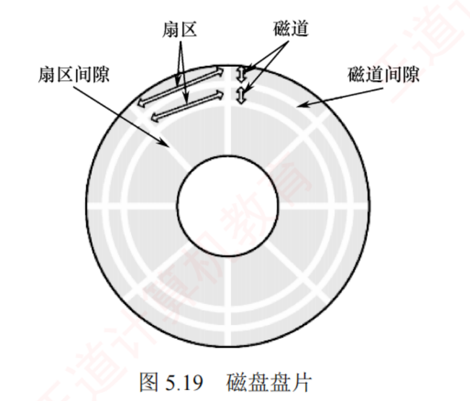
图 5.19 磁盘盘片 ——扇区 · 磁道 · 扇区间隙 · 磁道间隙 四个名词一图看全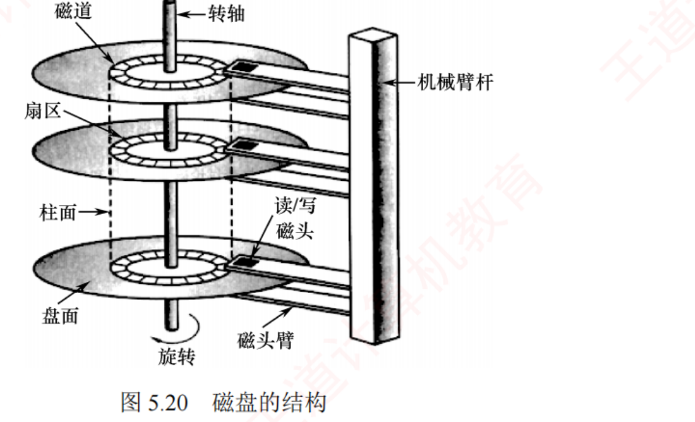
图 5.20 磁盘的结构 ——所有磁头装在同一磁头臂上同步径向移动 ，虚线圈出的就是柱面
我的补讲 · 磁盘容量公式的四种问法，一张表答完
书上只给了一句「总存储容量由柱面数、盘面数和每磁道扇区数共同决定 」，没写成公式 →
但 2019 年考的就是它 → 把四种常见问法一次列全：
问什么 怎么算 易错点 磁盘总容量 柱面数 × 盘面数 × 每道扇区数 × 扇区大小 「盘片数」×2 才是「盘面数」 （除非题干说最外两面不用）一个柱面的容量 盘面数 × 每道扇区数 × 扇区大小 柱面 ＝ 所有盘面上同半径 的磁道之和 磁道数 ＝ 柱面数 一个盘面上的磁道数 ＝ 柱面数 ，两个词说的是一件事寻址所需位数 ⌈log₂柱面数⌉ + ⌈log₂盘面数⌉ + ⌈log₂每道扇区数⌉ 三段各自向上取整再相加 ，不是对总数取一次对数
⚠️ 最后一行是组原风格的题，本章也可能考：「柱面号·盘面号·扇区号」这个三元组地址是分段编码 的 ，
所以每一段都要单独向上取整。把它当成一个整数去算 log₂ 会少算 1～2 位。
⟹ 与前面「线性块号 ↔ 三元组」的换算配合使用：换算用除法和取模，位数用对数 ，两套工具别混。 必记 · 磁盘的物理结构与地址表示
磁道 ＝盘面上的一组同心圆，每个磁道宽度与磁头相当，一个盘面包含上千个磁道 ；扇区 ＝磁道划分出的数百个小段，每个扇区大小固定（如 1KB），是磁盘寻址的最小物理单位 ；柱面 ＝所有盘片上半径相同的磁道 ；每个盘面对应一个磁头，所有磁头安装在同一磁头臂上，同步径向移动 。磁盘地址用「柱面号 · 盘面号 · 扇区号」表示，总存储容量由柱面数、盘面数和每磁道扇区数 共同决定。 读/写一个数据块的三步 ：① 按柱面号 移动磁头臂定位柱面；② 激活对应盘面的磁头 ；③ 等待目标扇区旋转到磁头下方 。考点追踪 · 磁盘容量的计算（2019） · 将簇号转化为磁盘物理地址的过程（2019）
我的补讲 · 「柱面号 · 盘面号 · 扇区号」这个顺序不是随便排的，它决定了所有地址换算题的除法顺序
书上只说地址「用柱面号·盘面号·扇区号表示」，没解释为什么是这个顺序 →
潜台词是 这个顺序＝访问代价从大到小的顺序 → 所以能考「盘块号 → 三元组」的换算：
顺序 换它要付出什么 所以放在哪一位 柱面号 移动磁头臂 ⟹ 寻道时间（最贵，毫秒级） 最高位 ——换得最少 盘面号 切换磁头 ⟹ 电子切换，几乎不要钱 中间位 扇区号 等盘片转过来 ⟹ 旋转延迟 最低位 ——换得最勤
⟹ 由此得到换算题的标准做法（2019 那道「簇号转物理地址」就是这么做的）：
设每磁道 S 个扇区、每柱面 H 个盘面，则由线性块号 b：扇区号 = b mod S ；盘面号 = (b ÷ S) mod H ；柱面号 = b ÷ (S × H) 。
⚠️ 顺序反了就全错。记法：「先填满一个磁道，再换盘面；填满一个柱面，才换柱面」 ——
这正是 5.3.5 小结第 2 问的答案（同一柱面的不同盘面优先），两处是同一件事的两种问法。 知识串联 · 「先换盘面再换柱面」＝ ch4 文件物理结构的性能底座
连到 OS 4.2.6 · 组原 3.4 ch4 讲文件分配时反复出现「访盘次数」，但没讲一次访盘要多久；本节补上了这一半：
ch4 的说法 本节给出的代价 合起来的结论 连续分配 ：文件占连续盘块连续盘块 ⟹ 大多在同一柱面 ⟹ 无寻道 连续分配读整个文件最快 ，快在省了寻道链接分配 ：块与块靠指针串盘块散落 ⟹ 每读一块可能寻道一次 不支持随机访问，且每步都贵 索引分配 ：先读索引块再读数据块索引块与数据块通常不在同一柱面 「m 级索引 = m+1 次访盘」每一次都是完整的三段式时间 5.3.3「优化物理块的分布」 把链接/索引文件的块尽量安排在同一磁道或相邻磁道 ；用簇为单位分配 ⬅ 本节明写的补救手段，正是给 ch4 的链接/索引擦屁股
⟹ 所以 ch4 的「访盘次数」乘上本节的「一次存取时间 T_a」才是真时间 。
综合题若问「读一个文件共需多少毫秒」，一定是这两章的公式接力，缺一不可。 陷阱 · ZBR（区域记录）——传统「每磁道扇区数相同」的例外，明摆着的判断题
传统设计：每个磁道扇区数相同 ⟹ 外道周长更大 ⟹ 外道线性存储密度低于内道 ⟹
磁盘的存储能力受限于最内道的最大存储密度 。 【注意】框注原文：为提高容量并充分利用外层磁道，现代磁盘采用区域记录（ZBR） 技术：将盘面划分为若干环带，
同一环带内的所有磁道具有相同的扇区数，外层环带的磁道扇区数多于 内层环带 。 ⟹ 两句话放在一起才完整：「每磁道扇区数相同」是传统盘的假设，也是所有容量计算题的默认前提 ；
但「所有磁道扇区数都相同」这句作为判断题是错 的 （因为有 ZBR）。做计算题按前者，做判断题按后者。
背景 · 磁盘按结构的四种分类 + 温彻斯特磁盘（2025 年真的考了这个名字 ）
固定头磁盘 ：为每个磁道配备一个磁头，磁头位置固定 ；活动头磁盘 ：磁头可沿径向移动；
固定盘磁盘 ：盘片永久密封在驱动器内，不可拆卸 ；可换盘磁盘 ：允许拆卸更换。最早的磁盘由 IBM 于 1973 年推出，称为温彻斯特磁盘（温盘） ，采用活动磁头与固定盘片 结构，是现代机械硬盘的雏形。
⚠️ 这一条本来是纯背景，但 2025 年真题直接考了「温彻斯特硬盘」——所以它现在是考点，不是背景 。
📄 p.341
5.3.2 磁盘的管理 ⭐ 2017 与 2021 连考两次
知识串联 · 高级格式化「建立的那些数据结构」，就是 ch4 讲了一整节的东西
承 OS 4.3 本节说高级格式化要「初始化根目录、创建用于管理空闲与已分配空间的数据结构 」，
但没说这些数据结构长什么样——那正是 ch4.3 的全部内容 ：
本节的说法 ch4 的具体内容 它落在磁盘布局的哪一块 初始化根目录 根目录的目录项 / inode （4.2.2、4.2.3）根目录区 管理空闲空间的数据结构 空闲表法 · 空闲链表法 · 位示图 · 成组链接法 （4.3.2）超级块 + 空闲空间管理区 管理已分配空间的数据结构 FAT 表 / inode 区 （4.2.6）FAT 区 / inode 区 把初始目录置为空 — —
⟹ 与 ch4.3.1「文件系统的全局结构（layout）」那张图对齐后你会发现：
ch4 讲的是「盘上有哪些区」，本节讲的是「这些区是谁、在什么时候造出来的」 ——答案是：高级格式化那一刻 。
⚠️ 由此可以回答一个常见困惑：「格式化会不会真的把数据擦掉？」——高级格式化不会 ，
它只是把目录和空闲空间数据结构重置，数据块本身原封不动 （这就是数据恢复软件能工作的原因）。
真正会把内容抹掉的是低级格式化。 必记 · 三件事必须分清：低级格式化 → 分区 → 高级格式化（本章第 8 条分界线 ）
① 低级格式化（物理格式化） ② 分区 ③ 高级格式化（逻辑格式化） 干什么 将磁盘划分为扇区 ，以便磁盘控制器读/写把磁盘划分为若干逻辑区域 （C 盘、D 盘） 在分区上建立文件系统 具体内容 每个扇区＝头部 + 数据区域 + 尾部 ；头尾含磁道号、磁头号、扇区号，并用 CRC 字段校验 ；控制器还可指定数据区大小（256B / 512B / 4KB ） 每个分区的起始位置和大小记录在主引导记录 MBR 的分区表 中 初始化根目录、创建用于管理空闲与已分配空间的数据结构，并将初始目录置为空 谁做 / 何时 大多数磁盘在出厂时作为制造过程的一部分已完成 ；同时建立逻辑块地址到物理扇区的初始映射 用户/OS 安装时 OS 的 format 命令 考点追踪 物理格式化的内容（2017、2021） — 逻辑格式化的内容（2017、2021）
我的补讲 · 三件事怎么一秒归位：看它动的是哪一层的东西
书上按 1-2-3 顺序讲，但考试是打乱了问「下列哪一项属于逻辑格式化的内容」 →
所以要把每个动作贴上标签。判据只有一句：它写的是「扇区里的字节」，还是「文件系统的结构」？
动作 属于哪一步 为什么 划分扇区、写扇区头部和尾部 低级格式化 动的是盘面上的磁记录格式 写入 CRC 校验字段 低级格式化 同上 指定扇区数据区大小（512B / 4KB） 低级格式化 同上 建立逻辑块地址到物理扇区的初始映射 低级格式化 ⚠️ 容易误判为逻辑格式化，因为名字里有「逻辑」 写主引导记录 MBR 的分区表 分区 动的是整盘第 0 号扇区 初始化根目录 高级格式化 动的是文件系统结构 创建空闲空间管理的数据结构（位示图 / FAT） 高级格式化 同上 把初始目录置为空 高级格式化 同上 检测坏扇区并在 FAT 中标记不可用 高级格式化 5.3.2「坏块」段原文（MS-DOS 的 Format）
⚠️ 第 4 行是最阴的一格：「建立逻辑 块地址到物理扇区的映射」发生在低级 格式化 。
「逻辑块地址」是一个硬件概念（LBA），和「逻辑格式化」半点关系都没有 ——命题人非常爱用这种同字不同义的陷阱。 知识串联 · 「簇」＝ ch4 的块 ＝ ch3 的页——同一个「按固定单位分配」的三次出现
承 OS 3.1 / 4.2.6 本节这段簇的定义与 ch4 一字不差，值得三章合起来看一次：
名字 在哪 为什么要有它 代价 簇（块） 本节 / ch4.2.6 扇区单位过小 ⟹ 多个连续扇区组合成一簇，提高 I/O 效率 文件占用空间为簇的整数倍；即使 0 字节也占一整簇 页 / 页框 ch3.1.3 按固定大小分配，便于用页表映射 页内碎片 Cache 行（块） 组原 3.3 一次搬一整行，吃空间局部性 行太大则命中率反降
⟹ 三行的代价其实是同一个：最后一个单位填不满 。ch4 把它叫内部碎片，ch3 把它叫页内碎片，本节叫「即使 0 字节也占一整簇」。
⭐ 而 5.3.3 末尾那句「将若干连续扇区组成簇，以簇为单位对文件进行分配，也能有效降低磁头的平均移动距离」
给出了第三个理由：簇不只是省管理开销，还直接省寻道 ——这一点 ch4 没讲，是本章补上的。
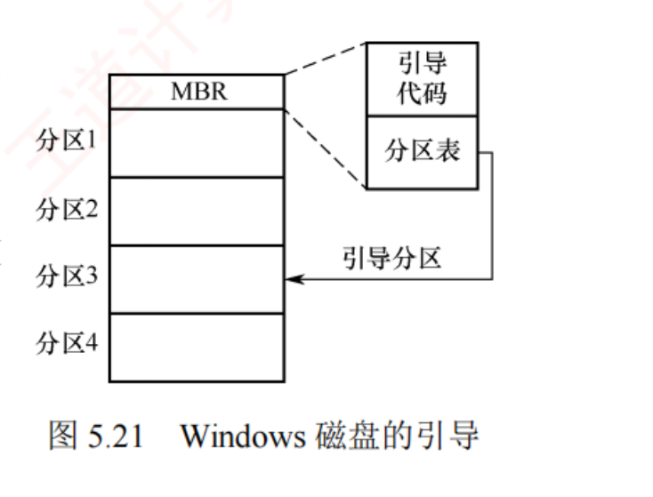
图 5.21 Windows 磁盘的引导 ——MBR 在第 0 号扇区 ，内含引导代码 + 分区表 + 一个指明从哪个分区引导的标志位 ，箭头指向引导分区（活动分区）
知识串联 · 开机引导这条链，横跨 OS ch1、组原 ch3 与本章
连到 OS 1.1 · 组原 3.1 「按下电源到 OS 跑起来」这条链在三处各讲了一段，本节补的是中间最关键的一段：
阶段 发生了什么 在哪一章 ① 上电 CPU 从固定地址 取第一条指令，该地址落在 ROM 中 组原 3.1 （ROM 属于主存，掉电不丢）② ROM 中的小型自举装入程序 初始化 CPU、寄存器、设备控制器和内存；读磁盘第 0 号扇区的 MBR 本节 ⭐ ③ MBR 按分区表 + 标志位 找到活动分区，读它的引导扇区 本节 ⭐ ④ 引导扇区里的完整引导程序 把 OS 内核载入内存，跳转至入口 本节 / OS 1.1 ⑤ OS 接管 初始化内核数据结构、创建第一个进程 OS 1.1 / 2.1
⟹ 这条链能答一道常见简答题：「操作系统自身存放在磁盘上，那么是谁把它读进内存的？」
答：ROM 中的自举装入程序 → MBR → 引导扇区中的引导程序，三级接力。
⭐ 注意本节这句话的措辞：「含有引导块的磁盘称为启动磁盘或系统磁盘 」 ——
这是一个可以直接出选择题的定义 ，而且它解释了「为什么不是每块盘都能启动」。 必记 · 引导块与 Windows 引导过程
自举程序 用于初始化 CPU、寄存器、设备控制器和内存，随后加载并启动 OS。自举程序通常存放于 ROM 中。为避免因修改自举代码而更换 ROM，一般仅在 ROM 中保留一个小型自举装入程序 ，
而将功能完整的引导程序存放在磁盘的引导块 中。含有引导块的磁盘称为启动磁盘或系统磁盘 。 Windows 的引导链 ：ROM 中的代码 → 读第 0 号扇区的 MBR （含引导代码、分区表、引导标志位）→
找到活动分区（引导分区，含 OS 核心文件） → 读该分区的首扇区（引导扇区） → 加载系统服务与驱动程序。
我的补讲 · 「为什么不把整个引导程序放 ROM」——这句话答的是一道简答题
书上给了理由：避免因修改自举代码而更换 ROM 硬件 → 潜台词是 ROM 改不了，磁盘能改 →
于是形成了一个通用设计模式：把「不变的一小段」放硬件，把「会变的一大段」放软件，由前者去加载后者 。
这个模式你已经见过好几次了：
不变的一小段（硬件/固定位置） 会变的一大段 在哪 ROM 里的小型自举装入程序 磁盘引导块里的完整引导程序 本节 MBR（固定在 0 号扇区） 各分区的引导扇区 本节 中断向量表的固定入口地址 各设备的中断处理程序（可注册可注销 ） 5.1.3 系统调用的统一入口 system_call() 跳转表分派到的各服务例程 5.1.3
⟹ 四行都是「一个固定的门 + 一张可改的表 」。凡是题目问「为什么要留一个固定位置」，答案永远是：因为硬件只认死地址。 📄 p.342
5.3.3 磁盘调度算法 ⭐⭐⭐ 本章最重要的一节，3 道综合真题全在这
我的补讲 · 三个公式的单位陷阱清单——本节计算题的失分几乎全在这四条上
公式本身没有难度，难的是单位。我把本节 48 道题里出现过的单位坑列全 ，动笔前扫一眼：
# 陷阱 正确做法 1 r 到底是「每秒转数」还是「每分转数」 公式里的 r 一律是每秒转数 ；题干给 5400 转/分要先 ÷60 = 90 转/秒 2 旋转延迟该不该 ÷2 问「平均」才用 1/(2r)；问「最坏」用 1/r；问「读一整条磁道」用 1/r（转一整圈） 3 Ts = m·n + s 里的 s 加几次 每一次寻道都要加一个 s ，不是整趟调度只加一次4 b/(rN) 里的 b 和 N 单位要一致 都换成字节（或都换成扇区数）再相除；N 是「每条磁道」的字节数，不是整盘
⟹ 再补一条经验：题干若只给「读一个扇区的时间」，往往已经把传输时间打包好了，就别再去算 b/(rN) ——
重复计算传输时间是这类题第二常见的错法。
⭐ 一个能省时间的换算：转速 r 转/秒 ⟹ 转一圈 1/r 秒 ⟹ 转过 1/k 圈 = 1/(kr) 秒 。
「读一个扇区的时间」＝「转过一个扇区所需时间」＝ 一圈时间 ÷ 每道扇区数 ——本节的传输时间题一律可以这么口算。 必记 · 磁盘存取时间三段式（三个公式必须连着背 ）
① 寻道时间 Ts ＝磁头臂的
启动时间 s +
跨越 n 条磁道的移动时间 ：
Ts = m·n + s （m ≈ 0.2 ms/道，s ≈ 2 ms）
② 旋转延迟时间 Tr ＝目标扇区转到磁头下方的
平均 等待时间（
位置随机 ⟹ 平均为半圈 ）：
Tr = 1 / (2r) （r＝磁盘每秒转数；5400 转/分 ⟹ 一圈 11.1 ms ⟹ Tr ≈ 5.56 ms）
③ 数据传输时间 Tt ＝读/写 b 字节所需时间（每条磁道存 N 字节）：
Tt = b / (r·N)
⟹ 总平均存取时间：
Ta = Ts + 1/(2r) + b/(r·N)
我的补讲 · 「平均」这两个字，在本节有三处不同的含义，混了就会算错
本节到处是「平均」：平均存取时间、平均旋转延迟、平均寻道长度 → 它们平均的对象完全不同 →
逐个钉清楚，计算题就不会串：
词 对什么取平均 公式里体现为 什么时候不 取平均 平均旋转延迟 Tr 目标扇区的随机位置 （0 ～ 一整圈）1/(2r) 里的那个 2 题干问「最坏情况」时，用一整圈 1/r 平均寻道长度 本次调度中的每一个请求 总移动磁道数 ÷ 请求个数 问「总移动磁道数」时不除 总平均存取时间 Ta 上面两者都已取平均后的合计 Ts + 1/(2r) + b/(rN) —
⚠️ 第二行的除数是请求个数 不是移动次数：本节例子里 9 个请求，所以一律 ÷9，
哪怕 SCAN 中途经过了 200 号磁道（那不是一个请求，不计入除数） 。
⟹ 再补一条容易忽略的：Ts = m·n + s 里的 s（启动时间约 2 ms）是每次寻道都要加 的 ，
不是整个调度只加一次 。若题目给了启动时间，总寻道时间 = m×(总磁道数) + s×(寻道次数) 。 必记 · 本节的判据句（「磁盘调度的目标是什么」只有这一个答案 ）
在磁盘存取时间中，寻道时间占主导地位，且直接受磁盘调度算法影响 ；
而旋转延迟时间和数据传输时间均与磁盘转速成反比 ，因此转速是磁盘性能的一个非常重要的硬件 参数，难以从操作系统层面进行优化 。
因此，磁盘调度的主要目标是减少磁盘的平均寻道时间 。
我的补讲 · 三段式的三个数，各自「归谁管」——这张表能一口气答掉四五道选择题
书上把「谁能优化」写成一段散文 → 潜台词是 三段时间的可控性完全不同 → 所以能考「下列哪种手段能减少 X 时间」：
时间段 由什么决定 OS 能不能优化 用什么手段 寻道时间 Ts 磁头臂要跨几条磁道 ✅ 能，而且是唯一能大幅优化的 磁盘调度算法 （SSTF/SCAN/…）· 优化物理块分布 （同柱面、同磁道、成簇）旋转延迟 Tr 转速 r （硬件）⚠️ 大小改不了，但「错过扇区」可以避免 扇区交替编号 · 盘面错位命名 （5.3.3 第 3 部分）传输时间 Tt 转速 r 与每道字节数 N （硬件）❌ 软件无能为力 —
⚠️ 中间那一行最容易答错。「交替编号能减少旋转延迟吗」——能 ；
「交替编号能减少平均 旋转延迟 1/(2r) 吗」——不能 ，它减少的是「因为错过扇区而白等一整圈 」的额外损失。
两句话差一个词，答案相反。
⟹ 收口句原文：「寻道时间和旋转延迟时间属于『找』的时间，这类开销可通过合理的调度算法或布局优化来降低；
而传输时间主要由磁盘本身的特性决定，难以通过软件手段减少。」 知识串联 · 「转速决定后两段」直接接组原 3.4，两科的公式是同一套
连到 组原 3.4 外部存储器 组原 3.4 讲磁盘时用的是同一套三段式 ，但组原更爱考「数据传输率」，OS 更爱考「调度」：
组原 3.4 的问法 本章的问法 公式 最大数据传输率 = r × N （每秒转数 × 每道字节数）Ta = Ts + 1/(2r) + b/(rN) 典型题 「读一个扇区需多长时间」「磁盘容量是多少」 「用 SCAN 算法磁头移动多少磁道 」 是否考调度 完全不考 本章的全部重心
⟹ 也就是说：三段式这套公式你在组原已经会了，本章只需要在它前面接上「调度算法算出的 n」 。
本节真正的新东西只有一个：给定磁道序列，按算法求移动总磁道数。
⚠️ 两科合考的题长这样：先用调度算法算出总移动磁道数 → 再用 Ts =m·n+s 换成毫秒 → 再加上旋转延迟和传输时间。
2010 年那道综合真题（本章综 06）走的正是这条完整链条。 我的补讲 · 手算调度题的三步法：20 秒算完一个算法，且不会漏项
六种算法的数字很难背，但手算其实只需要三步，而且每步都有防错点 ：
步 做什么 防错点 ① 排序 把请求序列从小到大排一遍 ，标出磁头位置落在哪两个之间 本例排完是 18, 38, 39, 55, 58, 90 ｜ 100 ｜ 150, 160, 184 ② 定路线 按算法写出访问顺序 （含端点/不含端点由算法决定） SCAN/C-SCAN 要不要写 0 和 200，就在这一步定 ③ 算距离 不要逐段相减！ 用折线端点法 ：把路线拆成几段单向行程，每段 = |终点 − 起点|，再相加 本例 SCAN = (200−100) + (200−18) = 100 + 182 = 282 ✓
⭐ 第 ③ 步的「折线端点法」是最大的提速点：不管中间经过多少个请求，只要方向没变，就只算首尾两点之差 。
算法 折线拆段 总和 SSTF 100→90→18（先左）＝10+72＝82；18→184＝166 82+166 = 248 ✓SCAN 100→200＝100；200→18＝182 282 ✓C-SCAN 100→200＝100；200→0＝200；0→90＝90 390 ✓LOOK 100→184＝84；184→18＝166 250 ✓C-LOOK 100→184＝84；184→18＝166；18→90＝72 322 ✓
⚠️ 只有 FCFS 不能用折线法 ——它的方向反复横跳，必须逐段相减（这也正是它慢的原因）。 必记 · 贯穿全节的例子（图 5.22–5.27 全部用它，这组数必须背熟 ）
磁盘请求队列：55, 58, 39, 18, 90, 160, 150, 38, 184 ；磁头初始位于磁道 100 ；磁盘 0–200 道。 共 9 个请求 ⟹ 所有「平均寻道长度」都是「总移动磁道数 ÷ 9」。
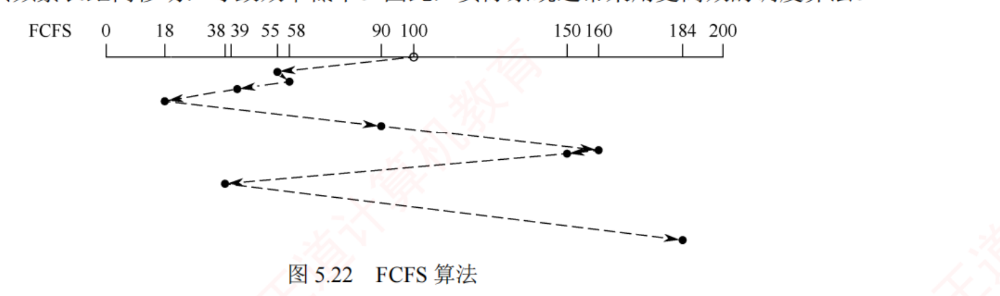
图 5.22 FCFS 算法 ——磁头轨迹来回横跳 ，一眼看出「平均寻道距离大」
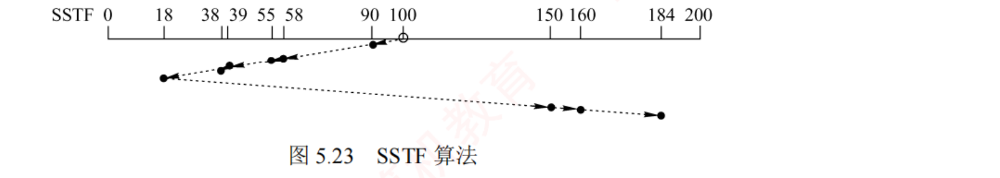
图 5.23 SSTF 算法 ——先在 90~18 这一小片来回啃 ，最后才一口气冲到 150/160/184。「若磁头位于 18 号磁道且附近持续出现新请求，则 184 号将长期得不到服务」——饥饿就画在这张图上。
图 5.24 SCAN 算法（电梯调度） ——注意轨迹一直走到了 200 （磁盘物理端点），才折返向内
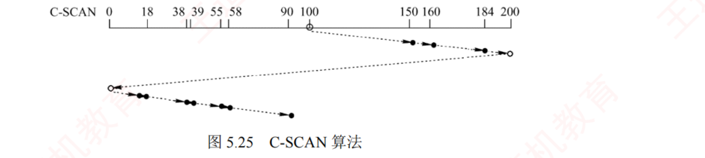
图 5.25 C-SCAN 算法 ——走到 200 后直接跳回 0 （图上那条长斜线），再从 0 开始向大号方向服务。那条「200 → 0」的长斜线算不算距离，就是本章第 10 条分界线。
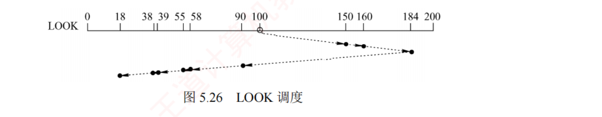
图 5.26 LOOK 调度 ——只走到 184 就折返 ，不去 200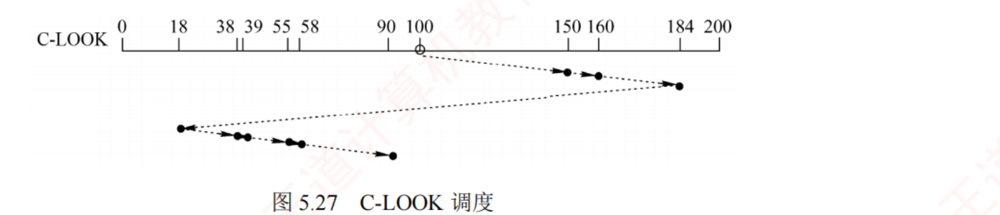
图 5.27 C-LOOK 调度 ——走到 184 后直接跳回 18 ，不去 200 也不去 0
知识串联 · 「提高文件访问速度的三个方面」，其中两个在 ch4，第三个才是本节
承 OS 4.2 / 4.3 5.3.3 末尾原文：「文件的访问速度是衡量文件系统性能最重要的因素，可从以下三个方面来优化：
① 改进文件的目录结构和检索目录的方法 ② 选取好的文件存储结构 ③ 提高磁盘 I/O 速度 。
其中①和②已在第 4 章中介绍。」——这句话给了两章的分界 ：
方面 具体做法 在哪一章 ① 改进目录结构与检索方法 树形目录 · 目录项分解（把 inode 号与文件名分开）· 目录缓存 ch4.2.3 / 4.2.5 ② 选取好的文件存储结构 连续 / 链接 / 索引 / 混合索引；用簇作分配单位 ch4.2.6 ⭐ ③ 提高磁盘 I/O 速度 高速缓存 · 调度算法 · 提前读 · 延迟写 · 优化物理块分布 · 虚拟盘 · RAID 本节 ⭐
⟹ 三条合起来才是「一次文件访问有多快」的完整答案：先找得快（目录）、再定位得准（物理结构）、最后搬得快（磁盘 I/O） 。
综合题若问「如何提高某文件系统的性能」，三个方面各答一两条，比在一个方面里写十条更容易拿满分。
⭐ 注意 ② 和 ③ 有一处重叠：「以簇为单位分配」在 ch4 是为了减少索引表大小，在本节是为了减少磁头移动 ——
同一个手段，两章各说了它的一半好处。 必记 · 六种算法在同一组数据上的完整对照（逐个数字都能背下来最好 ）
算法 访问顺序（从 100 出发） 总移动磁道数 平均寻道长度 FCFS 55 → 58 → 39 → 18 → 90 → 160 → 150 → 38 → 184 498 55.3 SSTF 90 → 58 → 55 → 39 → 38 → 18 → 150 → 160 → 184 248 27.5 SCAN （向大号方向） 150 → 160 → 184 → 200 → 90 → 58 → 55 → 39 → 38 → 18 282 31.33 C-SCAN （向大号方向） 150 → 160 → 184 → 200 → 0 → 18 → 38 → 39 → 55 → 58 → 90 390 43.33 LOOK 150 → 160 → 184 → 90 → 58 → 55 → 39 → 38 → 18 250 27.78 C-LOOK 150 → 160 → 184 → 18 → 38 → 39 → 55 → 58 → 90 322 35.78
📌 其中 LOOK = 250、C-LOOK = 322 是书上没给的 ，我用 Python 独立算出来补进这张表——
有了这两行，六种算法才能在同一组数据上横向比较 （书上只给了前四行）。 我的补讲 · 六个数字里藏着四条结论，比死记数字有用得多
把上表竖着看，能读出四件事——它们才是选择题真正问的东西 ：
# 结论 从哪两行看出来 1 FCFS 是最差的（498），但它公平且无饥饿 FCFS vs 其余全部 2 SSTF（248）几乎总是最优，但可能饥饿 SSTF vs SCAN 3 LOOK 一定 ≤ SCAN；C-LOOK 一定 ≤ C-SCAN （250 < 282，322 < 390）因为 LOOK 少跑了「到端点」的那两截 4 C-SCAN（390）比 SCAN（282）还差！ 循环扫描换来的是公平性 ，不是更短的距离
⚠️ 第 4 条最反直觉，也最容易被出成「下列说法错误的是：C-SCAN 的寻道性能优于 SCAN」。
C-SCAN 用一次长跳（200→0，整整 200 道）换掉了「中间区域被冷落」的问题 ——
它优化的是响应时间的方差 ，不是总距离。 表 5.2 里 C-SCAN 那一行的「缺点」是 — （书上留空），
但真实的缺点就在这个数字里。 陷阱 · ⚠️⚠️ C-SCAN 的返程算不算距离——2024 算，2010 不算，两年官方口径不同
这是本章唯一一处「书上说不清、真题自己打架」的地方，两道题必须并排放：
年份 题目怎么问 返程怎么处理 算出来是多少 2024（选 34） 标准 C-SCAN，磁头走到端点后跳回起始端 返程 399 道整段计入 把那一大跳全部加进总移动磁道数 2010（综 06） C-SCAN，从 120 号磁道回到 30 号 返程不计入 ，只记 120→30 的 90 只按「有效服务段」计
歧义的源头就是正文那句：「若无特别说明，实际系统中所称的 SCAN 算法和 C-SCAN 算法通常指 LOOK 调度和 C-LOOK 调度。」
⟹ 唯一可行的应对：不要背一个统一口径，只能以题干措辞与选项反推 ：
题干里出现 就按什么算 「移动到磁盘的一端 / 最外侧磁道 / 0 号磁道 」，或明写「非 LOOK 调度 」 走到物理端点，返程整段计入 「只需移动到当前方向上最远的请求位置 」，或给出的选项里没有含端点的数 按 LOOK / C-LOOK 算 什么都没说、但选项里恰好有一个数等于「不含返程」 选它 ——命题人默认了 C-LOOK 口径
⟹ 考场动作：C-SCAN 的题一律把两个数都算出来，再回选项里对 。多算一遍只要 20 秒，选错就是 2 分或 4 分。 我的补讲 · 表 5.2 只有四行，缺了 LOOK / C-LOOK——我把它补全，顺便把「会不会饥饿/黏着」加成两列
书上的表 5.2 只对比了 FCFS/SSTF/SCAN/C-SCAN 的优缺点，既没有 LOOK，也没有把「饥饿」和「磁臂黏着」分开 →
而 2018 年真题问的恰恰是「不会导致磁臂黏着的是谁」 → 补全成六行两列：
算法 会饥饿吗 会磁臂黏着吗 总移动距离（本例） 一句话 FCFS 不会 不会 ⭐（2018 答案） 498 （最差）公平但慢 SSTF 会 会 248 贪心，快但不公 SCAN 不会 会 282 电梯，兼顾两头 C-SCAN 不会 会 390 更公平，但跑得更远 LOOK 不会 会 250 （本例最优之一）SCAN 去掉空跑 C-LOOK 不会 会 322 C-SCAN 去掉空跑
⚠️ 第二列和第三列不是一回事 ，这正是很多人栽的地方：
「饥饿」＝某个远处 的请求一直排不上；「磁臂黏着」＝磁头被某个热点磁道 的密集请求钉住 。
SCAN 消灭了饥饿（来回一趟总会扫到你），却消灭不了黏着（热点就在你要扫的路上） 。
⟹ 于是防黏着要另出一招，就是 NStepSCAN / FSCAN 的「分批冻结 」——把新请求扔到下一批去。 必记 · 表 5.2 四种磁盘调度算法的优缺点（原文表，qtab 重排 ）
算法 优点 缺点 FCFS 公平、简单 平均寻道距离大，仅适用于磁盘 I/O 较少的场合 SSTF 性能优于「先来先服务」 不能保证平均寻道时间最短，可能出现「饥饿」现象 SCAN 寻道性能较好，可避免「饥饿」现象 对远离磁头当前位置一端的请求响应较慢 ；对最近扫描过的区域不公平，访问局部性不如 FCFS 和 SSTF C-SCAN 消除了对两端磁道请求的不公平性 —（书上留空，实际缺点是总移动距离更大 ）
我的补讲 · SSTF 的「不能保证平均寻道时间最短」——这句话为什么不是废话
SSTF 每一步都取最近的，看起来应该最优 → 但书上偏偏写「不能保证 平均寻道时间最短」 →
潜台词是 SSTF 是贪心 ，贪心不等于全局最优 → 所以能考「SSTF 一定给出最短的总移动距离吗」：不一定 。
本节的例子恰好就是反例：SSTF 得 248，而 LOOK 得 250 ——这次 SSTF 赢了；
但只要把请求序列改一改（比如磁头右边有一个近点、左边有一大群），SSTF 会先跑去右边那一个，再折回来跑完左边，总距离就输给 LOOK 。
算法 是不是贪心 是否全局最优 会不会饥饿 SSTF 是（每步取最近） 不保证 会 SCAN / LOOK 否（按方向扫） 不保证，但方差小 不会 FCFS 否 通常最差 不会
⟹ 这条与 ch2.2 进程调度是同一句话：SJF 的平均周转时间最短，但会饥饿；SSTF 的平均寻道时间较短，但会饥饿 。
两者都是「贪最短的那个」，也都因此把「最长的那个」饿死。 知识串联 · 磁盘调度 ≡ 进程调度，六种算法一一对应
承 OS 2.2 进程调度 这是本章最值得做的一次跨章对照。把 ch2.2 的调度算法表拿过来，几乎可以逐行翻译 ：
磁盘调度（本节） 进程调度（ch2.2） 共同的性质 FCFS FCFS 公平、简单、无饥饿、性能差 ；对长/远请求友好SSTF （取最近的磁道）SJF / SRTN （取最短的作业）贪心 ⟹ 平均值好看，但会饿死「远」的那个 SCAN / LOOK （按方向扫，来回一趟保证都被服务）时间片轮转 RR （转一圈保证都被服务）用「一定会轮到你」消灭饥饿 ，代价是平均值变差C-SCAN / C-LOOK （单向服务，回程不服务）RR 的变体 / 多级反馈队列的降级 牺牲总效率换公平性（方差） NStepSCAN / FSCAN （分子队列，新请求进下一队）多级队列 / 多级反馈队列 用「分批冻结」防止新请求无限插队
⟹ 这张对照表的用法：凡是磁盘调度的定性题答不上来，就把它翻译成进程调度再答 。
「SSTF 会不会饥饿」＝「SJF 会不会饥饿」；「SCAN 公不公平」＝「RR 公不公平」。
⚠️ 但有一处不能 照搬：进程调度里「饥饿」的是进程，磁盘调度里「饥饿」的是磁道请求 ；
而磁盘特有的「磁臂黏着」在进程调度里没有对应物 ——它是「同一个磁道被反复请求」造成的，
更像 ch3 的抖动（颠簸） ：系统一直在忙，但有效工作产出为零 。 知识串联 · 饥饿 / 磁臂黏着 / 抖动——三个「系统忙但没产出」的词，一次辨清
连到 OS 2.2 · 3.2 这三个词在 408 里长得很像、都表示「系统在做无用功」，但成因和解法完全不同 ：
词 在哪一章 谁受害 成因 解法 饥饿 ch2.2 进程调度 · 本节 SSTF 某一个 进程/请求调度策略永远偏向别人 （SJF 偏短作业、SSTF 偏近磁道）老化 / 引入方向约束（SCAN） 磁臂黏着 本节 ⭐ 其他所有 请求某个磁道被反复请求，磁头走不掉 NStepSCAN / FSCAN 分批冻结 抖动（颠簸） ch3.2 虚拟内存 整个系统 驻留集太小，刚换出就要换入 工作集模型 / 挂起部分进程
⟹ 三者的共同点是「CPU/磁头一直很忙，但有效吞吐量趋近于零 」，
解法也遵循同一个思路：给系统加一个「必须往前走」的强制约束 ——
老化强制优先级上升、SCAN 强制方向、分批冻结强制新请求排队、工作集强制驻留集下限。
⚠️ 别把「饥饿」和「死锁」也搞混（ch2.4 已辨过一次）：饥饿时系统在运行，死锁时相关进程全部停住 ；
饥饿可能自行解除，死锁不会。 必记 · 磁臂黏着与两种防黏着算法（NStepSCAN / FSCAN）
磁臂黏着现象 ：SSTF、SCAN 和 C-SCAN 在特定情况下可能出现——
当一个或多个进程频繁发出对某个磁道 的 I/O 请求时，磁头会长期滞留于该区域，导致其他进程难以获得服务。 NStepSCAN ：把请求队列划分为若干长度为 N 的子队列 ；按 FCFS 依次处理各子队列，处理每个子队列内部时采用 SCAN 扫描 。
处理某子队列过程中若有新请求到达，则放入尚未处理的其他子队列中，不插入当前正在服务的子队列 。 ⭐ 两端退化（明摆着的选择题）：N 值较大时行为趋近于 SCAN；N = 1 时退化为 FCFS 。 FSCAN ＝NStepSCAN 的简化形式 ，固定划分为两个 子队列：
① 当前服务队列 （调度开始时已存在的所有请求，按 SCAN 处理）；
② 新请求队列 （本轮扫描中新到的全部暂存于此，推迟至下一轮处理 ）。
⟹ 「冻结当前、延后新请求」 ，保留 SCAN 特性、避免磁臂黏着，且实现简单、开销低 。
我的补讲 · 「N=1 退化为 FCFS」为什么成立——想通了就永远不会记反
书上直接给了两端退化的结论，没解释 → 自己推一遍，10 秒就能想明白，而且再也忘不掉：
N 的取值 每个子队列有几个请求 子队列内的 SCAN 有意义吗 整体行为 N = 1 1 个 没有 ——只有一个请求，无从「扫描」只剩队列间的 FCFS ⟹ 退化为 FCFS N → 很大 几乎全部请求 有 ——一个大队列里做一次完整扫描只剩一次 SCAN ⟹ 趋近 SCAN N = 2 个固定队列 — — 就是 FSCAN
⟹ 记法：N 越小越像 FCFS，N 越大越像 SCAN 每一批里允许优化的范围 」。而 FSCAN 是「N=2 且按时间分批」的特例 ，它的两个队列不是按长度切的，是按「本轮之前 / 本轮之中」切的 。
⭐ 2018 年真题问「不会导致磁臂黏着的是哪一个 」，答案是 FCFS ——
因为 FCFS 根本不看磁道位置，连「往近处贪」这个动作都没有，自然黏不住 。
三种会黏着的是 SSTF、SCAN、C-SCAN，一个不多一个不少。
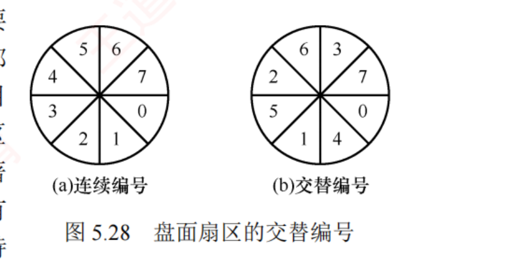
图 5.28 盘面扇区的交替编号 ——(a) 连续编号 0,1,2,…,7；(b) 交替编号 0,4,1,5,2,6,3,7 （逻辑相邻的块物理上隔开一格 ）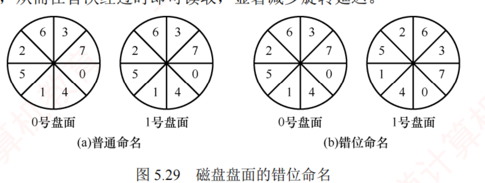
图 5.29 磁盘盘面的错位命名 ——(a) 普通命名：两个盘面编号完全一样；(b) 错位命名 ：1 号盘面整体转过一格
我的补讲 · 交替编号「隔几格」不是随便定的，它由处理时间与旋转速度之比决定
书上只给了一个 8 扇区的例子（0,4,1,5,2,6,3,7），没说这个「隔 4 格」是怎么来的 →
其实它由「处理一个扇区的时间 ÷ 转过一个扇区的时间」决定 ，这一步想通了，任何变体都能算：
条件 推论 处理时间 < 转过 1 个扇区的时间 不用交替编号 ，连续编号即可处理时间 ≈ 转过 k 个扇区的时间 逻辑相邻的扇区在物理上要隔开 k 格 （本例中相当于 k ≈ 3，即 0 与 1 之间隔了 4,‥）处理时间 > 转过一整圈 交替编号也救不了 ，只能靠缓冲/预读
⟹ 计算题的标准问法是：「若不采用交替编号，读完一整条磁道（n 个扇区）需要多长时间？采用之后呢？」
读完 n 个扇区的时间 为什么 连续编号 ≈ n × 一整圈时间 每读完一个扇区，下一个已经错过 ⟹ 每次都要等近一圈 交替编号（间隔恰当） ≈ 1～2 圈 处理完正好赶上下一个目标扇区
⭐ 这类题在本章练习系统里有专门一组。关键是先算「转过一个扇区要多久」，再和「处理时间」比大小 ，
而不是一上来就套公式。 必记 · 减少旋转延迟的两招（治的都是旋转延迟，不是寻道 ）
① 扇区交替编号（同一盘面内 ） ——问题：读完一个扇区后系统需一定时间处理，
若逻辑相邻的块物理上也相邻，处理期间下一个目标扇区可能已随盘面旋转掠过磁头，只能等近一整圈 。
解法：使逻辑相邻的块在物理布局上保持适当间隔 。② 盘面错位命名（不同盘面之间 ） ——问题：同一柱面内的块按盘面顺序连续存放
（盘面 0 扇区 0…7、盘面 1 扇区 0…7、盘面 2 扇区 0…），
读完盘面 0 扇区 7 后仍需处理时间，此间盘面持续旋转，下一个目标块（盘面 1 扇区 0）可能已被错过 。
解法：对不同盘面实施错位命名 ，使处理完盘面 0 扇区 7 后，盘面 1 扇区 0 恰好或即将到达磁头位置 。
我的补讲 · 两招的分界线：一个治「同盘面内相邻」，一个治「跨盘面相邻」
书上分两小段讲，很多人读完只记住「都是为了减少旋转延迟」，一考细节就分不清 →
其实只要抓住「相邻」这个词指的是哪两个块 ：
扇区交替编号 盘面错位命名 治的是哪两块之间的空档 同一盘面上的扇区 i 与 i+1 盘面 k 的最后一个扇区 与 盘面 k+1 的第一个扇区 怎么改 改扇区编号的排列顺序 （0,4,1,5,2,6,3,7）把整个盘面的编号整体旋转一格 改完之后 逻辑相邻的扇区物理上隔开，留出处理时间 换盘面时目标扇区恰好转到磁头下 减少的是 都是旋转延迟（准确说是「错过扇区而白等一圈」的损失），都不是寻道时间 能否叠加 能 ——图 5.29(b) 的前提就是「已采用交替编号 」
⚠️ 高频错项：「扇区交替编号可以减少寻道时间」✗ ；「错位命名用于减少同一磁道内的旋转延迟」✗ （那是交替编号）。
记法一句话：「交替治同盘，错位治跨盘。」 我的补讲 · 七条按「它治的是哪一段时间」重排，考场上更好回忆
书上按 1～7 编号列出，顺序没有内在逻辑 → 按「减少哪一段时间 / 干脆不访盘」分成三组，回忆时按组抓 ：
组 手段 机理 甲 · 干脆不访盘 ① 磁盘高速缓存 命中就完全不用碰磁盘 ⑥ 虚拟盘（RAM 盘） 数据本来就在内存里 乙 · 减少寻道时间 ② 调整磁盘请求顺序（调度算法） 让磁头少跑冤枉路 ⑤ 优化物理块分布 （同磁道/相邻磁道、成簇）让要连着读的块本来就靠在一起 ⑦ RAID 多盘并行 ⟹ 每盘要跑的路变少 （某些级别还支持交叉存取）丙 · 减少访盘次数 ③ 提前读 一次寻道多读几块，把后面的访盘省掉 ④ 延迟写 合并多次写为一次
⟹ 三组各有一句话：甲＝不去；乙＝少跑；丙＝少去几趟。
回忆时先想这三个字，再往下挂具体手段，七条一个都不会漏。
⚠️ 注意没有任何一条能减少传输时间 ——这与 5.3.3 的判据句一致：
传输时间由硬件决定，软件无能为力 。「下列哪种方法能减少数据传输时间」这种题，正确答案往往是「以上都不能」或某个硬件手段。 必记 · 提高磁盘 I/O 速度的七种方法（2012、2018 考过 ）
① 采用磁盘高速缓存 （5.2.2）；调整磁盘请求顺序 （即各种磁盘调度算法）；提前读 ——读当前块的同时，把逻辑上紧随其后的下一个（或多个）块一并预读到内存缓冲区 ；延迟写 ——修改缓冲区数据时不立即写回，仅设置延迟写标志 ；缓冲区被替换时才真正写入，从而合并多次写操作，减少 I/O 次数 ；优化物理块的分布 ——链接/索引方式组织的文件，尽量把块安排在同一磁道或相邻磁道 ；以簇为单位分配 ；虚拟盘（RAM 盘） ——用内存仿真磁盘，常用于临时文件；
⚠️ 虚拟盘与磁盘高速缓存的区别：虚拟盘的内容完全由用户程序控制 ，磁盘高速缓存的内容由操作系统透明管理 。 采用磁盘阵列 RAID ——某些级别支持交叉存取 ，大幅提高 I/O 速度。考点追踪 · 改善磁盘 I/O 性能的方法（2012、2018）
知识串联 · 「提前读」＝局部性原理，「延迟写」＝写回策略——四科同源
跨科枢纽 · 局部性 + 写回 七条里的第 ③④ 两条不是磁盘专有的，它们是 408 里被复用最多的两个机制：
本节的名字 组原叫它 OS 别处叫它 网络叫它 共同的赌注 提前读（预读） Cache 预取 （吃空间局部性 ）预调页 / 请求分页的预取 （ch3.2）TCP 滑动窗口的累积发送 接下来会用到相邻的东西 延迟写 Cache 写回法（Write Back）＋ 脏位 页面置换的修改位 （ch3.2，未修改页不必写回 ）— 合并多次写，减少慢介质访问
⟹ 两行都指向同一个判断题模板：「延迟写会不会导致数据丢失？」——会 （掉电时缓冲区里的脏数据没落盘）。
这与组原「写回法在多核下的一致性问题」、ch4「关闭文件时必须写回」是同一族的代价。
⚠️ 第 ⑥ 条的虚拟盘 vs 磁盘高速缓存，是又一次「谁在控制 」的分界线——
与 5.2.2 表 5.1 的「Cache 是副本、Buffer 是在途」不是同一条线 ，别串。
虚拟盘装的是用户主动放进去的文件 （它就是「磁盘」），磁盘高速缓存装的是OS 自动缓存的盘块副本 。 📄 p.346
5.3.4 固态硬盘（SSD） ⭐ 2025 年刚考过
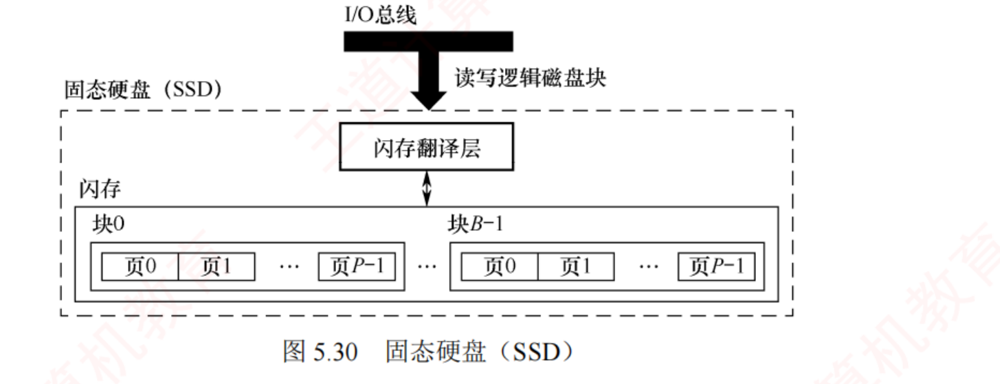
图 5.30 固态硬盘（SSD） ——I/O 总线 →（读写逻辑磁盘块）→ 闪存翻译层 → 闪存 ；闪存由块 0 … 块 B−1 组成，每块含页 0 … 页 P−1 。
⚠️ 闪存翻译层的位置＝机械盘里磁盘控制器的位置，这张图的结构就是答案。
我的补讲 · 机械盘 vs SSD 的全维度对照（2025 年考的就是这张表）
书上把 SSD 的优势写成一句排比（无噪声、无振动、功耗更低……） → 但真题问的是结构上的对应关系 →
逐项对齐，哪一行被问都能答：
维度 机械磁盘 固态硬盘 SSD 存储介质 磁性盘片 + 磁头 闪存芯片 （替代了机械驱动器 ）「翻译官」 磁盘控制器 闪存翻译层（相当于代替了磁盘控制器的角色） 读写单位 扇区 （寻址的最小物理单位）页 （512B～4KB）擦除单位 —（覆写即可） 块 （16KB～512KB，含 32～128 页）存取时间构成 寻道 + 旋转延迟 + 传输 没有寻道、没有旋转延迟 ⟹ 随机访问延迟极低 随机 vs 顺序 随机慢（要寻道） 随机读快；随机写慢 （要搬整块） 寿命限制 机械磨损 每块擦写次数有限（几百～几千次） 需要磁盘调度吗 需要（本章 5.3.3 的全部内容） 基本不需要 ⟹ FCFS 就够 其他 有噪声、怕震 无机械运动部件 、无噪声、无振动、功耗更低、抗震性更强
⭐ 倒数第二行是最值得记的一条，因为它把 5.3.3 和 5.3.4 连起来了：
整整一节的磁盘调度算法，到了 SSD 上全部失效 ——它们优化的是寻道，而 SSD 没有寻道。 必记 · SSD 的结构与三句核心机制
一个 SSD 由一个或多个闪存芯片 以及闪存翻译层 组成 ：
闪存芯片替代了传统磁盘中的机械驱动器 ；
闪存翻译层负责把 CPU 发出的逻辑块读/写请求转换为对底层物理闪存的读/写控制信号，因此它相当于代替了磁盘控制器的角色 。 结构参数 ：一个闪存芯片由 B 块 组成，每块含 P 页 ；页 512B～4KB，每块 32～128 页，块 16KB～512KB 。⭐⭐ 核心机制三句（背） ：
① 读/写操作以页 为单位；擦除操作以块 为单位 ；
② 只有在整块被擦除后，才能向其中的页写入新数据；一旦某块被擦除，其所有页均可重新写入一次 ；
③ 每个块的擦写次数有限，经过若干次重复写入后，该块会因磨损而失效 。考点追踪 · 机械磁盘与固态硬盘的对比（2025）
知识串联 · 「改一页要搬整块」＝组原 Cache 的写策略问题，在 SSD 上被放大了一百倍
连到 组原 3.3 · OS 3.2 「修改单位小于管理单位」这个矛盾，在三处都出现过，SSD 是其中最极端的一个：
场景 修改单位 管理单位 代价 缓解手段 SSD 写入 页（512B~4KB） 块（16KB~512KB） 改一页 ⟹ 搬走整块的有效页 + 擦整块 + 重写 磨损均衡 · 闪存翻译层的重映射 Cache 写 一个字 一个 Cache 行 写不命中时要先把整行调入 （写分配法）写回法 + 脏位 （不必每次写主存）页面置换写回 一个字 一整页 改一个字节也要写回整页 修改位（未修改页不写回）
⟹ 三行的缓解手段惊人地一致：都是「加一个标记位，尽量别真的搬」 ——
脏位、修改位、闪存翻译层的映射表，本质上是同一个把戏。
⭐ 但 SSD 有一处独一无二：它的管理单位（块）比修改单位（页）大了 32～128 倍 ，
而 Cache 行/页只大几十到几千字节。倍数一大，「搬整块」的代价就从「略慢」变成「慢一个数量级」——这正是随机写慢的根本原因。 必记 · 随机写入速度慢的两个原因（第 ② 条是根因 ）
① 擦除操作耗时较长，通常比页访问慢一个数量级 ；若需修改一个已包含有效数据的页 Pi ，必须先将该块中所有有效页复制到一个新的（已擦除的）块中，再执行对 Pi 的写入 。 相比机械磁盘的优势 ：由半导体器件构成，无机械运动部件 ⟹ 随机访问延迟极低 ，且无噪声、无振动、功耗更低、抗震性更强、安全性更高 。
我的补讲 · 「改一页要搬整块」是 SSD 一切怪异行为的根源，一句话推出四个结论
书上把「读写以页、擦除以块」和「随机写慢」分两段写 → 潜台词是 后者是前者的必然后果 →
抓住「擦除粒度（块）比写入粒度（页）大 」这一条，四个结论全能推出来：
结论 推导 ① 随机写远慢于随机读 读一页就是读一页；写一页可能要「搬走整块的有效页 + 擦整块 + 写回」 ② 顺序写快于随机写 顺序写正好一整块一整块地填，不必搬迁任何有效页 ③ 必须有磨损均衡 既然每次改动都可能擦掉整块，热点数据所在的块会飞速磨损 ④ SSD 不需要磁盘调度算法 没有磁头 ⟹ 没有寻道 ⟹ 「按磁道排序」毫无意义，FCFS 就够了
⚠️ 第 ④ 条是本章唯一一处把 5.3.3 和 5.3.4 连起来的考点：「SSD 上采用 SSTF 能提高性能吗」——不能 。
磁盘调度算法优化的是寻道时间，而 SSD 的寻道时间是 0。 这条 2025 年考「机械磁盘与固态硬盘的对比」时就在选项里。 知识串联 · 磨损均衡 ≡ 一次「负载均衡」，它的取舍和页面置换是同一套
连到 OS 3.2 · 2.2 磨损均衡要解决的问题，用 OS 的语言说就是：某个资源被过度使用，而另一些资源闲着 ——
这在前面两章各出现过一次：
场景 被过度使用的 闲着的 均衡手段 手段的代价 SSD 磨损 热点闪存块 被冷数据占着的低磨损块 动态（写时挑）· 静态（后台迁移） 静态均衡自己也在写，消耗寿命 页面置换 某几个页框反复换入换出 其他进程的页框 全局置换 / 工作集调整 可能抖动 进程调度 某个进程霸占 CPU 饥饿的进程 时间片轮转 · 老化 切换开销
⟹ 三行都遵循同一条规律：均衡本身是有成本的，用力过猛反而更糟 ——
静态磨损均衡迁移太勤会缩短寿命，时间片太短会把时间全花在切换上，全局置换太激进会抖动。
⚠️ 这条「均衡的成本」是很多综合题的第二问：「该策略有什么缺点？」——答案往往就是「它自身的开销」 。 必记 · 磨损均衡的两类（动态 vs 静态，触发时机完全不同 ）
SSD 的主要缺点在于闪存的擦写寿命有限，通常仅为几百至几千次 。
若不加管理，
读/写会集中在少数物理块上迅速磨损 ⟹ 一旦这部分损坏，整块 SSD 即告失效 ，
可能导致一块 256GB 的 SSD，仅因几兆字节的闪存损坏而报废。
动态磨损均衡 静态磨损均衡 （更高级）什么时候做 在写入数据时 即使没有新数据写入，控制器也会定期扫描并自动进行数据迁移 做什么 优先选择擦写次数较少的空闲块 ，避免反复写入同一区域把高磨损块中的有效数据 迁移到低磨损块中 效果 把写入负载分散到更多物理块 使高磨损块转为以读为主，低磨损块承担更多写入任务
⚠️ 2026 级新增细节：静态磨损均衡是在后台空闲时主动迁移「冷数据」 ，而不是 发生在写入时刻 。 我的补讲 · 静态磨损均衡为什么要动「没人碰的冷数据」——这才是它比动态高级的地方
书上只说静态更高级，没说高级在哪 → 想一遍就懂：动态均衡只能在空闲块 之间调配，
但如果有一大片块被冷数据长期占着（比如你三年前存的照片），它们的擦写次数永远是 0，却也永远不参与均衡 →
于是剩下的那些块要独自扛下全部写入 ，还是会先坏。
静态均衡的做法就是：主动把冷数据搬到「已经磨损较多」的块里去躺着 ，把新腾出来的、还很新的块交给频繁写入的热数据用。
动态均衡 静态均衡 参与均衡的块 只有空闲块 所有块，包括被冷数据占着的 会不会产生额外写入 不会 （顺手挑一个而已）会 ——迁移本身就是写，这是它的代价 一句话 「新数据挑新块写」 「把老实人赶去住旧房，好房留给折腾的人 」
⟹ 由此还能答一道更难的题：「静态磨损均衡会不会缩短 SSD 寿命？」——短期看会（多了迁移写），长期看显著延长 。
这正是「局部最优 vs 全局最优」在硬件层的又一次出现，与 SSTF 那条同源。 知识串联 · 「容量用 2 的幂、速率用 10 的幂」——这条单位规矩横跨三科
跨科枢纽 · 单位 本例里 128000 GB ÷ 1024 = 125 TB 用的是 2 的幂。什么时候用 2、什么时候用 10，是有硬规矩的 ：
量 进制 例 出处 存储容量 （内存、磁盘、Cache、SSD）2 的幂 ：1 KB=2¹⁰ B，1 TB=1024 GB本节的 125 TB ；ch3 的页面大小 4KB本章 · OS ch3/ch4 · 组原 ch3 传输速率 / 带宽 10 的幂 ：1 Mb/s = 10⁶ b/s组原总线带宽；网络的 100 Mb/s 组原 ch6 · 计网 时钟频率 10 的幂 ：1 GHz = 10⁹ Hz组原 CPI 与主频计算 组原 ch1/ch5 厂商标称的硬盘容量 ⚠️ 10 的幂 （1 TB = 10¹² B） 「500GB 的盘装不下 500GB 数据」的由来 常识题
⟹ 组原 ch6「总线带宽」那条分界线里已经钉过一次这条规矩，本章又用到。
做题时先看这个量是「装多少」还是「跑多快」：装多少用 2，跑多快用 10。
⭐ 本例正好能自查：256 × 500 = 128000 ，若按 1000 除得 128 TB，按 1024 除得 125 TB ，
书上给的是 125，说明用的是 2 的幂 ——128 这个数一定会作为干扰项出现。 必记 · 寿命估算例子（书上给的数，Python 复算通过 ）
一块 256GB 的 SSD，若闪存的擦写寿命为 500 次 ，则理论总写入量可达 125TB 。
即使每天持续写入 10GB 数据，也需要三十多年 才会达到寿命极限。 🐍 复算：256 GB × 500 = 128000 GB = 125 TB （1 TB = 1024 GB）✓；125 TB ÷ 10 GB/天 = 12800 天 ≈ 35 年 ✓
我的补讲 · 这道例子里有一个单位陷阱，考场上极容易掉
128000 GB 换成 TB，除的是 1024 不是 1000 ——128000 ÷ 1024 = 125 ，正好是整数，所以书上写 125TB。
若按 1000 除会得到 128TB ，这个数一定会出现在选项里。⟹ 本章（以及组原全书）的单位规矩：存储容量一律 2 的幂（1TB=1024GB）；传输速率/带宽才用 10 的幂（1Mb/s=10⁶ b/s） 。
「容量用 2、速率用 10」这句话在组原 ch3/ch6 已经钉过两遍，本章又用到一次。
我的补讲 · 小结的两问其实是同一句话的正反两面，一起记只要记一次
第 1 问答「寻道时间最长」，第 2 问答「优先放同一柱面的不同盘面」 → 第 2 问的理由就是第 1 问的结论 →
两问可以压成一条推理链：
步 内容 ① 三段时间里寻道最长 （磁头臂是机械运动）② ⟹ 能不寻道就别寻道 ③ ⟹ 同一柱面的各磁道半径相同，换盘面只需切换磁头，无须移动磁头臂 ⟹ 无寻道开销 ④ ⟹ 剩余数据优先放同一柱面的不同盘面 ，而不是同一盘面的不同磁道
⟹ 这条链还能继续往下接两步，正好把本节其余内容也串进来：
⑤ 同一柱面也放不下了怎么办？放相邻柱面 （寻道距离最短）——这就是 5.3.3「优化物理块的分布」那一条；会 ⟹ 所以要盘面错位命名 ——这就是图 5.29。
⭐ 六步连起来读，5.3 的后半节（调度、编号、布局优化）就全被一条线串住了：
「寻道最贵 ⟹ 少寻道 ⟹ 同柱面优先 ⟹ 错位命名补上换盘面的旋转损失」 必记 · 5.3.5 本节小结——开篇两问的答案
1) 磁盘一次读/写操作包含哪几部分时间？其中哪部分最长？ 寻道时间、旋转延迟和传输时间 三部分。由于磁头臂的机械运动较慢，寻道时间通常最长 。 2) 若一个磁道容纳不下，剩余数据应放在同一盘面的不同磁道，还是同一柱面的不同盘面？ 应优先存放在同一柱面的不同盘面 上。
同一柱面的各磁道半径相同，切换盘面仅需选择对应磁头，无须移动磁头臂，故无寻道开销 ；
而存放在同一盘面的不同磁道则须移动磁头臂，产生显著寻道延迟。
我的补讲 · 5.3 读完自测八问（本节是全章重心，这八问答不出别去做题）
# 问题 回哪一节 1 三段式的三个公式分别是什么？哪一段 OS 能优化？ 5.3.3 ⭐⭐ 2 由线性块号求柱面号/盘面号/扇区号，三个式子怎么写？ 5.3.1 ⭐ 3 低级格式化、分区、高级格式化各干什么？ 5.3.2 ⭐⭐ 4 六种调度算法在例题上的六个数是多少？ 5.3.3 ⭐⭐ 5 C-SCAN 的返程什么时候算、什么时候不算？ 5.3.3 ⭐⭐⭐ 6 哪三种算法会磁臂黏着？NStepSCAN 的两端退化是什么？ 5.3.3 ⭐ 7 交替编号和错位命名，各治哪两块之间的空档？减少的是什么时间？ 5.3.3 ⭐ 8 SSD 为什么随机写慢？动态与静态磨损均衡差在何时触发？ 5.3.4 ⭐
⚠️ 第 5 问是全章最贵的一问（2024 与 2010 口径相反 ），第 4 问是最费时间的一问（六个数要能背 ）。
这两问练熟，3 道综合真题（≈ 45 分）的入口就都打开了。 📄 p.359
5.4 本章疑难点
知识串联 · 疑难点一其实是 5.2.3 的浓缩版，两处合起来看才知道它「难」在哪
回看 5.2.3 王道把这条列进「本章疑难点」，说明它历年容易错。难点不在流程，在「什么时候才算失败」 ：
用什么名字请求 查表方式 什么时候挂等待队列 灵活性 物理设备名 SDT 里只看指定的那一台 那一台忙就挂 差——缺乏设备独立性 逻辑设备名 依次查该类设备的所有 DCT 同类设备全部 都忙才挂公共 等待队列 好
⟹ 三个关键词缺一不可：「依次查」「全部都忙」「公共等待队列」 。
把「公共」写成「该设备的等待队列」就错了 ——逻辑设备名请求的是一类 设备，队列自然也是类级的。
⭐ 这条与 ch3.1.2 的动态分区分配是同一种「找空位」逻辑：
首次适应算法也是「从头依次查，找到第一个够用的就分配，全都不够才失败」 ——
本节的「依次查该类设备的 DCT」就是设备版的首次适应。 必记 · 疑难点一：设备分配策略的改进（从「一台一台分」到「按类分」 ）
基于物理设备名的分配缺乏灵活性 ：指定的那台一忙就失败。改进办法是让进程用逻辑设备名 提出请求 ，
系统依次查找该类设备的所有 DCT ，只要存在一个空闲设备就继续分配；仅当同类设备全部 都忙时，才把进程挂入该类设备的公共 等待队列 。
我的补讲 · 王道为什么把这两条列进「本章疑难点」——因为它们各自是一节的结论 ，却被写在了节中间
本章只有两个疑难点，看上去都很短，但它们分别是 5.2.3 和 5.2.6 的收口结论 ，
王道特意抽出来放在章末，说明这两条历年最容易被读漏：
疑难点 它其实是哪一节的结论 为什么容易读漏 它会以什么形式出题 一 · 设备分配策略的改进 5.2.3 最后一段 （「逻辑设备名的改进」）夹在三步分配流程之后，像补充说明 「何时才挂公共等待队列」 （2009 年考点的延伸）二 · 用户缓冲区 vs 内核缓冲区 5.2.6 开头的「先补充两个概念」 被当成 scanf 例子的铺垫一带而过 「哪一段搬运归谁」「为什么要多拷贝一次」
⟹ 读法建议：把这两条倒回去 贴到 5.2.3 和 5.2.6 的正文里读 ，而不是当成两个孤立的知识点背。
疑难点页只有一页，它的价值是「提醒你哪两句话是结论」，不是新增内容。
⭐ 顺带一提：前四章的「本章疑难点」也都是这个套路（挑出正文里最容易被当成过渡段的结论句）。
考前只剩半天时，五章的「疑难点页」加起来只有 5 页，是性价比最高的复习材料。 必记 · 疑难点二：用户缓冲区 vs 内核缓冲区（与 5.2.6 图 5.18 合起来看 ）
内核缓冲区 在内核空间 ，存放 OS 代码和数据、供所有进程共享 ；用户缓冲区 在用户空间 ，属于某个进程。
两个地址空间相互隔离 ⟹ 系统调用必须先把设备数据复制到内核缓冲区，返回前再复制到用户缓冲区。
我的补讲 · 「为什么非要多拷贝一次」——这是一道很好的简答题，答案有三条
初学者都会问：既然最后还是要给用户，为什么不让设备直接把数据写进用户缓冲区？三条理由，任答两条即可得分 ：
# 理由 接哪一章 1 保护 ：用户缓冲区的地址由用户给，可能非法、可能已被换出 ；内核不能拿一个不可信的地址去驱动 DMAch3 地址保护 · 5.1.3「设备保护」 2 解耦速度 ：设备来数据的时机不受控，而用户进程此刻可能被换出内存 ；先落内核缓冲区就不会丢5.2.2 缓冲区的四个目的 3 复用 ：内核缓冲区里的盘块可以被其他进程再次命中 （这正是磁盘高速缓存）5.2.2 磁盘高速缓存
⟹ 反过来也要知道：现代 OS 有「零拷贝」技术专门绕开这次拷贝 （如 ch3.2 的内存映射文件 ——
把内核缓冲区直接映射进用户地址空间，一次拷贝都不做 ）。2025 年 ch3 刚考过内存映射文件，两处正好互为正反面。 知识串联 · 全章收口：本章的五样东西各自接到哪里去
全章收口 · 五条出口 第 5 章是 OS 的最后一章，它的每一样东西都是前四章某条线的终点：
本章的东西 它是谁的终点 合起来的那句话 I/O 软件四层 （5.1.3）ch1 的「OS 是资源管理者与用户接口」 四层结构就是「接口」这个抽象的完整实现 中断处理 （5.1.3）ch1.3 中断与异常 · 组原 5.5 / 7.3 硬件发信号 → OS 换进程 ，这条链三章合讲才完整缓冲区与 SPOOLing （5.2）ch2 的进程同步（生产者-消费者）· ch2.4 死锁 缓冲区是 PV 的物理载体，SPOOLing 是破互斥的唯一例子 磁盘调度 （5.3.3）ch2.2 进程调度 六种算法与进程调度一一对应，连饥饿都对应 磁盘存取时间 （5.3.3）ch4 的访盘次数 · ch3 的缺页代价 访盘次数 × Ta ＝ 真实时间 ，三章的公式在此接力
⟹ 五行连起来读，就是一句话：OS 这门课讲的是「怎么让慢的东西不拖累快的东西」 而进程调度、页面置换、磁盘调度这三套算法，本质上是同一个问题在三个速度层级上的三次求解 。
⭐ 五章读完，如果只带走一句话，就带这一句。
📌 第 5 章读完了，也就意味着《操作系统》全书五章读完了。下一步：
① 去
第 5 章练习系统 刷完
138 题（28 道真题，2009–2025 仅缺 2014） ——
其中
13 道综合题按「💭 思路 → ✍️ 考场卷面 → 📌 批注」三层写 ，配
26 段 Python 复算 。
② 去
OS 套路库 过一遍本章的套路卡；去
卡库 刷「输入/输出管理」组的易混辨析卡。
③
本章最该带走的六件东西 ：
单/双缓冲两个公式 ＋ n 块总时间两个公式 ·
I/O 软件四层的动词归属表 ·
SPOOLing 的三个「并未」＋ 它在用户层 ·
三件格式化的分工 ·
六种调度算法在例题上的六个数 ·
C-SCAN 返程的两种口径 。
④
本章唯一一处「书上说不清」的地方 ：
C-SCAN 的返程算不算距离（2024 算 / 2010 不算） ——
考场上一律把两个数都算出来再对选项。
⑤
下一科：计算机网络。 本章的「滑动窗口式缓冲」「分层结构」「中断驱动」在网络里会以
TCP 滑动窗口 · OSI/TCP-IP 分层 · 中断与轮询 的名义再出现一遍——
不是相似，是同一套思想换了介质 。
精读版 · 操作系统第 5 章 输入/输出管理 ｜ 王道 2027 版 p.305–359 ｜ 408 复盘中心